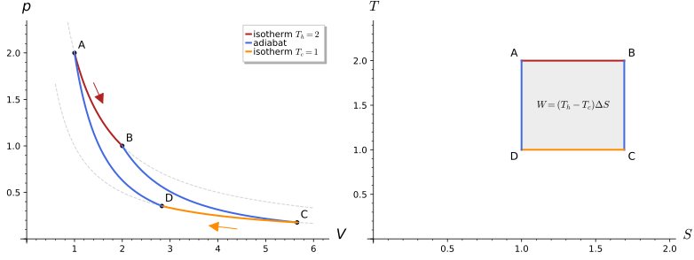
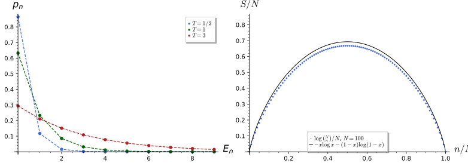
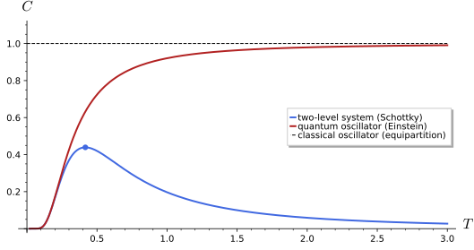
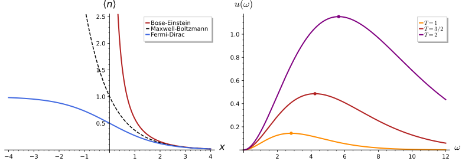
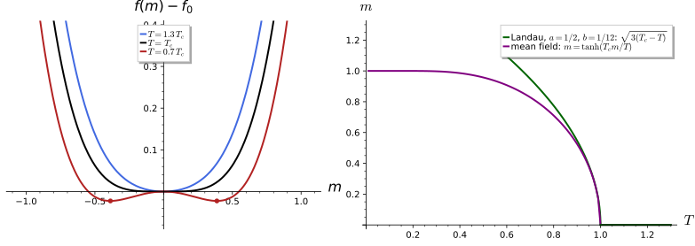
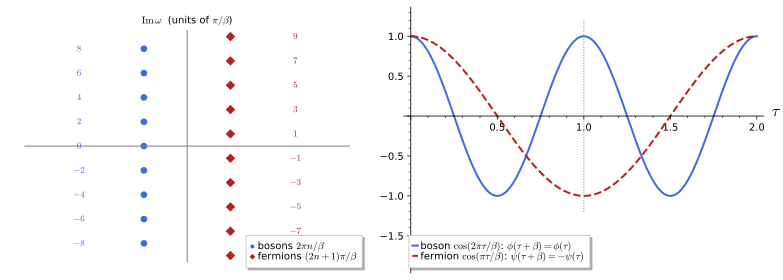

Thermodynamics and statistical mechanics
Thermodynamics describes a macroscopic system in equilibrium by a handful of state variables, pressure, volume, temperature, energy and entropy, and by the laws that relate their changes; it says nothing about atoms, and its results hold for any system whatever its microscopic constitution. Statistical mechanics derives those laws by treating the microscopic state as a random variable: an ensemble is a probability measure on the microstates, the thermodynamic quantities are expectations, and the temperature is the Lagrange multiplier that fixes the mean energy. This chapter develops both in six sections. Thermodynamics introduces state variables, the first and second laws, entropy, the thermodynamic potentials and the Maxwell relations, with the Carnot cycle as the running example. Statistical ensembles defines the microcanonical, canonical and grand-canonical ensembles, the partition function and the Boltzmann distribution, building on the probability spaces of Probability spaces. Partition functions of simple systems computes the two-level system, the harmonic oscillator and the classical ideal gas exactly, and proves equipartition. Quantum statistics derives the Bose-Einstein and Fermi-Dirac distributions, Planck’s law of blackbody radiation and, in outline, Bose-Einstein condensation. Phase transitions and Landau theory introduces order parameters, the Landau free energy, spontaneous symmetry breaking, mean field theory and critical exponents, and solves two spin systems exactly, the Curie-Weiss model and the Gaussian free field. The last section shows that the partition function of a quantum system is a trace of e^{-\beta H}, an evolution in imaginary time over an interval of length \beta = 1/T whose ends are identified: finite temperature is a field theory on a circle of circumference \beta, and the Fourier modes on that circle are the Matsubara frequencies. Units: k_B = 1 throughout, so temperature is measured in energy units, and \hbar = 1 where quantum mechanics enters, unless numbers in SI units are given. Every statement is followed by three examples of increasing complexity and three exercises of increasing difficulty with hidden solutions, and the results are checked by exact computation in Sage.
Thermodynamics
Thermodynamics is the theory of equilibrium states of macroscopic systems and of the energy exchanged between them as heat and work. This section defines the thermodynamic state and its variables, states the first law (energy conservation with heat included) and the second law (through entropy), introduces the thermodynamic potentials as Legendre transforms of the energy, and derives the Maxwell relations from the symmetry of mixed second derivatives; the ideal gas, the van der Waals gas and the Carnot cycle serve as worked examples throughout.
State variables and equilibrium
A gas in a box left alone settles into a state that no longer changes and that is described by a few numbers, the volume, the pressure, the temperature and the amount of substance. The definition below names such states and the variables that describe them, and distinguishes the variables that scale with the size of the system from those that do not.
Definition 1 (Thermodynamic state) A macroscopic system is in thermodynamic equilibrium when its macroscopic properties do not change in time and there are no net flows of energy or matter through it. An equilibrium state is a thermodynamic state; it is determined by a small number of state variables, such as the internal energy U, the volume V, the particle number N, the pressure p, the temperature T and the entropy S, any independent set of which (for a simple fluid, two of them at fixed N) fixes all the others. A state variable is extensive if it doubles when two identical copies of the system are joined (U, V, N, S) and intensive if it is unchanged (p, T and the chemical potential \mu). A relation f(p, V, T, N) = 0 between state variables valid in all equilibrium states of a system is its equation of state. Two systems in contact that exchange energy reach a common equilibrium, and the zeroth law states that thermal equilibrium is transitive; the common value of the intensive variable that labels it is the temperature. With k_B = 1, T has units of energy.
Veriphy. Pending.
Lean. Pending.
Sage. Pending.
The ideal gas is the system to which every definition of this chapter is first applied. Its equation of state is the low-density limit of every real gas, and it is the equation that the statistical mechanics of Section 1.3 will derive from first principles.
Example 1 (The ideal gas) A dilute gas of N molecules obeys pV = NT (in SI units pV = Nk_BT, with k_B = 1.380649\times10^{-23} J/K). The state is fixed by any two of p, V, T at given N: at T = 300 K and p = 1.013\times10^5 Pa, one mole (N = 6.022\times10^{23}) occupies V = Nk_BT/p = 2.46\times10^{-2} m^3, about 24.6 litres. The isotherms p = NT/V are hyperbolas in the p-V plane, drawn dashed in Figure 1.
Whether a variable is extensive or intensive is a statement about scaling, and it constrains the form of every equation of state. The second example tests the ideal gas against the definition and draws the consequence for the functions that may appear in it.
Example 2 (Scaling of state variables) Joining two copies of the same gas doubles V and N and leaves p and T unchanged, so p = NT/V must be a function of T and the density N/V only, which it is. In general an intensive function g(V, N) satisfies g(\lambda V, \lambda N) = g(V, N) for all \lambda > 0; choosing \lambda = 1/N gives g(V, N) = g(V/N, 1), a function of the specific volume v = V/N alone. An extensive function satisfies U(\lambda S, \lambda V, \lambda N) = \lambda U(S, V, N): it is homogeneous of degree one.
Real gases deviate from pV = NT because molecules occupy space and attract each other. Van der Waals’ equation captures both effects with two constants, and it is the simplest equation of state with a liquid-gas transition and a critical point.
Example 3 (The van der Waals gas) The van der Waals equation is \left(p + \frac{aN^2}{V^2}\right)(V - Nb) = NT, with b the volume excluded by one molecule and a > 0 measuring the attraction. For V \gg Nb and aN/V \ll T it reduces to the ideal gas. Its isotherms p = \frac{NT}{V - Nb} - \frac{aN^2}{V^2} are monotonic at high T and develop a local maximum and minimum below the critical temperature T_c = 8a/(27b), where \partial p/\partial V > 0 on part of the curve, a mechanically unstable region that signals the coexistence of liquid and gas (Exercise 3).
The response of a state to small changes is measured by derivatives of the equation of state, and these are the quantities that experiments measure. The first exercise computes two of them for the ideal gas and proves the cyclic relation that links the three partial derivatives of any equation of state.
Exercise 1 (Compressibility and expansion coefficient) For the ideal gas compute the isothermal compressibility \kappa_T = -\frac1V\left(\frac{\partial V}{\partial p}\right)_T and the expansion coefficient \alpha = \frac1V\left(\frac{\partial V}{\partial T}\right)_p. Show that for any equation of state g(p, V, T) = 0, \left(\frac{\partial p}{\partial T}\right)_V \left(\frac{\partial T}{\partial V}\right)_p \left(\frac{\partial V}{\partial p}\right)_T = -1, and check it in Sage for the ideal and van der Waals gases.
With V = NT/p: \kappa_T = 1/p and \alpha = 1/T. By implicit differentiation \left(\frac{\partial p}{\partial T}\right)_V = -g_T/g_p, \left(\frac{\partial T}{\partial V}\right)_p = -g_V/g_T, \left(\frac{\partial V}{\partial p}\right)_T = -g_p/g_V, and the product of the three is (-1)^3 = -1:
p, V, T, N, a, b = var("p V T N a b"); assume(p > 0, V > 0, T > 0, N > 0, a > 0, b > 0)
Vp = N * T / p
kappa = (-diff(Vp, p) / Vp).simplify_full(); alpha = (diff(Vp, T) / Vp).simplify_full()
print("kappa_T =", kappa, " alpha =", alpha)
# cyclic relation from implicit differentiation of g(p, V, T) = 0
for name, g in [("ideal gas", p * V - N * T), ("van der Waals", (p + a * N ** 2 / V ** 2) * (V - N * b) - N * T)]:
dpdT = -diff(g, T) / diff(g, p); dTdV = -diff(g, V) / diff(g, T); dVdp = -diff(g, p) / diff(g, V)
print(name, ": (dp/dT)_V (dT/dV)_p (dV/dp)_T =", (dpdT * dTdV * dVdp).simplify_full())Output:
kappa_T = 1/p alpha = 1/T
ideal gas : (dp/dT)_V (dT/dV)_p (dV/dp)_T = -1
van der Waals : (dp/dT)_V (dT/dV)_p (dV/dp)_T = -1A state variable is a function on the space of equilibrium states, and an independent set of them is a coordinate system on it. The second exercise makes the counting precise for the ideal gas and shows that the choice of coordinates is free.
Exercise 2 (Coordinates on the state space) For N fixed, the equilibrium states of an ideal gas form a two-dimensional set. Show that (p, V), (T, V) and (p, T) are each a valid pair of coordinates on \{p > 0, V > 0\}, write the transition maps between them, and compute the Jacobian determinant \partial(p, V)/\partial(T, V).
From pV = NT each pair determines the third variable: T = pV/N, p = NT/V, V = NT/p, all smooth with smooth inverses on the positive quadrant, so the three pairs are charts of the same two-dimensional manifold. The map (T, V) \mapsto (p, V) = (NT/V, V) has Jacobian determinant \partial p/\partial T|_V = N/V > 0, and its inverse is (p, V) \mapsto (pV/N, V). The state space of a simple fluid is a two-dimensional manifold, and thermodynamics is calculus on it.
The van der Waals isotherms change shape at one temperature, where the maximum and minimum of p(V) merge into an inflection point. The last exercise locates that critical point and rewrites the equation in units of the critical values, where the constants a, b disappear.
Exercise 3 (The van der Waals critical point) Find the critical point of the van der Waals gas, where (\partial p/\partial V)_T = (\partial^2 p/\partial V^2)_T = 0, and show that in the reduced variables p_r = p/p_c, V_r = V/V_c, T_r = T/T_c the equation of state is p_r = \frac{8T_r}{3V_r - 1} - \frac{3}{V_r^2}, the same for every gas (the law of corresponding states).
The first condition gives T = 2aN(V - Nb)^2/V^3; substituting into the second leaves V = 3Nb, so V_c = 3Nb, T_c = 8a/(27b), p_c = a/(27b^2) and p_cV_c/(NT_c) = 3/8, a universal ratio (about 0.29 for real gases):
p, V, T, N, a, b = var("p V T N a b"); assume(V > 0, T > 0, N > 0, a > 0, b > 0)
P = N * T / (V - N * b) - a * N ** 2 / V ** 2
Tsol = solve(diff(P, V) == 0, T)[0].rhs()
print("(dp/dV)_T = 0 gives T =", Tsol)
eq2 = diff(P, V, 2).subs(T=Tsol).simplify_full()
print("then (d^2p/dV^2)_T = 0 has the roots V =", solve(eq2.numerator() == 0, V))
Vc = 3 * N * b; Tc = Tsol.subs(V=Vc).simplify_full(); pc = P.subs(V=Vc, T=Tc).simplify_full()
print("critical point: V_c =", Vc, " T_c =", Tc, " p_c =", pc, " p_c V_c/(N T_c) =", (pc * Vc / (N * Tc)).simplify_full())
Vr, Tr = var("V_r T_r")
pr = (P.subs(V=Vr * Vc, T=Tr * Tc) / pc).simplify_full()
print("reduced equation of state: p_r =", pr, "; equals 8 T_r/(3 V_r - 1) - 3/V_r^2:", bool((pr - (8 * Tr / (3 * Vr - 1) - 3 / Vr ** 2)).simplify_full() == 0))Output:
(dp/dV)_T = 0 gives T = 2*(N^3*a*b^2 - 2*N^2*V*a*b + N*V^2*a)/V^3
then (d^2p/dV^2)_T = 0 has the roots V = [
V == 3*N*b
]
critical point: V_c = 3*N*b T_c = 8/27*a/b p_c = 1/27*a/b^2 p_c V_c/(N T_c) = 3/8
reduced equation of state: p_r = (8*T_r*V_r^2 - 9*V_r + 3)/(3*V_r^3 - V_r^2) ; equals 8 T_r/(3 V_r - 1) - 3/V_r^2: TrueThe first law
Energy can enter a system as work, when a piston moves, or as heat, when the system touches a hotter body. The first law says that the sum of the two changes a function of the state, the internal energy, even though neither of them separately is the change of any state function.
Definition 2 (First law of thermodynamics) Every system has an extensive state variable, the internal energy U, such that in any process the change of U equals the heat Q absorbed by the system minus the work W done by it: \Delta U = Q - W. For an infinitesimal quasi-static process (a succession of equilibrium states) of a fluid, dU = \delta Q - \delta W with \delta W = p\,dV. Here dU is an exact differential, the differential of a function on the state space, while \delta Q and \delta W are one-forms on the state space that are not exact: the heat and work exchanged depend on the path, only their difference does not. The heat capacities are C_V = (\delta Q/dT)_V = (\partial U/\partial T)_V and C_p = (\delta Q/dT)_p.
Veriphy. Pending.
Lean. Pending.
Sage. Pending.
On an isotherm the energy of an ideal gas does not change, because its energy depends on the temperature only. All the work done by the gas is then paid for by heat drawn from the surroundings, and the integral of p\,dV is elementary.
Example 4 (Isothermal expansion) For the monatomic ideal gas U = \frac32NT (derived in Section 1.3). Along the isotherm at temperature T from V_1 to V_2, W = \int_{V_1}^{V_2}\frac{NT}{V}dV = NT\log(V_2/V_1), \Delta U = 0 and Q = W. For the first stroke of the cycle in Figure 1 (N = 1, T = 2, V_1 = 1, V_2 = 2) the gas absorbs Q = 2\log 2 and does the same work.
An adiabatic process exchanges no heat, so the first law alone determines how the temperature falls as the gas expands. The result is a differential equation on the state space whose solutions are the adiabats.
Example 5 (Adiabatic expansion) With \delta Q = 0: \frac32N\,dT = -\frac{NT}{V}dV, so \frac{dT}{T} = -\frac23\frac{dV}{V} and TV^{2/3} is constant along the adiabat; with T = pV/N this is pV^{5/3} = \text{const}, steeper than the isotherm pV = \text{const}. In general pV^\gamma is constant with \gamma = C_p/C_V (Exercise 4). The solid blue curves of Figure 1 are two such adiabats (Exercise 5).
The third example exhibits the path dependence of heat and work directly. Two routes join the same two states of an ideal gas, and they exchange different amounts of work with the surroundings although the change of energy is the same.
Example 6 (Work depends on the path) Take the ideal gas from (p, V) = (2, 1) to (1, 2) (N = 1, both at T = 2). Along the isotherm, W = 2\log2 \approx 1.386. Along the path that first expands at constant p = 2 to V = 2 and then cools at constant V to p = 1, W = 2\cdot(2 - 1) + 0 = 2; along the reverse corner (cool at V = 1 to p = 1, then expand at p = 1), W = 1. In all three cases \Delta U = 0, so Q = W differs too: \delta Q is not exact.
Whether a one-form is the differential of a function is decided by a test on its coefficients. The next example applies the test to four simple forms in the plane, the mathematical content of the distinction between dU and \delta Q.
Example 7 (Exact and inexact forms) A form \omega = P\,dx + Q\,dy on the plane is exact iff \partial_yP = \partial_xQ. For \omega_1 = xy\,dx + y\,dy, \partial_y(xy) = x \neq 0: not exact. For \omega_2 = \sin x\cos y\,dx + \sin y\cos x\,dy both cross derivatives are -\sin x\sin y, and \omega_2 = dF with F = -\cos x\cos y. For \omega_3 = x^2dx + y^2dy, F = (x^3 + y^3)/3. For \omega_4 = y^2dx + x^2dy the cross derivatives are 2y and 2x: not exact, and its integral around the unit square [0, 1]^2 is \oint\omega_4 = \int\!\!\int(2x - 2y)\,dx\,dy = 0 while around the triangle with vertices (0, 0), (1, 0), (1, 1) it is \tfrac13 (Bricmont 2022, Exercise 5.7).
Veriphy. Pending.
Lean. Pending.
Sage. Pending.
The three textbook processes of an ideal gas each have their own heat. The next example computes it from the first law, for later use in cycles.
Example 8 (Heat in three processes) For N particles of a monatomic ideal gas, U = \tfrac32NT and pV = NT. At constant temperature \Delta U = 0 and Q = W = NT\log(V_2/V_1); at constant volume W = 0 and Q = \tfrac32N\,\Delta T; at constant pressure W = p\,\Delta V = N\,\Delta T and Q = \tfrac52N\,\Delta T. The ratio of the last two is \gamma = C_p/C_V = \tfrac53, the exponent of the adiabat of Example 5.
Veriphy. Pending.
Lean. Pending.
Sage. Pending.
Heat capacities are the first thermodynamic quantities computed from microscopic models. The first exercise finds them for the monatomic ideal gas at constant volume and at constant pressure, and their ratio, which governs the adiabats.
Exercise 4 (Heat capacities of the ideal gas) For U = \frac32NT and pV = NT, compute C_V, then C_p from \delta Q = dU + p\,dV at constant p, and \gamma = C_p/C_V. Show that the adiabats satisfy pV^\gamma = \text{const}.
C_V = \frac32N. At constant p, p\,dV = N\,dT, so \delta Q = \frac32N\,dT + N\,dT and C_p = \frac52N; \gamma = 5/3 and C_p - C_V = N. On an adiabat C_V\,dT = -p\,dV, and d(pV) = N\,dT gives C_V(p\,dV + V\,dp)/N = -p\,dV, that is, (C_V + N)p\,dV + C_VV\,dp = 0, or \gamma\,dV/V + dp/p = 0: pV^\gamma is constant.
The adiabat was found by separating variables; Sage solves the same equation and computes the work along it. The second exercise checks that this work equals the loss of internal energy, as the first law demands when no heat flows.
Exercise 5 (The adiabat in Sage) Solve \frac{dT}{dV} = -\frac{2T}{3V} with T(V_1) = T_1 in Sage, verify that TV^{2/3} and pV^{5/3} are constant, and show that the work along the adiabat from V_1 to V_2 is W = \frac32N(T_1 - T_2).
The solution is T = T_1(V_1/V)^{2/3}, and \int_{V_1}^{V_2}NT\,dV/V = \frac32NT_1(1 - (V_1/V_2)^{2/3}) = \frac32N(T_1 - T_2) = -\Delta U:
V, N, T1, V1, V2 = var("V N T_1 V_1 V_2"); assume(V > 0, N > 0, T1 > 0, V1 > 0, V2 > V1)
Tf = function("T")(V)
sol = desolve(diff(Tf, V) == -2 * Tf / (3 * V), Tf, ics=[V1, T1])
print("T(V) =", sol.simplify_log().canonicalize_radical())
print("T V^(2/3) is constant:", bool(diff((sol * V ** (2 / 3)).canonicalize_radical(), V) == 0), "; p V^(5/3) =", (N * sol / V * V ** (5 / 3)).canonicalize_radical())
Tad = T1 * (V1 / V) ** (2 / 3)
print("the solution equals T_1 (V_1/V)^(2/3):", bool((sol - Tad).canonicalize_radical() == 0))
W = integrate(N * Tad / V, V, V1, V2)
T2 = Tad.subs(V=V2)
print("W = int p dV =", W.canonicalize_radical(), "; W - (3/2) N (T_1 - T_2) =", (W - 3 / 2 * N * (T1 - T2)).canonicalize_radical())Output:
T(V) = T_1*V_1^(2/3)/V^(2/3)
T V^(2/3) is constant: True ; p V^(5/3) = N*T_1*V_1^(2/3)
the solution equals T_1 (V_1/V)^(2/3): True
W = int p dV = -3/2*(N*T_1*V_1^(2/3) - N*T_1*V_2^(2/3))/V_2^(2/3) ; W - (3/2) N (T_1 - T_2) = 0That \delta Q is not exact is a statement about a one-form on a two-dimensional manifold, and it has a remarkable remedy: an integrating factor. The last exercise finds it for the ideal gas, and the function it produces is the entropy of the next subsection.
Exercise 6 (An integrating factor for heat) On the state space of the monatomic ideal gas with coordinates (T, V), \delta Q = \frac32N\,dT + \frac{NT}{V}dV. Show that \delta Q is not closed, hence not exact, and that \delta Q/T is exact; find the function whose differential it is.
Writing \delta Q = A\,dT + B\,dV, closedness requires \partial A/\partial V = \partial B/\partial T; here 0 \neq N/V. For \delta Q/T = \frac{3N}{2T}dT + \frac NVdV the two cross derivatives both vanish, and \delta Q/T = d\left(\frac32N\log T + N\log V\right). The function S = \frac32N\log T + N\log V + \text{const} is the entropy of the ideal gas (Example 9), and 1/T is the integrating factor that the second law guarantees for every system.
Because heat is not a state function, a cycle can absorb heat. The next exercise takes an ideal gas around a cycle of three of the processes of Example 8 and computes the net heat.
Exercise 7 (A three-step cycle) An ideal gas of N particles at (T_1, V_1) is heated at constant pressure to T_2 > T_1, cooled at constant volume back to T_1, and compressed at constant temperature to V_1. Compute the net heat absorbed and the net work done in the cycle, and the same for the reversed cycle. What would the net heat be if \delta Q were exact? (Bricmont 2022, Exercise 5.3)
The constant-pressure step ends at V_2 = V_1T_2/T_1 and absorbs \tfrac52N(T_2 - T_1); the constant-volume step gives off \tfrac32N(T_2 - T_1); the isothermal compression gives off NT_1\log(V_2/V_1) = NT_1\log(T_2/T_1). The net heat is Q = N(T_2 - T_1) - NT_1\log(T_2/T_1) = NT_1(x - 1 - \log x), x = T_2/T_1, positive for x \neq 1, and equals the net work since \Delta U = 0. The reversed cycle has Q = W < 0. If \delta Q were exact its integral around any closed path would vanish: the cycle shows that it is not.
Veriphy. Pending.
Lean. Pending.
Sage. Pending.
Entropy and the second law
Heat flows by itself from hot to cold and never the reverse, and no engine converts heat into work completely. The second law turns these observations into the existence of a state function that never decreases in an isolated system. Figure 1 shows the reversible cycle that makes the definition concrete, in the p-V plane and in the T-S plane where it is a rectangle.

figures/carnot_cycle.sage.
Definition 3 (Entropy) The second law of thermodynamics asserts that there is an extensive state variable, the entropy S, such that for every quasi-static reversible process dS = \delta Q_{\text{rev}}/T, where T is the absolute temperature, and for every process of a thermally isolated system \Delta S \geq 0, with equality only for reversible processes (Clausius). Equivalently, 1/T is an integrating factor for \delta Q_{\text{rev}}. Combined with the first law, the fundamental relation dU = T\,dS - p\,dV + \mu\,dN holds between neighbouring equilibrium states, so U(S, V, N) determines everything: T = (\partial U/\partial S)_{V,N}, p = -(\partial U/\partial V)_{S,N} and the chemical potential \mu = (\partial U/\partial N)_{S,V}; inverting, 1/T = (\partial S/\partial U)_{V,N}.
Veriphy. Pending.
Lean. Pending.
Sage. Pending.
The integrating factor of Exercise 6 already produced the entropy of the ideal gas. The first example states the result with the particle-number dependence that extensivity requires, and reads off the temperature from it.
Example 9 (Entropy of the ideal gas) Integrating dS = \frac{3N}{2T}dT + \frac NVdV at fixed N and requiring S to be extensive gives S = N\left(\log \frac VN + \frac32\log T + s_0\right) with a constant s_0 (fixed by quantum mechanics in Example 47). Inverting with U = \frac32NT: S = N\left(\log\frac VN + \frac32\log\frac{2U}{3N} + s_0\right), and (\partial S/\partial U)_V = \frac{3N}{2U} = 1/T, as the definition requires.
A gas that rushes into a vacuum does no work and absorbs no heat, yet the process is irreversible. Its entropy must therefore rise, and the change is computed along any reversible path between the same end states.
Example 10 (Free expansion) An ideal gas expands from V into an evacuated container of total volume 2V. No work is done and no heat flows, so \Delta U = 0 and T is unchanged. The entropy change is computed along the reversible isotherm with the same end states: \Delta S = \int\delta Q_{\text{rev}}/T = N\log 2 > 0, although Q = 0 in the actual process. The reverse process, all molecules returning to one half, would decrease S and never happens; in Section 1.2 the reason becomes a count, 2^N times more microstates.
Heat conduction between two bodies is the prototype of an irreversible process. The third example computes the entropy produced and shows that it is positive whatever the initial temperatures, the inequality of arithmetic and geometric means in disguise.
Example 11 (Heat flow between two bodies) Two bodies of equal heat capacity C (constant) at T_1 \neq T_2 are brought into contact and isolated. Energy conservation gives the final temperature T_f = (T_1 + T_2)/2, and \Delta S = C\log\frac{T_f}{T_1} + C\log\frac{T_f}{T_2} = C\log\frac{(T_1 + T_2)^2}{4T_1T_2}. Since (T_1 + T_2)^2 - 4T_1T_2 = (T_1 - T_2)^2 > 0, \Delta S > 0; for T_1 = 300, T_2 = 400 and C = 1, \Delta S = 0.0206 (Exercise 10).
A Carnot cycle needs only the two heats exchanged on its isotherms. The next example evaluates them for one mole of gas, with the efficiency of Exercise 8 as the check.
Example 12 (A Carnot cycle with one mole) One mole of a monatomic ideal gas runs a Carnot cycle between T_h = 200\,K and T_c = 100\,K, its volume growing by a factor 4 on the hot isotherm; the adiabats VT^{3/2} = \text{const} then force the same factor 4 on the cold isotherm. The heat absorbed is Q_h = RT_h\log4 = 8.314 \times 200 \times 1.386\,\mathrm{J} = 2305\,J, the heat given off Q_c = RT_c\log4 = 1153\,J, and the work W = Q_h - Q_c = 1153\,J, so the efficiency is W/Q_h = \tfrac12 = 1 - T_c/T_h. The entropy taken from the hot source, Q_h/T_h = R\log4, equals that given to the cold one (Bricmont 2022, Exercise 5.8).
Veriphy. Pending.
Lean. Pending.
Sage. Pending.
The Carnot cycle of Figure 1 is reversible, so the entropy given up by the hot reservoir equals the entropy received by the cold one. The first exercise turns this balance into the maximal efficiency of any heat engine.
Exercise 8 (Carnot efficiency) An engine operates in a cycle between reservoirs at T_h > T_c, absorbing Q_h and rejecting Q_c. Using \Delta S_{\text{total}} \geq 0 over a cycle, show that the efficiency \eta = W/Q_h satisfies \eta \leq 1 - T_c/T_h, with equality for a reversible engine. Evaluate it for the cycle of Figure 1.
Over a cycle the working substance returns to its state, so \Delta S_{\text{total}} = -Q_h/T_h + Q_c/T_c \geq 0, that is, Q_c \geq Q_hT_c/T_h. With W = Q_h - Q_c, \eta = 1 - Q_c/Q_h \leq 1 - T_c/T_h. For the cycle of the figure, Q_h = 2\log 2, Q_c = \log 2 (the cold isotherm runs between V_D = 2\sqrt2 and V_C = 4\sqrt2, a ratio of 2), W = \log 2 and \eta = 1/2 = 1 - 1/2, as in Proposition 1.
Veriphy. Pending.
Lean. Pending.
Sage. Exact computation (figures/carnot_cycle.sage).
The fundamental relation turns an entropy function into a complete thermodynamics. The second exercise starts from the entropy of the ideal gas as a function of U and V and recovers both the energy and the equation of state.
Exercise 9 (Equations of state from the entropy) Given S(U, V) = N\left(\frac32\log U + \log V\right) + \text{const} at fixed N, use 1/T = (\partial S/\partial U)_V and p/T = (\partial S/\partial V)_U to derive U = \frac32NT and pV = NT. Show that S is concave in U and explain why concavity is needed for stability.
From dU = T\,dS - p\,dV, dS = dU/T + (p/T)dV. Then 1/T = 3N/(2U) and p/T = N/V. Concavity: \partial^2S/ \partial U^2 = -3N/(2U^2) < 0. If S were convex somewhere, splitting the energy unequally between two halves of the system would increase the total entropy S(U/2 + \epsilon) + S(U/2 - \epsilon) > 2S(U/2), and the uniform state would be unstable. Concavity also gives \partial T/\partial U = -T^2\partial^2S/\partial U^2 > 0, a positive heat capacity.
Mixing two different gases is irreversible in the same way as heat conduction. The last exercise computes the entropy produced in both processes with Sage and locates the maximum of the mixing entropy.
Exercise 10 (Entropy production in Sage)
- For Example 11, show in Sage that e^{\Delta S/C} - 1 = (T_1 - T_2)^2/(4T_1T_2). (b) Nx molecules of gas A in volume xV and N(1 - x) molecules of a different gas B in (1 - x)V, at equal T and p, are allowed to mix. Show that \Delta S_{\text{mix}} = -N(x\log x + (1 - x)\log(1 - x)) and that it is largest at x = 1/2, where it equals N\log 2.
- follows from \Delta S = C\log((T_1 + T_2)^2/(4T_1T_2)). (b) Each gas expands isothermally into the full volume, \Delta S_A = Nx\log(1/x), \Delta S_B = N(1 - x)\log(1/(1 - x)); the derivative N\log((1 - x)/x) vanishes at x = 1/2 and the second derivative -N/(x(1 - x)) is negative:
C, T1, T2, N, x = var("C T_1 T_2 N x"); assume(C > 0, T1 > 0, T2 > 0, N > 0, x > 0, x < 1)
Tf = (T1 + T2) / 2
dS = C * log(Tf / T1) + C * log(Tf / T2)
print("Delta S =", dS.simplify_log(), "; exp(Delta S/C) - 1 =", (exp(dS / C) - 1).simplify_full().factor())
print("numerical check T_1 = 300, T_2 = 400, C = 1:", dS.subs({C: 1, T1: 300, T2: 400}).n())
# mixing: N x particles of A in volume x V and N (1 - x) of B in (1 - x) V expand into V
dSmix = N * x * log(1 / x) + N * (1 - x) * log(1 / (1 - x))
print("Delta S_mix =", dSmix, "; at x = 1/2:", dSmix.subs(x=1 / 2).simplify_log(), "; dS/dx =", diff(dSmix, x).simplify_full(), "vanishes at x = 1/2:", bool(diff(dSmix, x).subs(x=1 / 2).simplify_full() == 0), "; d2S/dx2 =", diff(dSmix, x, 2).simplify_full())Output:
Delta S = C*log(1/4*(T_1 + T_2)^2/(T_1*T_2)) ; exp(Delta S/C) - 1 = 1/4*(T_1 - T_2)^2/(T_1*T_2)
numerical check T_1 = 300, T_2 = 400, C = 1: 0.0206192872027357
Delta S_mix = -N*(x - 1)*log(-1/(x - 1)) + N*x*log(1/x) ; at x = 1/2: N*log(2) ; dS/dx = -N*log(x) + N*log(-x + 1) vanishes at x = 1/2: True ; d2S/dx2 = N/(x^2 - x)The fundamental relation can be reconstructed from the equations of state. The next exercise does this with Sage for the system that turns out to be black-body radiation.
Exercise 11 (The fundamental relation of radiation) A system obeys E = aVT^4 and p = E/(3V). Find S(E, V) by integrating dS = dE/T + p\,dV/T, check it with Sage, and find its adiabats (Bricmont 2022, Exercise 5.12).
1/T = (aV/E)^{1/4} and p/T = \tfrac13a^{1/4}E^{3/4}V^{-3/4} are the partial derivatives of S = \tfrac43a^{1/4}V^{1/4}E^{3/4} (no constant, since S = 0 at E = 0):
E, V, a, T = var('E V a T'); assume(E > 0, V > 0, a > 0, T > 0)
Tf = (E / (a * V))^(1 / 4); P = E / (3 * V)
S = 4 / 3 * a^(1 / 4) * V^(1 / 4) * E^(3 / 4)
print("dS/dE = 1/T:", bool((diff(S, E) - 1 / Tf).canonicalize_radical() == 0))
print("dS/dV = P/T:", bool((diff(S, V) - P / Tf).canonicalize_radical() == 0))
print("S is homogeneous of degree one: S(2E, 2V) = 2 S(E, V):", bool((S.subs(E=2 * E, V=2 * V) - 2 * S).simplify_full() == 0))
ST = S.subs(E=a * V * T^4).canonicalize_radical()
print("S(T, V) =", ST, " so the adiabats are V T^3 = const and P V^(4/3) = const")
sv = var('sv'); assume(sv > 0)
Es = (3 * sv / (4 * (a * V)^(1 / 4)))^(4 / 3)
print("E(S, V) inverts S(E, V):", bool((S.subs(E=Es) - sv).canonicalize_radical() == 0))
print("P V^(4/3) on the adiabat S = sv:", (P * V^(4 / 3)).subs(E=Es).canonicalize_radical(), "(independent of V)")Output:
dS/dE = 1/T: True
dS/dV = P/T: True
S is homogeneous of degree one: S(2E, 2V) = 2 S(E, V): True
S(T, V) = 4/3*T^3*V*a so the adiabats are V T^3 = const and P V^(4/3) = const
E(S, V) inverts S(E, V): True
P V^(4/3) on the adiabat S = sv: 1/8*3^(1/3)*2^(1/3)*sv^(4/3)/a^(1/3) (independent of V)In terms of T, S = \tfrac43aVT^3, so the adiabats are VT^3 = \text{const}, equivalently pV^{4/3} = \text{const}: radiation is a gas with \gamma = \tfrac43, as for the radiation-filled expanding universe of general relativity (Example 66 of General relativity).
Veriphy. Pending.
Lean. Pending.
Sage. Pending.
Thermodynamic potentials
The energy U(S, V, N) is natural when entropy and volume are controlled, but in the laboratory one controls the temperature and the pressure. Replacing a variable by its conjugate is a Legendre transform, and each choice of controlled variables has its own potential whose minimum gives the equilibrium.
Definition 4 (Thermodynamic potential) The thermodynamic potentials are the Legendre transforms of U(S, V, N) with respect to some of its arguments: the Helmholtz free energy F = U - TS with dF = -S\,dT - p\,dV + \mu\,dN, natural variables (T, V, N); the enthalpy H = U + pV with dH = T\,dS + V\,dp + \mu\,dN; the Gibbs free energy G = U - TS + pV with dG = -S\,dT + V\,dp + \mu\,dN; and the grand potential \Phi = U - TS - \mu N with d\Phi = -S\,dT - p\,dV - N\,d\mu. Each potential, as a function of its natural variables, contains the full thermodynamics, and at fixed natural variables the equilibrium state of a system in contact with the corresponding reservoirs minimises it (Exercise 13).
Veriphy. Pending.
Lean. Pending.
Sage. Pending.
The Helmholtz free energy is the potential of statistical mechanics, since the canonical ensemble will give it directly as -T\log Z. The first example computes it for the ideal gas and recovers pressure and entropy as its derivatives.
Example 13 (Free energy of the ideal gas) With U = \frac32NT and the entropy of Example 9, F = U - TS = -NT\left(\log\frac VN + \frac32\log T + c\right) with c = s_0 - \frac32. Then p = -(\partial F/\partial V)_T = NT/V, S = -(\partial F/\partial T)_V = N(\log\frac VN + \frac32\log T + c + \frac32), and U = F + TS = \frac32NT.
Veriphy. Pending.
Lean. Pending.
Sage. Exact computation (figures/carnot_cycle.sage).
The Legendre transform replaces a convex function by a function of its slope. The second example performs it explicitly on the energy of the ideal gas at fixed volume and shows why the minimum over the entropy gives the free energy.
Example 14 (The Legendre transform) At fixed V, N the ideal-gas energy as a function of entropy is U(S) = Ae^{2S/(3N)} with A > 0, a convex function. Its Legendre transform is F(T) = \min_S\,(U(S) - TS): the minimum is where U'(S) = T, that is, \frac{2A}{3N}e^{2S/(3N)} = T, so U = \frac32NT and S = \frac{3N}{2}\log\frac{3NT}{2A}, and F(T) = \frac32NT - \frac32NT\log\frac{3NT}{2A}. Differentiating, -F'(T) = \frac32N\log\frac{3NT}{2A} = S, so the transform is inverted by the same operation.
Extensivity is a strong constraint: a function homogeneous of degree one equals the sum of its arguments times its partial derivatives. For the energy this gives the Euler relation and identifies the Gibbs free energy per particle with the chemical potential.
Example 15 (Euler and Gibbs-Duhem relations) Differentiating U(\lambda S, \lambda V, \lambda N) = \lambda U(S, V, N) at \lambda = 1 gives the Euler relation U = TS - pV + \mu N. Hence G = U - TS + pV = \mu N: the chemical potential is the Gibbs energy per particle, and \Phi = -pV. Comparing dU from the Euler relation with the fundamental relation gives the Gibbs-Duhem relation S\,dT - V\,dp + N\,d\mu = 0: the three intensive variables are not independent.
A free energy of the simplest power-law form already describes a real system. The next example extracts everything from F = -CVT^4, the free energy of black-body radiation derived in Definition 14.
Example 16 (Thermodynamics from F = -CVT^4) With F(T, V) = -CVT^4 and no particle number: S = -\partial_TF = 4CVT^3, p = -\partial_VF = CT^4, U = F + TS = 3CVT^4 = 3pV. The pressure depends on T only, so the isotherms are horizontal in the (V, p) plane, as for a vapour in equilibrium with its liquid, and the chemical potential, if one is defined by counting photons, vanishes: G = F + pV = 0. The adiabats are VT^3 = \text{const} (Bricmont 2022, Exercise 5.5).
Veriphy. Pending.
Lean. Pending.
Sage. Pending.
The enthalpy is the natural potential for processes at constant pressure, such as chemical reactions in an open vessel. The first exercise derives its differential and shows that it plays the role for C_p that the energy plays for C_V.
Exercise 12 (Enthalpy) Derive dH = T\,dS + V\,dp + \mu\,dN from the fundamental relation, show that C_p = (\partial H/\partial T)_p, and compute H and C_p for the monatomic ideal gas.
dH = dU + p\,dV + V\,dp = T\,dS + V\,dp + \mu\,dN. At constant p and N, dH = T\,dS = \delta Q_{\text{rev}}, so C_p = (\partial H/\partial T)_p. For the ideal gas H = \frac32NT + NT = \frac52NT and C_p = \frac52N, in agreement with Exercise 4.
The minimum principle explains why the free energy, and not the energy, decides equilibrium at fixed temperature: the reservoir’s entropy enters. The second exercise derives it from the second law applied to system plus reservoir.
Exercise 13 (The free energy is minimal at equilibrium) A system at fixed V, N is in contact with a large reservoir at temperature T. Show that in any spontaneous process \Delta F \leq 0, where F = U - TS is evaluated for the system, so that equilibrium minimises F. State the analogous principle for G at fixed T and p.
The reservoir absorbs heat -\Delta U at fixed temperature T, so its entropy changes by -\Delta U/T. The second law for the isolated whole gives \Delta S - \Delta U/T \geq 0, that is, \Delta(U - TS) \leq 0. At fixed T and p the reservoir also does work: it absorbs heat -(\Delta U + p\Delta V), and the same argument gives \Delta(U - TS + pV) = \Delta G \leq 0. This is why phase coexistence at fixed T, p requires equal Gibbs energy per particle, \mu_{\text{liquid}} = \mu_{\text{gas}}.
For the ideal gas every potential is explicit, so the Euler relation and the Gibbs-Duhem relation can be checked symbolically. The last exercise does this in Sage starting from the energy as a function of entropy, volume and particle number.
Exercise 14 (Euler relation in Sage) For U(S, V, N) = \frac32N(N/V)^{2/3}e^{2S/(3N) - s_0} compute T, p and \mu, verify pV = NT, U = TS - pV + \mu N, G = \mu N, and the Gibbs-Duhem relation along variations of each of S, V, N.
T = (N/V)^{2/3}e^{2S/(3N) - s_0}, so U = \frac32NT; all identities hold exactly:
S, V, N, s0 = var("S V N s0"); assume(V > 0, N > 0)
U = 3 / 2 * N * (N / V) ** (2 / 3) * exp(2 * S / (3 * N) - s0)
T = diff(U, S); p = -diff(U, V); mu = diff(U, N)
print("T =", T.simplify_full()); print("p V - N T =", (p * V - N * T).simplify_full())
print("mu =", mu.simplify_full())
print("U - (T S - p V + mu N) =", (U - (T * S - p * V + mu * N)).simplify_full())
G = U - T * S + p * V
print("G - mu N =", (G - mu * N).simplify_full())
# Gibbs-Duhem: S dT - V dp + N dmu = 0 along any variation of (S, V, N)
for v in [S, V, N]:
print("Gibbs-Duhem along d" + str(v) + ":", (S * diff(T, v) - V * diff(p, v) + N * diff(mu, v)).simplify_full())Output:
T = (N/V)^(2/3)*e^(-s0 + 2/3*S/N)
p V - N T = 0
mu = 1/2*(5*N - 2*S)*e^(-s0 + 2/3*S/N)/(V*(N/V)^(1/3))
U - (T S - p V + mu N) = 0
G - mu N = 0
Gibbs-Duhem along dS: 0
Gibbs-Duhem along dV: 0
Gibbs-Duhem along dN: 0Every thermodynamic potential is a Legendre transform. The next exercise computes two transforms explicitly, to see the convex duality at work outside physics.
Exercise 15 (Two Legendre transforms) Compute f^*(p) = \sup_x(px - f(x)) for f(x) = x^\alpha on x > 0 with \alpha > 1, and for f(x) = e^x. Check that f^{**} = f in both cases (Bricmont 2022, Exercise 5.9).
For x^\alpha the supremum is at p = \alpha x^{\alpha - 1}, x = (p/\alpha)^{1/(\alpha - 1)}, giving f^*(p) = (\alpha - 1)(p/\alpha)^{\alpha/(\alpha - 1)} for p > 0: a power with the conjugate exponent \beta = \alpha/(\alpha - 1), 1/\alpha + 1/\beta = 1. For e^x the supremum is at x = \log p, giving f^*(p) = p\log p - p for p > 0 (f^*(0) = 0, +\infty for p < 0): the function p\log p of the entropy. Transforming again, \sup_p(xp - p\log p + p) is attained at \log p = x and equals e^x; similarly for the power. Both functions are convex and the transform is an involution on convex functions.
Veriphy. Pending.
Lean. Pending.
Sage. Pending.
Maxwell relations
A potential is a function of two (or three) variables, and its mixed second derivatives do not depend on the order of differentiation. Applied to the four potentials, this gives four identities between response functions, the Maxwell relations, which relate quantities that look unrelated, such as an entropy derivative and a pressure derivative.
Proposition 1 (Maxwell relations and checks) For a simple fluid at fixed N, the equalities of mixed second derivatives of U(S, V), H(S, p), F(T, V) and G(T, p) give the Maxwell relations \left(\frac{\partial T}{\partial V}\right)_S = -\left(\frac{\partial p}{\partial S}\right)_V, \quad \left(\frac{\partial T}{\partial p}\right)_S = \left(\frac{\partial V}{\partial S}\right)_p, \quad \left(\frac{\partial S}{\partial V}\right)_T = \left(\frac{\partial p}{\partial T}\right)_V, \quad \left(\frac{\partial S}{\partial p}\right)_T = -\left(\frac{\partial V}{\partial T}\right)_p. Moreover: (a) F = -NT(\log(V/N) + \frac32\log T + c) gives pV = NT, U = \frac32NT and (\partial S/\partial V)_T = (\partial p/\partial T)_V = N/V; (b) the van der Waals free energy F = F_{\text{ideal}}(V - Nb) - aN^2/V gives its equation of state and the critical point T_c = 8a/(27b), V_c = 3Nb, p_c = a/(27b^2); (c) on the Carnot cycle of the ideal monatomic gas TV^{2/3} is constant on the adiabats, the entropy change over the cycle is zero and the efficiency is 1 - T_c/T_h; (d) C_p - C_V = -T(\partial p/\partial T)_V^2/(\partial p/\partial V)_T, which is N for the ideal gas and N/(1 - 2aN(V - Nb)^2/(TV^3)) for van der Waals; (e) the Euler relation U = TS - pV + \mu N holds for the ideal gas.
Veriphy. Pending.
Lean. Pending.
Sage. Exact computation (figures/carnot_cycle.sage).
The third Maxwell relation turns an entropy derivative, which no instrument measures, into a pressure derivative read off the equation of state. The first example checks it on the ideal gas, the second uses it to find how energy depends on volume.
Example 17 (Maxwell relation for the ideal gas) From F in (a), S = -\partial F/\partial T and p = -\partial F/\partial V, and \partial S/\partial V = -\partial^2 F/\partial V\partial T = \partial p/\partial T; both equal N/V. Along an isotherm the entropy therefore grows as N\log V, in agreement with the free expansion of Example 10.
Whether the energy of a gas depends on its volume at fixed temperature is a question about molecular attraction. The Maxwell relation answers it from the equation of state alone, and the answer distinguishes the ideal gas from van der Waals.
Example 18 (The energy equation) From dU = T\,dS - p\,dV at fixed T: (\partial U/\partial V)_T = T(\partial S/\partial V)_T - p = T(\partial p/\partial T)_V - p. For the ideal gas this is T\cdot N/V - p = 0: the energy depends on T only. For the van der Waals gas T(\partial p/\partial T)_V - p = aN^2/V^2, so U = \frac32NT - aN^2/V; the attraction lowers the energy of the denser state (Exercise 18).
The two heat capacities differ because heating at constant pressure also does expansion work. The third example evaluates the general formula of (d) for the ideal gas, where the difference is the number of particles.
Example 19 (The difference of heat capacities) Writing S(T, V) and changing variables, C_p - C_V = T(\partial S/\partial V)_T(\partial V/\partial T)_p, and the Maxwell relation and the cyclic rule of Exercise 1 turn this into -T(\partial p/\partial T)_V^2/ (\partial p/\partial V)_T = TV\alpha^2/\kappa_T. For the ideal gas TV(1/T)^2/(1/p) = pV/T = N. Since \kappa_T > 0 for a stable system, C_p \geq C_V always.
The grand potential has Maxwell relations of its own. The next example derives them, since they are the ones used for open systems such as the grand-canonical ensemble.
Example 20 (Maxwell relations of the grand potential) From d\Phi = -S\,dT - p\,dV - N\,d\mu (Definition 4) the equality of mixed derivatives gives \Bigl(\frac{\partial S}{\partial V}\Bigr)_{T,\mu} = \Bigl(\frac{\partial p}{\partial T}\Bigr)_{V,\mu}, \quad \Bigl(\frac{\partial S}{\partial\mu}\Bigr)_{T,V} = \Bigl(\frac{\partial N}{\partial T}\Bigr)_{V,\mu}, \quad \Bigl(\frac{\partial p}{\partial\mu}\Bigr)_{T,V} = \Bigl(\frac{\partial N}{\partial V}\Bigr)_{T,\mu} . For an extensive system \Phi = -pV and N = V\,(\partial p/\partial\mu)_T, so the last relation reads n = (\partial p/\partial\mu)_T, the Gibbs-Duhem relation of Example 15 at constant temperature (Bricmont 2022, Exercise 5.6).
Veriphy. Pending.
Lean. Pending.
Sage. Pending.
Each potential gives one Maxwell relation, and the Gibbs free energy gives the one used most in chemistry, since T and p are its variables. The first exercise derives it and checks it on the ideal gas.
Exercise 16 (The Maxwell relation of the Gibbs energy) From dG = -S\,dT + V\,dp derive (\partial S/\partial p)_T = -(\partial V/\partial T)_p and verify it for the ideal gas, with S(T, p) obtained from Example 9 by substituting V = NT/p.
\partial^2G/\partial T\partial p = \partial^2G/\partial p\partial T gives -(\partial S/\partial p)_T = (\partial V/\partial T)_p. With V = NT/p, S = N(\log(T/p) + \frac32\log T + \text{const}) = N(\frac52\log T - \log p) + \text{const}, so (\partial S/\partial p)_T = -N/p, and (\partial V/\partial T)_p = N/p.
Gas forced slowly through a porous plug at constant enthalpy cools or warms depending on whether attraction or repulsion dominates; this is how gases are liquefied. The second exercise derives the Joule-Thomson coefficient with a Maxwell relation.
Exercise 17 (The Joule-Thomson coefficient) Show that \mu_{JT} = (\partial T/\partial p)_H = \frac{T(\partial V/\partial T)_p - V}{C_p}, that it vanishes for the ideal gas, and that for the van der Waals gas at low density, V \gg Nb, it is approximately \frac{N}{C_p} \left(\frac{2a}{T} - b\right), positive (cooling on expansion) below the inversion temperature T_{\text{inv}} = 2a/b.
At constant H, 0 = dH = T\,dS + V\,dp, and dS = (C_p/T)dT + (\partial S/\partial p)_Tdp = (C_p/T)dT - (\partial V/\partial T)_pdp by Exercise 16; solving, (\partial T/\partial p)_H = (T(\partial V/\partial T)_p - V)/C_p. For V = NT/p the numerator is NT/p - V = 0. For van der Waals to first order in a, b, V \approx NT/p + Nb - aN/T, so T(\partial V/\partial T)_p - V \approx (NT/p + aN/T) - (NT/p + Nb - aN/T) = N(2a/T - b). Since T_{\text{inv}} = 2a/b = \frac{27}{4}T_c, nitrogen (T_c = 126 K) cools on throttling at room temperature while hydrogen (T_c = 33 K) must be precooled.
The energy equation of Example 18 predicts that a van der Waals gas cools when it expands freely into a vacuum, unlike the ideal gas. The last exercise checks the energy equation in Sage and computes the temperature drop.
Exercise 18 (Free expansion of a van der Waals gas) With Sage, compute (\partial U/\partial V)_T for the van der Waals gas from the energy equation, verify that U = \frac32NT - aN^2/V satisfies it, and find the final temperature after a free expansion from V_1 to V_2 > V_1 at constant U.
(\partial U/\partial V)_T = aN^2/V^2, and at constant U: T_2 - T = -\frac{2aN}{3}\left(\frac1{V_1} - \frac1{V_2}\right) < 0, a cooling that vanishes with the attraction a:
V, T, N, a, b, V1, V2 = var("V T N a b V_1 V_2"); assume(V > 0, T > 0, N > 0, a > 0, b > 0, V1 > 0, V2 > V1)
p = N * T / (V - N * b) - a * N ** 2 / V ** 2
dUdV = (T * diff(p, T) - p).simplify_full()
print("(dU/dV)_T =", dUdV)
U = 3 / 2 * N * T - a * N ** 2 / V
print("U = (3/2) N T - a N^2/V satisfies it:", bool(diff(U, V) == dUdV))
Tdrop = solve(U.subs(V=V1) == U.subs(V=V2, T=var("T2")), var("T2"))[0].rhs()
print("free expansion at constant U: T_2 =", Tdrop, "; T_2 - T =", (Tdrop - T).simplify_full())Output:
(dU/dV)_T = N^2*a/V^2
U = (3/2) N T - a N^2/V satisfies it: True
free expansion at constant U: T_2 = 1/3*(3*T*V_1*V_2 + 2*(N*V_1 - N*V_2)*a)/(V_1*V_2) ; T_2 - T = 2/3*(N*V_1 - N*V_2)*a/(V_1*V_2)A fundamental relation U(S, V, N) gives the equations of state by differentiation. The next exercise does this for a simple homogeneous example and checks the first Maxwell relation on it.
Exercise 19 (Equations of state from U(S, V, N)) For U = aS^3/(NV) with a > 0, find T(s, v) and p(s, v) in terms of s = S/N and v = V/N, check (\partial T/\partial V)_S = -(\partial p/\partial S)_V, and show that U is extensive (Bricmont 2022, Exercise 5.11).
T = \partial_SU = 3aS^2/(NV) = 3as^2/v and p = -\partial_VU = aS^3/(NV^2) = as^3/v^2. Then \partial_VT = -3aS^2/(NV^2) and \partial_Sp = 3aS^2/(NV^2), so the relation holds, as it must for the mixed derivatives of one function. U(\lambda S, \lambda V, \lambda N) = \lambda U: per particle u = as^3/v, and T and p depend on (s, v) only, as intensive variables should.
Veriphy. Pending.
Lean. Pending.
Sage. Pending.
Statistical ensembles
Statistical mechanics explains thermodynamics by counting. A macroscopic state is compatible with an enormous number of microscopic states, and an ensemble is a probability measure on them (Definition 2 of Probability and statistics); the thermodynamic variables are expectations (Definition 6 of Probability and statistics), and their fluctuations are variances (Definition 7 of Probability and statistics) that become negligible for large systems. This section defines the microcanonical ensemble of an isolated system, the canonical ensemble of a system at fixed temperature with its partition function and Boltzmann distribution, and the grand-canonical ensemble of a system that also exchanges particles, together with the identities that relate their partition functions to the thermodynamic variables.
Microstates and the microcanonical ensemble
A microstate is a complete microscopic description, the quantum state of every particle or a point in phase space, and a macrostate fixes only the energy, volume and particle number. The fundamental postulate assigns equal probability to all microstates of an isolated system with the given energy, and the logarithm of their number is the entropy.
Definition 5 (Microcanonical ensemble) Let a system have a discrete set of microstates i with energies E_i, and let \Omega(E, V, N) be the number of microstates with energy E (in practice, in a narrow window [E, E + \delta E]). The microcanonical ensemble is the uniform probability measure on these microstates, p_i = 1/\Omega(E) (equal a priori probabilities). The Boltzmann entropy is S(E, V, N) = \log\Omega(E, V, N) (in SI units k_B\log\Omega), and the temperature, pressure and chemical potential are defined by the fundamental relation of Definition 3: \frac1T = \frac{\partial S}{\partial E}, \frac pT = \frac{\partial S}{\partial V}, \frac\mu T = -\frac{\partial S}{\partial N}.
Veriphy. Pending.
Lean. Pending.
Sage. Pending.
The simplest system with many microstates is a row of spins that can point up or down. Counting its microstates is a binomial coefficient, and Stirling’s formula turns its logarithm into the entropy of mixing seen in the last section.
Example 21 (Two-state spins) N independent spins, each of energy 0 (down) or \epsilon (up), with n up: E = n\epsilon and \Omega = \binom Nn. By Stirling’s formula \log N! = N\log N - N + O(\log N), S = \log\binom Nn \approx -N\left(x\log x + (1 - x)\log(1 - x)\right) with x = n/N, the curve on the right of Figure 2; the maximum S = N\log 2 is at x = 1/2, and 0 \leq NH(x) - \log\binom Nn \leq \log(N + 1) for N = 100.
Veriphy. Pending.
Lean. Pending.
Sage. Exact computation (figures/boltzmann_distribution.sage).
Einstein’s model of a solid replaces each atom by three harmonic oscillators that share quanta of energy. The number of ways to distribute the quanta is the classic stars-and-bars count, and it grows so fast that two such solids in contact almost certainly share energy in proportion to their sizes.
Example 22 (The Einstein solid) N oscillators share q indistinguishable energy quanta \hbar\omega; a microstate is a sequence (n_1, \dots, n_N) of non-negative integers with sum q, and \Omega(N, q) = \binom{q + N - 1}{q} (Exercise 20). For N = 3, q = 2: \Omega = \binom42 = 6, the states (2,0,0), (0,2,0), (0,0,2), (1,1,0), (1,0,1), (0,1,1). For q, N \gg 1, S \approx (q + N)\log(q + N) - q\log q - N\log N.
Two systems that can exchange energy share it in the way that maximises the number of joint microstates. Since the logarithm is increasing, this is the way that maximises the total entropy, and the condition for the maximum is the equality of the temperatures defined above.
Example 23 (Thermal contact) Systems A and B with total energy E have \Omega(E_A) = \Omega_A(E_A)\Omega_B(E - E_A) joint microstates with A at energy E_A. The most probable E_A maximises S_A(E_A) + S_B(E - E_A), where \partial S_A/\partial E_A = \partial S_B/\partial E_B, that is, T_A = T_B: the zeroth law. For two Einstein solids with N_A = 300, N_B = 200 and q = 100 the most probable q_A is 60, the standard deviation is 5.4, and the probability of q_A \leq 30 is 3\times10^{-8} (Exercise 22); the peak sharpens as 1/\sqrt N.
Counting arrangements gives the thermodynamics of point defects in a crystal. The next example uses the counting of Proposition 2 (c) for atoms that leave their lattice sites.
Example 24 (Defects in a crystal) Let n of the N atoms of a crystal be displaced to the surface at an energy cost \epsilon each, so E = E_0 + n\epsilon and \Omega = \binom Nn. With Stirling’s formula S = -N[x\log x + (1 - x)\log(1 - x)], x = n/N, and 1/T = \partial S/\partial E = \epsilon^{-1}\log\frac{N - n}{n}, hence \frac nN = \frac{1}{e^{\epsilon/T} + 1} \approx e^{-\epsilon/T} . For \epsilon = 1\,eV at T = 1000\,K (0.0862\,eV), n/N \approx e^{-11.6} = 9 \times 10^{-6}; at room temperature e^{-38.7} \approx 10^{-17} (Bricmont 2022, Exercise 6.9).
Veriphy. Pending.
Lean. Pending.
Sage. Pending.
The count of the Einstein solid is the number of ways to place q indistinguishable balls in N boxes. The first exercise proves it by the stars-and-bars argument and computes the temperature of the solid.
Exercise 20 (Stars and bars) Show that the number of N-tuples of non-negative integers with sum q is \binom{q + N - 1}{q}. Using Stirling’s formula, compute 1/T = \partial S/\partial E with E = q\hbar\omega, and show that q/N = 1/(e^{\hbar\omega/T} - 1), the mean occupation of an oscillator.
A tuple corresponds to a row of q stars and N - 1 bars (the bars separate the boxes), and choosing which q of the q + N - 1 positions are stars gives the count. With S \approx (q + N)\log(q + N) - q\log q - N\log N, \partial S/\partial q = \log\frac{q + N}{q}, so \frac{\hbar\omega}{T} = \log\left(1 + \frac Nq\right) and q/N = 1/(e^{\hbar\omega/T} - 1): the Bose-Einstein occupation at \mu = 0 (Example 43), here derived without the canonical ensemble.
The spin system has a bounded energy, and that has a strange consequence: its entropy decreases when more than half the spins are up. The second exercise computes its temperature and finds negative values.
Exercise 21 (Negative temperature) For the spins of Example 21 with S = N H(n/N), compute 1/T = \partial S/\partial E and show n/N = 1/(e^{\epsilon/T} + 1). What is T when n > N/2? Explain why a system at negative temperature, put in contact with any system at positive temperature, gives energy to it.
\partial S/\partial n = \log\frac{N - n}{n}, so \epsilon/T = \log\frac{N - n}{n} and n/N = 1/(e^{\epsilon/T} + 1). For n > N/2 the logarithm is negative: T < 0. The order of hotness is that of -1/T: 1/T runs from +\infty (cold) through 0 (n = N/2) to -\infty (all up), and energy flows from the system with smaller 1/T to the one with larger 1/T; any negative T has 1/T < 0 < 1/T' for every positive T'. Nuclear spin systems in a magnetic field realise this after a field reversal.
Veriphy. Pending.
Lean. Pending.
Sage. Exact computation (figures/boltzmann_distribution.sage).
The sharpness of the energy distribution between two systems is the reason thermodynamics is deterministic. The last exercise computes the distribution exactly with Sage’s big integers.
Exercise 22 (A sharp maximum) Two Einstein solids with N_A = 300, N_B = 200 share q = 100 quanta. With Sage, compute the probability P(q_A) = \Omega_A(q_A)\Omega_B(q - q_A)/\Omega(N_A + N_B, q), check the normalisation, and find the most probable value, the mean, the standard deviation and P(50 \leq q_A \leq 70).
The total count is \binom{q + N_A + N_B - 1}{q} (the two solids together are one solid of 500 oscillators); the mean 60 = qN_A/(N_A + N_B) is exact by symmetry among the oscillators, and 95\% of the probability lies within \pm10:
NA, NB, q = 300, 200, 100
Om = lambda N, k: binomial(k + N - 1, k)
w = [Om(NA, k) * Om(NB, q - k) for k in range(q + 1)]
tot = sum(w)
print("Omega_total =", tot, "= binomial(q + N_A + N_B - 1, q):", tot == binomial(q + NA + NB - 1, q))
P = [wk / tot for wk in w]
kmax = max(range(q + 1), key=lambda k: P[k])
mean = sum(k * P[k] for k in range(q + 1)); var_ = sum(k ** 2 * P[k] for k in range(q + 1)) - mean ** 2
print("most probable q_A =", kmax, "; mean =", mean.n(digits=6), "(q N_A/(N_A + N_B) = %s)" % (q * NA / (NA + NB)), "; standard deviation =", sqrt(var_).n(digits=4))
print("P(q_A in [50, 70]) =", sum(P[50:71]).n(digits=6), "; P(q_A <= 30) =", sum(P[:31]).n(digits=3))Output:
Omega_total = 92617601588848787700794369127348784356121334262853897042393434278491595498450019668972021860619724231355309579374480 = binomial(q + N_A + N_B - 1, q): True
most probable q_A = 60 ; mean = 60.0000 (q N_A/(N_A + N_B) = 60) ; standard deviation = 5.361
P(q_A in [50, 70]) = 0.950448 ; P(q_A <= 30) = 2.70e-8The microcanonical entropy and the canonical free energy of the same system are Legendre transforms of each other. The next exercise checks this exactly and numerically for independent spins.
Exercise 23 (Microcanonical and canonical spins) Let s_i = \pm1, i = 1, \dots, N, with energy E = \sum_is_i. Compute s(e) = \lim\log\Omega(E, N)/N at E/N = e and f(T) = -T\lim\log Z/N, and show with Sage that f(T) = \min_e(e - Ts(e)) and s(e) = \min_T(e - f(T))/T (Bricmont 2022, Exercises 6.3-6.5).
\Omega = \binom{N}{(N + E)/2}, and Stirling gives s(e) = -\tfrac{1 + e}{2}\log\tfrac{1 + e}{2} - \tfrac{1 - e}{2}\log\tfrac{1 - e}{2}; Z = (2\cosh\beta)^N gives f(T) = -T\log(2\cosh(1/T)):
e, T = var('e T'); assume(T > 0, e > -1, e < 1)
s = -((1 + e) / 2 * log((1 + e) / 2) + (1 - e) / 2 * log((1 - e) / 2))
f = -T * log(2 * cosh(1 / T))
for N in (100, 1000, 10000):
E = N // 5
exact = log(binomial(N, (N + E) // 2)).n() / N
print("N = %5d, e = 0.2: log(Omega)/N = %.6f, s(e) = %.6f" % (N, exact, s.subs(e=0.2).n()))
print("s'(e) =", diff(s, e).simplify_full(), " = -artanh(e), so s'(e) = 1/T at e* = -tanh(1/T):",
all(bool(abs(diff(s, e).subs(e=-tanh(1 / t)).n() - 1 / t) < 1e-12) for t in (0.3, 1, 5)))
val = (e - T * s).subs(e=-tanh(1 / T))
print("f(T) = e* - T s(e*) at e* = -tanh(1/T), numerically at T = 0.3, 1, 5:",
[bool(abs(val.subs(T=t).n() - f.subs(T=t).n()) < 1e-12) for t in (0.3, 1, 5)])
print("and back: s(e) = min_T (e - f(T))/T at e = -0.4 gives", ((e - f) / T).subs(e=-0.4).find_local_minimum(0.05, 20)[0], "vs s(-0.4) =", s.subs(e=-0.4).n(digits=10))Output:
N = 100, e = 0.2: log(Omega)/N = 0.647906, s(e) = 0.673012
N = 1000, e = 0.2: log(Omega)/N = 0.669352, s(e) = 0.673012
N = 10000, e = 0.2: log(Omega)/N = 0.672531, s(e) = 0.673012
s'(e) = -1/2*log(1/2*e + 1/2) + 1/2*log(-1/2*e + 1/2) = -artanh(e), so s'(e) = 1/T at e* = -tanh(1/T): True
f(T) = e* - T s(e*) at e* = -tanh(1/T), numerically at T = 0.3, 1, 5: [True, True, True]
and back: s(e) = min_T (e - f(T))/T at e = -0.4 gives 0.6108643020548934 vs s(-0.4) = 0.6108643021The finite-N entropy approaches s(e) with a correction of order \log N/N; s'(e) = -\operatorname{artanh}e = 1/T fixes the energy e = -\tanh(1/T) that dominates the canonical sum, which is why the two ensembles agree.
Veriphy. Pending.
Lean. Pending.
Sage. Pending.
The canonical ensemble
A system in contact with a heat bath does not have a fixed energy; it exchanges energy with the bath, and its energy is a random variable. The probability of each microstate follows from the microcanonical ensemble of system plus bath, and the result is the exponential distribution that Figure 2 plots for three temperatures.

figures/boltzmann_distribution.sage.
Definition 6 (Canonical ensemble) A system with microstates i of energies E_i, in thermal contact with a much larger reservoir at temperature T, is described by the canonical ensemble, the probability measure p_i = \frac{e^{-\beta E_i}}{Z}, \qquad \beta = \frac1T, \qquad Z = \sum_i e^{-\beta E_i}, called the Boltzmann distribution (or Gibbs distribution); e^{-\beta E_i} is the Boltzmann factor. If the energy level E has g(E) microstates (its degeneracy), the probability of the level is g(E)e^{-\beta E}/Z.
Veriphy. Pending.
Lean. Pending.
Sage. Pending.
A single spin in contact with a bath is the smallest canonical system. Its two probabilities depend only on the ratio of the level spacing to the temperature, and the example evaluates them in the two limits.
Example 25 (A spin in a heat bath) A two-state system with energies 0 and \epsilon: Z = 1 + e^{-\beta\epsilon}, p_{\text{up}} = 1/(e^{\beta \epsilon} + 1). For T \ll \epsilon, p_{\text{up}} \approx e^{-\epsilon/T} \to 0; for T \gg \epsilon, p_{\text {up}} \to 1/2. At positive temperature the upper state is never more than half occupied, unlike the isolated spins of Exercise 21.
The Boltzmann distribution follows from the microcanonical ensemble applied to the system together with its reservoir. The derivation needs only the definition of temperature and a first-order expansion of the reservoir entropy.
Example 26 (Derivation from the reservoir) The system in microstate i leaves energy E_{\text{tot}} - E_i to the reservoir, which has \Omega_R(E_{\text{tot}} - E_i) = e^{S_R(E_{\text{tot}} - E_i)} microstates; by equal a priori probabilities, p_i \propto \Omega_R. Since E_i \ll E_{\text{tot}}, S_R(E_{\text{tot}} - E_i) = S_R(E_{\text{tot}}) - E_i\,\partial S_R/\partial E + \dots = S_R(E_{\text{tot}}) - E_i/T + \dots, the higher terms being suppressed by the size of the reservoir. Hence p_i \propto e^{-E_i/T}, and normalisation gives Z.
The Boltzmann factor also governs the distribution of molecules in a gravitational field. The third example derives the barometric formula, a canonical distribution in a continuous variable.
Example 27 (The isothermal atmosphere) A molecule of mass m at height h has potential energy mgh. In an isothermal atmosphere the probability density of its height is p(h) = \frac{mg}{T}e^{-mgh/T} on h \geq 0, an exponential distribution with mean T/(mg), the scale height: for nitrogen at T = 288 K, T/(mg) = \frac{1.38\times10^{-23}\cdot 288}{4.65\times10^{-26}\cdot 9. 81} \approx 8.7 km, and the density and pressure fall by e every 8.7 km.
The canonical distribution is the target of Monte Carlo simulations, which sample it with a Markov chain. The next example builds the chain of the Metropolis algorithm for a single two-level system.
Example 28 (The Metropolis chain of a two-level system) Let the states have energies 0 and \epsilon > 0. The Metropolis rule proposes the other state and accepts it with probability \min(1, e^{-\beta\Delta E}), giving the transition matrix P = \begin{pmatrix} 1 - e^{-\beta\epsilon} & e^{-\beta\epsilon} \\ 1 & 0 \end{pmatrix} . The Boltzmann distribution w = (1, e^{-\beta\epsilon})/Z satisfies w_0P_{01} = w_1P_{10} (detailed balance) and hence wP = w. The other eigenvalue of P is -e^{-\beta\epsilon}, so the chain converges to w geometrically, more slowly at high temperature, where it nearly alternates between the two states (Boudreau and Swanson 2018, sec. 7.5.1).
Veriphy. Pending.
Lean. Pending.
Sage. Pending.
Ratios of Boltzmann probabilities depend only on energy differences, and the partition function cancels. The first exercise uses this to estimate how many hydrogen atoms in the solar atmosphere are excited.
Exercise 24 (Excited hydrogen in the Sun) The first excited level of hydrogen lies 10.2 eV above the ground state and has degeneracy 8 (counting spin; the ground state has 2). At the solar surface temperature T = 5800 K (k_BT = 0.500 eV), estimate the ratio of the populations.
\frac{N_2}{N_1} = \frac{g_2}{g_1}e^{-(E_2 - E_1)/T} = 4e^{-10.2/0.500} = 4e^{-20.4} \approx 5.5\times10^{-9}. Although the temperature is high on human scales, it is small compared with atomic energies, and almost all atoms are in the ground state; the Balmer absorption lines of the solar spectrum come from this small fraction.
The Boltzmann distribution is also the answer to an optimisation problem: it has the largest entropy among all distributions with a given mean energy. The second exercise derives it with Lagrange multipliers, and identifies \beta as the multiplier of the energy constraint.
Exercise 25 (Maximum entropy) Maximise the Gibbs entropy S = -\sum_ip_i\log p_i subject to \sum_ip_i = 1 and \sum_ip_iE_i = U. Show that the stationary point is the Boltzmann distribution, that it is a maximum, and that \beta = \partial S/\partial U.
Stationarity of -\sum p\log p - \alpha\sum p - \beta\sum pE gives -\log p_i - 1 - \alpha - \beta E_i = 0, so p_i = e^{-1-\alpha}e^{-\beta E_i}, and normalisation fixes e^{1 + \alpha} = Z. The Hessian of S is \operatorname{diag}(-1/p_i), negative definite, so S is strictly concave and the stationary point on the affine constraint set is the global maximum. At the maximum S = \beta U + \log Z, and dS/dU = \beta + U\,d\beta/dU + (d\log Z/d\beta)\,d\beta/dU = \beta, since d\log Z/d\beta = -U.
Veriphy. Pending.
Lean. Pending.
Sage. Exact computation (figures/boltzmann_distribution.sage).
The levels of Figure 2 form an infinite ladder, and their partition function is a geometric series. The last exercise sums it in Sage and computes the probabilities plotted in the figure.
Exercise 26 (The ladder of levels) For the levels E_n = n, n = 0, 1, 2, \dots, compute Z(\beta) and \langle E\rangle exactly in Sage, list p_0, \dots, p_3 at T = 1/2, 1, 3, and bound the probability of levels beyond n = 9, which the figure omits.
Z = 1/(1 - e^{-\beta}), \langle E\rangle = 1/(e^\beta - 1), and P(n \geq 10) = e^{-10\beta}, at most 3.6\% at T = 3:
n, beta = var("n beta"); assume(beta > 0)
Z = sum(exp(-beta * n), n, 0, oo); U = (-diff(log(Z), beta)).simplify_full()
print("Z =", Z, "; <E> =", U, "= 1/(e^beta - 1):", bool((U - 1 / (exp(beta) - 1)).simplify_full() == 0))
for T in [1 / 2, 1, 3]:
b = 1 / T
p = [exp(-b * k) * (1 - exp(-b)) for k in range(4)]
print("T = %s: p_0..p_3 =" % T, [x.n(digits=4) for x in p], "; <E> =", U.subs(beta=b).n(digits=5), "; weight beyond level 9 =", exp(-10 * b).n(digits=3))Output:
Z = e^beta/(e^beta - 1) ; <E> = 1/(e^beta - 1) = 1/(e^beta - 1): True
T = 1/2: p_0..p_3 = [0.8647, 0.1170, 0.01584, 0.002143] ; <E> = 0.15652 ; weight beyond level 9 = 2.06e-9
T = 1: p_0..p_3 = [0.6321, 0.2325, 0.08555, 0.03147] ; <E> = 0.58198 ; weight beyond level 9 = 0.0000454
T = 3: p_0..p_3 = [0.2835, 0.2031, 0.1455, 0.1043] ; <E> = 2.5277 ; weight beyond level 9 = 0.0357Every Markov chain with a positive power of its transition matrix converges to a unique stationary distribution. The next exercise computes it for a three-state chain with Sage and asks whether it obeys detailed balance.
Exercise 27 (A three-state Markov chain) For the transition matrix P = \begin{pmatrix} 3/4 & 1/4 & 0 \\ 0 & 2/3 & 1/3 \\ 1/4 & 1/4 & 1/2 \end{pmatrix}, find with Sage the eigenvalues and right eigenvectors, the stationary distribution w = wP and \lim_nP^n. Does w depend on the starting distribution? Does the chain satisfy detailed balance? (Boudreau and Swanson 2018, Ch. 7, Exercise 16)
The eigenvalues are 1, \tfrac12 and \tfrac5{12}; the eigenvector of 1 is (1, 1, 1), since the rows sum to one:
P = matrix(QQ, [[3/4, 1/4, 0], [0, 2/3, 1/3], [1/4, 1/4, 1/2]])
print("row sums:", [sum(r) for r in P.rows()])
print("eigenvalues:", P.charpoly().roots(QQbar, multiplicities=False))
print("right eigenvectors:", P.right_eigenvectors())
K = (P.transpose() - 1).right_kernel().basis()[0]; w = K / sum(K)
print("stationary distribution w:", w, " w P = w:", w * P == w)
Pn = (P^60).n(digits=8)
print("P^60 =\n", Pn)
print("every row of P^n tends to w:", all(abs(Pn[i, j] - w[j]) < 1e-8 for i in range(3) for j in range(3)))
print("detailed balance w_i P_ij = w_j P_ji holds:", all(w[i] * P[i, j] == w[j] * P[j, i] for i in range(3) for j in range(3)))Output:
row sums: [1, 1, 1]
eigenvalues: [0.4166666666666667?, 0.500000000000000?, 1.000000000000000?]
right eigenvectors: [(1, [
(1, 1, 1)
], 1), (1/2, [
(1, -1, 1/2)
], 1), (5/12, [
(1, -4/3, 1)
], 1)]
stationary distribution w: (2/7, 3/7, 2/7) w P = w: True
P^60 =
[0.28571429 0.42857143 0.28571429]
[0.28571429 0.42857143 0.28571429]
[0.28571429 0.42857143 0.28571429]
every row of P^n tends to w: True
detailed balance w_i P_ij = w_j P_ji holds: FalseP^n \to \mathbf 1w with w = (\tfrac27, \tfrac37, \tfrac27), so every initial distribution converges to w, at the rate 2^{-n} of the second eigenvalue. Detailed balance fails (w_1P_{12} = \tfrac1{14} \neq 0 = w_2P_{21}): the chain has a stationary probability current around the cycle 1 \to 2 \to 3 \to 1. Detailed balance is sufficient for stationarity, not necessary; Monte Carlo algorithms impose it because it is easy to check.
Veriphy. Pending.
Lean. Pending.
Sage. Pending.
The heat bath algorithm replaces the acceptance test by a direct draw from the conditional Boltzmann distribution of one spin. The next exercise proves that it samples the canonical ensemble.
Exercise 28 (The heat bath obeys detailed balance) In the Ising model let E_i be the local field on spin i, so that the energy is -\sigma_iE_i plus terms not involving \sigma_i. The heat bath (Glauber) update sets \sigma_i = +1 with probability e^{\beta E_i}/(e^{\beta E_i} + e^{-\beta E_i}), regardless of its old value. Show that this rule, equivalently W(\sigma_i \to -\sigma_i) = \tfrac12(1 - \sigma_i\tanh\beta E_i), satisfies detailed balance with respect to the Boltzmann distribution (Boudreau and Swanson 2018, Ch. 7, Exercise 13, and Ch. 20, Exercise 17).
Let c and c' differ only by \sigma_i \to -\sigma_i. Then p(c')/p(c) = e^{-2\beta\sigma_iE_i}, and W(c \to c') = e^{-\beta\sigma_iE_i}/(e^{\beta E_i} + e^{-\beta E_i}), W(c' \to c) = e^{\beta\sigma_iE_i}/(e^{\beta E_i} + e^{-\beta E_i}), whose ratio is e^{-2\beta\sigma_iE_i}. Hence p(c)W(c \to c') = p(c')W(c' \to c). Moreover e^{-\beta\sigma_iE_i}/(2\cosh\beta E_i) = \tfrac12(1 - \sigma_i\tanh\beta E_i), the Glauber form. Together with irreducibility (any configuration can be reached by single flips) this makes the Boltzmann distribution the unique stationary distribution.
Veriphy. Pending.
Lean. Pending.
Sage. Pending.
The partition function
The normalising constant of the Boltzmann distribution is far more than a normalisation. As a function of \beta it generates all the moments of the energy, and its logarithm is the free energy; the whole thermodynamics of a system is the computation of one sum.
Definition 7 (Partition function) The canonical partition function of a system with microstates i of energies E_i is Z(\beta) = \sum_ie^{- \beta E_i} (a trace \operatorname{tr}e^{-\beta H} in quantum mechanics, an integral over phase space classically). It determines the free energy F = -T\log Z, the mean energy U = \langle E\rangle = -\partial\log Z/\partial \beta, the energy variance \langle E^2\rangle - \langle E\rangle^2 = \partial^2\log Z/\partial\beta^2, the heat capacity** C = \partial U/\partial T = \beta^2\partial^2\log Z/\partial\beta^2, and the Gibbs entropy S = -\sum_ip_i\log p_i = \beta U + \log Z, so that F = U - TS as in Definition 4. Further derivatives with respect to external parameters give the corresponding forces, for example p = -\partial F/\partial V.
Veriphy. Pending.
Lean. Pending.
Sage. Pending.
The two-level system is the first partition function to compute in full. Every quantity of the definition comes out in closed form, and the example records the free energy and entropy at low and high temperature.
Example 29 (Partition function of a two-level system) For energies 0 and \epsilon: Z = 1 + e^{-\beta\epsilon}, F = -T\log(1 + e^{-\epsilon/T}), U = \epsilon/(e^{\beta\epsilon} + 1) and S = \log(1 + e^{-\beta\epsilon}) + \beta\epsilon/(e^{\beta\epsilon} + 1). As T \to 0, F \to 0 and S \to 0; as T \to \infty, F \approx -T\log 2 and S \to \log 2, the logarithm of the number of states. The heat capacity is the Schottky curve of Section 1.3.
For independent subsystems the Boltzmann factor factorises, and so does the partition function. This is what makes the free energy extensive, and it is the reason most partition functions in this chapter can be computed at all.
Example 30 (Independent subsystems) If E_{(i, j)} = E_i^{(1)} + E_j^{(2)} for the microstates (i, j) of two non-interacting systems, then Z = \sum_{i,j}e^{-\beta E_i^{(1)}}e^{-\beta E_j^{(2)}} = Z_1Z_2 and F = F_1 + F_2. For N distinguishable identical subsystems Z = Z_1^N and F = NF_1; for N two-level systems F = -NT\log(1 + e^{-\epsilon/T}). For indistinguishable particles the counting changes (Example 46).
The variance formula has a physical consequence: the heat capacity is a variance, hence never negative. The third example draws it and estimates the relative size of energy fluctuations in a macroscopic system.
Example 31 (Heat capacity as a variance) From the definition, C = \beta^2\operatorname{Var}(E) \geq 0. For N independent systems both U and \operatorname{Var}(E) are proportional to N, so \Delta E/U \propto 1/\sqrt N; for N two-level systems (\Delta E/U)^2 = e^{\beta\epsilon}/N exactly. For N = 10^{23} the relative fluctuation is about 10^{-11.5}: the canonical energy is sharp, and the canonical and microcanonical ensembles give the same thermodynamics, as the law of large numbers of Limit theorems suggests.
Veriphy. Pending.
Lean. Pending.
Sage. Exact computation (figures/boltzmann_distribution.sage).
The relation between the Gibbs entropy and the free energy is a two-line computation from the Boltzmann distribution. The first exercise asks for it, which shows that the statistical and thermodynamic free energies agree.
Exercise 29 (Entropy and free energy) From p_i = e^{-\beta E_i}/Z prove S = -\sum_ip_i\log p_i = \beta U + \log Z, hence F = -T\log Z = U - TS, and verify S = -\partial F/\partial T.
\log p_i = -\beta E_i - \log Z, so -\sum p_i\log p_i = \beta\sum p_iE_i + \log Z\sum p_i = \beta U + \log Z. Multiplying by T: TS = U + T\log Z = U - F. Finally -\partial F/\partial T = \log Z + T\,\partial\log Z/\partial T = \log Z + T\cdot U/T^2 = \log Z + \beta U = S, using \partial\log Z/\partial T = (d\beta/dT)\,\partial\log Z/\partial\beta = (-1/T^2)(-U) = U/T^2.
A molecule’s rotations have levels l(l + 1)/(2I) with degeneracy 2l + 1, and their partition function has no closed form. The second exercise evaluates it numerically in Sage and compares with the classical high-temperature value.
Exercise 30 (The rigid rotor) For E_l = l(l + 1)/(2I) with degeneracy 2l + 1, compute Z_{\text{rot}} = \sum_l(2l + 1)e^{-\beta E_l} in Sage at 2IT = 0.2, 1, 10, 100. Compare with 1 + 3e^{-1/(IT)} at low T and with 2IT + \frac13 at high T, and explain the leading term 2IT by replacing the sum by an integral.
With u = l(l + 1), du = (2l + 1)dl, the integral is \int_0^\infty e^{-u/(2IT)}du = 2IT; the Euler-Maclaurin correction adds \frac13. At high T the rotational energy is U = T^2\partial\log Z/\partial T \approx T, two quadratic degrees of freedom (Theorem 1):
def Zrot(t, L=400): # t = 2 I T
return sum((2 * l + 1) * exp(-l * (l + 1) / t) for l in range(L)).n()
for t in [0.2, 1, 10, 100]:
print("2IT = %6s: Z = %.6f, 2IT + 1/3 = %.6f, 1 + 3 e^{-2/(2IT)} = %.6f" % (t, Zrot(t), t + 1 / 3, 1 + 3 * exp(-2 / t).n()))
l, t = var("l t"); assume(t > 0)
u = var("u"); assume(u > 0)
print("with u = l(l + 1), du = (2l + 1) dl: int_0^oo e^{-u/t} du =", integrate(exp(-u / t), u, 0, oo))Output:
2IT = 0.200000000000000: Z = 1.000136, 2IT + 1/3 = 0.533333, 1 + 3 e^{-2/(2IT)} = 1.000136
2IT = 1: Z = 1.418443, 2IT + 1/3 = 1.333333, 1 + 3 e^{-2/(2IT)} = 1.406006
2IT = 10: Z = 10.340130, 2IT + 1/3 = 10.333333, 1 + 3 e^{-2/(2IT)} = 3.456192
2IT = 100: Z = 100.334001, 2IT + 1/3 = 100.333333, 1 + 3 e^{-2/(2IT)} = 3.940596
with u = l(l + 1), du = (2l + 1) dl: int_0^oo e^{-u/t} du = tThe partition function generates the moments of the energy as the characteristic function generates those of a random variable (Definition 8 of Probability and statistics). The last exercise makes the analogy precise: \log Z is a cumulant generating function.
Exercise 31 (Cumulants of the energy) Show that \log Z(\beta - s) - \log Z(\beta) = \log\langle e^{sE}\rangle, so that the cumulants of E are \kappa_n = (-1)^n\partial^n\log Z/\partial\beta^n. Compute the first three cumulants for a two-level system and determine the sign of the third at positive temperature.
\langle e^{sE}\rangle = \sum_ie^{sE_i}e^{-\beta E_i}/Z(\beta) = Z(\beta - s)/Z(\beta), and the cumulants are the Taylor coefficients of its logarithm in s; \partial/\partial s = -\partial/\partial\beta gives the formula. For the two-level system \kappa_1 = \epsilon q with q = 1/(e^{\beta\epsilon} + 1), \kappa_2 = \epsilon^2 q(1 - q), \kappa_3 = \epsilon^3q(1 - q)(1 - 2q), the cumulants of a Bernoulli variable \epsilon X with P(X = 1) = q. Since q < 1/2 at every positive temperature, \kappa_3 > 0: the distribution is skewed towards the excited state and the third cumulant vanishes only in the limit T \to \infty, where q \to 1/2.
The grand-canonical ensemble
When a system exchanges particles as well as energy with a reservoir, its particle number fluctuates too. The reservoir argument now produces a second Lagrange multiplier, the chemical potential, and the resulting ensemble is the natural one for quantum gases.
Definition 8 (Grand-canonical ensemble) A system whose microstates i have energies E_i and particle numbers N_i, in contact with a reservoir at temperature T and chemical potential \mu, is described by the grand-canonical ensemble p_i = \frac{e^{-\beta(E_i - \mu N_i)}}{\Xi}, \qquad \Xi(\beta, \mu) = \sum_ie^{-\beta(E_i - \mu N_i)} = \sum_{N \geq 0}e^{\beta\mu N}Z_N(\beta), with Z_N the canonical partition function at fixed N; \Xi is the grand partition function and z = e^{\beta\mu} the fugacity. The grand potential is \Phi = -T\log\Xi, and \langle N\rangle = T\,\partial\log \Xi/\partial\mu, S = -\partial\Phi/\partial T, p = -\partial\Phi/\partial V; for an extensive system \Phi = -pV (Example 15).
Veriphy. Pending.
Lean. Pending.
Sage. Pending.
A single quantum state, or orbital, that can be occupied by fermions holds at most one particle. Its grand partition function has two terms, and the mean occupation is the Fermi-Dirac distribution of Section 1.4.
Example 32 (A fermionic orbital) An orbital of energy \epsilon holds n = 0 or 1 fermions: \Xi = 1 + e^{-\beta(\epsilon - \mu)} and \langle n\rangle = T\,\partial_\mu\log\Xi = \frac{1}{e^{\beta(\epsilon - \mu)} + 1}. The orbital is half filled when \epsilon = \mu, nearly full for \epsilon \ll \mu and nearly empty for \epsilon \gg \mu on the scale T.
Bosons can occupy an orbital in any number, and the grand partition function becomes a geometric series. It converges only when the chemical potential lies below the orbital energy, a restriction that drives Bose condensation.
Example 33 (A bosonic orbital) With n = 0, 1, 2, \dots bosons, \Xi = \sum_n e^{-n\beta(\epsilon - \mu)} = \frac{1}{1 - e^{-\beta(\epsilon - \mu)}}, convergent for \mu < \epsilon, and \langle n\rangle = \frac{1}{e^{\beta(\epsilon - \mu)} - 1}.
Veriphy. Pending.
Lean. Pending.
Sage. Both orbitals are checked by exact computation in Sage (figures/boltzmann_distribution.sage).
For a classical ideal gas the grand partition function is an exponential, and the distribution of the particle number in a subvolume is Poisson. The third example derives both and recovers the ideal gas law from \Phi = -pV.
Example 34 (The classical ideal gas) With Z_N = Z_1^N/N! (Example 46), \Xi = \sum_N(zZ_1)^N/N! = e^{zZ_1}, so \langle N\rangle = z\, \partial_z\log\Xi = zZ_1 and pV = T\log\Xi = \langle N\rangle T. The probability of N particles is P(N) = e^{-\langle N\rangle}\langle N\rangle^N/N!, the Poisson distribution of Example 37 of Probability and statistics, with \operatorname{Var}N = \langle N\rangle (Exercise 34).
A lattice of sites that are either empty or occupied is a gas in which the grand-canonical ensemble is natural. The next example shows that it is the Ising model in disguise.
Example 35 (The lattice gas is an Ising model) Let each site of a lattice be empty or occupied, \rho_i \in \{0, 1\}, with energy -\varepsilon\sum_{\langle ij\rangle}\rho_i\rho_j for neighbouring particles. With \rho_i = (1 + s_i)/2, \rho_i\rho_j = \tfrac14(1 + s_i + s_j + s_is_j), and on a lattice with z neighbours per site E - \mu N = -\frac\varepsilon4\sum_{\langle ij\rangle}s_is_j - \Bigl(\frac{z\varepsilon}{4} + \frac\mu2\Bigr)\sum_is_i + \text{const}: the Ising model with J = \varepsilon/4 and h = z\varepsilon/4 + \mu/2. The grand partition function of the gas is the canonical partition function of the magnet, the density is (1 + m)/2, and the liquid-gas transition is the ferromagnetic transition at h = 0 (Bricmont 2022, Exercise 9.10).
Veriphy. Pending.
Lean. Pending.
Sage. Pending.
Particle-number fluctuations are governed by the same kind of derivative as energy fluctuations. The first exercise proves the general formula and applies it to the classical gas.
Exercise 32 (Number fluctuations) Show that \operatorname{Var}N = T\,\partial\langle N\rangle/\partial\mu in the grand-canonical ensemble. For the classical ideal gas, where \langle N\rangle = e^{\beta\mu}Z_1, deduce \operatorname{Var}N = \langle N\rangle, and compute the relative fluctuation in a cubic micrometre of air (\langle N\rangle \approx 2.5\times10^7).
\partial_\mu\Xi = \beta\sum N_ie^{-\beta(E_i - \mu N_i)}, so T\partial_\mu\log\Xi = \langle N\rangle, and differentiating once more, T\partial_\mu\langle N\rangle = \langle N^2\rangle - \langle N\rangle^2. For the classical gas T\partial_\mu(e^{\beta\mu}Z_1) = \langle N\rangle. In a cubic micrometre, \Delta N/\langle N\rangle = 1/\sqrt{2.5\times10^7} = 2\times10^{-4}; density fluctuations on such scales scatter light, which is why the sky is blue.
Gas molecules adsorbing onto a surface with a fixed number of binding sites form a grand-canonical system whose reservoir is the gas. The second exercise derives the Langmuir adsorption isotherm from the fermionic orbital of Example 32.
Exercise 33 (Langmuir adsorption) A surface has M independent sites, each empty or holding one molecule with binding energy -\epsilon_0 < 0. The surface is in equilibrium with an ideal gas whose chemical potential is \mu = T\log(n\lambda^3), n = p/T, with \lambda the thermal wavelength of Example 46. Show that the fraction of occupied sites is \theta = p/(p + p_0(T)) and find p_0(T).
Each site is a fermionic orbital at energy -\epsilon_0: \theta = 1/(e^{-\beta(\epsilon_0 + \mu)} + 1). With e^{\beta\mu} = p\lambda^3/T, \theta = \frac{1}{1 + e^{-\beta\epsilon_0}T/(p\lambda^3)} = \frac{p}{p + p_0} with p_0(T) = \frac{T}{\lambda^3}e^{-\epsilon_0/T}. The coverage rises linearly at low pressure and saturates at high pressure, the Langmuir isotherm.
The Poisson law of the particle number follows from the exponential grand partition function. The last exercise checks it in Sage, summing the series for \Xi and for the first two moments.
Exercise 34 (The Poisson law in Sage) With Sage, sum \Xi = \sum_N(zZ_1)^N/N!, compute \langle N\rangle = z\,\partial_z\log\Xi and pV = T\log\Xi, and verify that P(N) = e^{-\lambda}\lambda^N/N! is normalised with mean and variance \lambda.
\Xi = e^{zZ_1}, so \langle N\rangle = zZ_1 and pV = TzZ_1 = \langle N\rangle T:
N, lam, z, Z1, T = var("N lam z Z_1 T"); assume(lam > 0, z > 0, Z1 > 0, T > 0)
Xi = sum((z * Z1) ** N / factorial(N), N, 0, oo)
print("Xi = sum_N z^N Z_1^N/N! =", Xi)
Nmean = (z * diff(log(Xi), z)).simplify_full()
print("<N> = z d log Xi/dz =", Nmean, "; p V = T log Xi =", T * log(Xi).simplify_log())
P = exp(-lam) * lam ** N / factorial(N)
s0 = sum(P, N, 0, oo); s1 = sum(N * P, N, 0, oo); s2 = sum(N ** 2 * P, N, 0, oo)
print("sum P =", SR(s0).simplify_full(), "; <N> =", SR(s1).simplify_full(), "; Var N =", SR(s2 - s1 ** 2).simplify_full())Output:
Xi = sum_N z^N Z_1^N/N! = e^(Z_1*z)
<N> = z d log Xi/dz = Z_1*z ; p V = T log Xi = T*Z_1*z
sum P = 1 ; <N> = lam ; Var N = lamParticles that do not interact with each other but move in an external potential still form an ideal gas. The next exercise shows this from the grand partition function.
Exercise 35 (An ideal gas in a potential) For N classical particles with H = \sum_a|p_a|^2/2m + \sum_aU(q_a) in a box of volume V, write Z_N and \Xi, and deduce pV = \langle N\rangle T. What is the density profile? (Bricmont 2022, Exercise 6.12)
Z_N = \zeta^N/N! with the one-particle factor \zeta = \lambda^{-3}\int_Ve^{-\beta U(q)}d^3q (Definition 11), so \Xi = \sum_Nz^N\zeta^N/N! = e^{z\zeta}. Then \log\Xi = z\zeta and \langle N\rangle = z\,\partial_z\log\Xi = z\zeta, so pV = T\log\Xi = \langle N\rangle T whatever U is (with p the mean pressure). The density is n(q) = z\lambda^{-3}e^{-\beta U(q)}, the barometric profile of Example 27 when U = mgz.
Veriphy. Pending.
Lean. Pending.
Sage. Pending.
In one dimension the transfer matrix solves the lattice gas exactly. The next exercise computes its density as a function of the fugacity with Sage and finds no condensation.
Exercise 36 (The lattice gas on a chain) For the chain H = -J\sum_is_is_{i + 1} written with \rho_i = (s_i + 1)/2, the grand partition function is \Xi = \sum_\rho z^{\sum\rho_i}e^{-\beta H} on a periodic chain of L sites. With Sage, write \Xi = \operatorname{tr}T^L with a 2 \times 2 transfer matrix, find its largest eigenvalue, and compute the density n(z) = z\,\partial_z\log\lambda_+ for \beta J = 0.5 and 2. Is there a phase transition? (Bricmont 2022, Exercise 9.10)
Splitting the fugacity equally between the two ends of each bond gives a symmetric transfer matrix:
b, J, z = var('b J z'); assume(b > 0, J > 0, z > 0)
def w(r1, r2): # z^((rho + rho')/2) exp(b J s s'), the weight of one bond with half the fugacity on each site
s1, s2 = 2 * r1 - 1, 2 * r2 - 1
return z^((r1 + r2) / 2) * exp(b * J * s1 * s2)
Tm = matrix(SR, 2, 2, lambda i, j: w(i, j))
lam = Tm.eigenvalues()
lp = ((1 + z) * exp(b * J) + sqrt((1 - z)^2 * exp(2 * b * J) + 4 * z * exp(-2 * b * J))) / 2
print("transfer matrix:", Tm)
print("largest eigenvalue matches the closed form:", any(bool((l - lp).simplify_full() == 0) for l in lam))
L = 6
import itertools
Xi = sum(prod(w(c[i], c[(i + 1) % L]) for i in range(L)) for c in itertools.product([0, 1], repeat=L))
print("periodic chain, L = 6: Xi = tr T^6:", bool((Xi - (Tm^6).trace()).simplify_full() == 0))
n = (z * diff(log(lp), z)).simplify_full()
print("density at z = 1 (Ising field h = 0):", n.subs(z=1).simplify_full())
for bJ in (0.5, 2.0):
vals = [n.subs(b=bJ, J=1, z=zz).n(digits=4) for zz in (0.01, 0.1, 1, 10, 100)]
print("bJ = %.1f: n(z) for z = 0.01, 0.1, 1, 10, 100:" % bJ, vals)Output:
transfer matrix: [ e^(J*b) sqrt(z)*e^(-J*b)]
[sqrt(z)*e^(-J*b) z*e^(J*b)]
largest eigenvalue matches the closed form: True
periodic chain, L = 6: Xi = tr T^6: True
density at z = 1 (Ising field h = 0): 1/2
bJ = 0.5: n(z) for z = 0.01, 0.1, 1, 10, 100: [0.001375, 0.01591, 0.5000, 0.9841, 0.9986]
bJ = 2.0: n(z) for z = 0.01, 0.1, 1, 10, 100: [3.423e-6, 0.00004141, 0.5000, 1.000, 1.000]n(1) = \tfrac12 by the particle-hole symmetry \rho \to 1 - \rho, which is the flip s \to -s. For large \beta J the density rises steeply near z = 1, but \lambda_+ is an analytic positive function of z and the curve is smooth for every \beta J: no phase transition in one dimension (Example 84).
Veriphy. Pending.
Lean. Pending.
Sage. Pending.
Identities of the ensembles
The relations stated in the definitions are short computations, but they are easy to get wrong by a sign. The proposition collects them for an explicit system with three levels, together with the maximum-entropy property, the microcanonical temperature of the spins and the grand-canonical orbitals.
Proposition 2 (Identities of the ensembles)
- For the three-level system with energies 0, e_1, e_2: \langle E\rangle = -\partial_\beta\log Z, \operatorname{Var}E = \partial_\beta^2\log Z, -\sum p\log p = \beta\langle E\rangle + \log Z and F = -T\log Z = \langle E\rangle - TS. (b) The Boltzmann distribution is the stationary point of -\sum p\log p - \alpha\sum p - \beta\sum pE, and the Hessian \operatorname{diag}(-1/p_i) is negative definite. (c) For N two-state spins with S = NH(n/N), 1/T = \partial S/\partial E gives n/N = 1/(e^{\epsilon/T} + 1), and 0 \leq NH(n/N) - \log \binom Nn \leq \log(N + 1) for N = 100. (d) For one orbital, \Xi = 1 + e^{-\beta(\epsilon - \mu)} (fermions) or \sum_ny^n = 1/(1 - y) (bosons), and \langle N\rangle = T\partial_\mu\log\Xi gives the Fermi-Dirac and Bose- Einstein occupations. (e) For N independent two-level systems (\Delta E/\langle E\rangle)^2 = e^{\beta\epsilon}/N.
Veriphy. Pending.
Lean. Pending.
Sage. Exact computation (figures/boltzmann_distribution.sage).
Part (a) with two levels only is the two-level system, and the identities reduce to those of Example 29. The first example states the three-level partition function explicitly so that the identities can be checked by hand.
Example 36 (A three-level system) For the levels 0, e_1, e_2: Z = 1 + e^{-\beta e_1} + e^{-\beta e_2} and \langle E\rangle = (e_1e^{-\beta e_1} + e_2e^{-\beta e_2})/Z; at e_1 = 1, e_2 = 2, \beta = 1, Z = 1.5032, \langle E\rangle = 0.4248. As \beta \to 0 all three levels are equally likely, S \to \log 3 and \langle E\rangle \to (e_1 + e_2)/3.
Part (c) shows that the microcanonical and canonical ensembles assign the same occupation to the spins. The second example compares the two ensembles quantitatively through the fluctuations of part (e).
Example 37 (Equivalence of ensembles) In the canonical ensemble N spins have fluctuating n with mean N/(e^{\beta\epsilon} + 1) and standard deviation \sqrt N e^{\beta\epsilon/2}/(e^{\beta\epsilon} + 1); in the microcanonical ensemble n is fixed. At \beta\epsilon = 1 and N = 10^{20}, the relative fluctuation is e^{1/2}/\sqrt N \approx 1.6\times10^{-10}, and the two ensembles give the same thermodynamic functions up to corrections of relative order \log N/N.
Part (d) connects the ensembles to quantum statistics: the occupations of a single orbital are the distributions of Section 1.4. The third example compares the two orbital occupations with the classical value.
Example 38 (Fermions, bosons and the classical limit) With x = \beta(\epsilon - \mu), the fermionic occupation 1/(e^x + 1) and the bosonic one 1/(e^x - 1) both approach e^{-x} when x \gg 1, the Boltzmann factor of a classical particle; at x = 3 they are 0.0474, 0.0498 and 0.0524 (fermion, classical, boson). The quantum corrections matter when occupations are of order one, which is the subject of Section 1.4.
The Einstein solid can be treated in both ensembles, and the two descriptions are again Legendre transforms of each other. The next example compares them.
Example 39 (The Einstein solid in two ensembles) For N oscillators with energy E = \sum_in_i, n_i \in \mathbb{N} (units \hbar\omega = 1), the count of Exercise 20 gives \Omega = \binom{E + N - 1}{E} and s(e) = (1 + e)\log(1 + e) - e\log e. Canonically Z = (1 - e^{-\beta})^{-N} and f(T) = T\log(1 - e^{-1/T}). The condition s'(e) = \log\frac{1 + e}{e} = 1/T gives e = 1/(e^{1/T} - 1), the Planck occupation, and substituting, e - Ts(e) = T\log(1 - e^{-1/T}) = f(T): the identities of Proposition 2 in a second solvable case (Bricmont 2022, Exercises 6.6-6.8).
Veriphy. Pending.
Lean. Pending.
Sage. Pending.
Part (b) asserts a maximum, but the Hessian argument is abstract. The first exercise tests the maximum numerically by perturbing the Boltzmann distribution along directions that preserve normalisation and mean energy.
Exercise 37 (Maximum entropy in numbers) For the levels 0, 1, 2 and mean energy \frac12, find \beta numerically in Sage, then perturb the Boltzmann distribution by s(1, -2, 1), which preserves \sum p and \sum pE, and verify that the entropy decreases for s = \pm0.03, \pm0.1.
\beta = 0.8341, p = (0.6162, 0.2676, 0.1162) and S = 0.9012; every perturbation lowers S, quadratically in s for small s:
b = var("b")
E = [0, 1, 2]
Ebar = lambda bb: sum(Ek * exp(-bb * Ek) for Ek in E) / sum(exp(-bb * Ek) for Ek in E)
bs = find_root(lambda bb: Ebar(bb) - 1 / 2, 0.01, 10)
pB = [exp(-bs * Ek) / sum(exp(-bs * El) for El in E) for Ek in E]
S = lambda p: -sum(pk * log(pk) for pk in p if pk > 0)
print("beta =", round(bs, 6), "; Boltzmann p =", [round(x, 6) for x in pB], "; mean =", round(sum(pk * Ek for pk, Ek in zip(pB, E)), 12), "; S =", round(S(pB), 6))
# competitors with the same mean and normalisation: p + s (1, -2, 1)
for s in [-0.1, -0.03, 0.03, 0.1]:
p = [pB[0] + s, pB[1] - 2 * s, pB[2] + s]
print("shift s = %5s: p = %s, mean = %.12f, S - S_Boltzmann = %.6f" % (s, [round(x, 4) for x in p], sum(pk * Ek for pk, Ek in zip(p, E)), S(p) - S(pB)))Output:
beta = 0.834115 ; Boltzmann p = [0.616204, 0.267592, 0.116204] ; mean = 0.5 ; S = 0.901235
shift s = -0.100000000000000: p = [0.5162, 0.4676, 0.0162], mean = 0.500000000000, S - S_Boltzmann = -0.137648
shift s = -0.0300000000000000: p = [0.5862, 0.3276, 0.0862], mean = 0.500000000000, S - S_Boltzmann = -0.011273
shift s = 0.0300000000000000: p = [0.6462, 0.2076, 0.1462], mean = 0.500000000000, S - S_Boltzmann = -0.011590
shift s = 0.100000000000000: p = [0.7162, 0.0676, 0.2162], mean = 0.500000000000, S - S_Boltzmann = -0.148939Without the 1/N! of indistinguishable particles the entropy of an ideal gas is not extensive, and mixing two samples of the same gas would produce entropy. The second exercise exhibits this Gibbs paradox and its resolution.
Exercise 38 (The Gibbs paradox) Show that with Z_N = Z_1^N (no 1/N!) the entropy of the ideal gas is S = N(\log V + \frac32\log T + \text{const}), not extensive, and that removing a partition between two equal samples of the same gas at equal T and p would give \Delta S = 2N\log 2. Show that with Z_N = Z_1^N/N! the result is \Delta S = 0 up to terms of order \log N.
Without 1/N!, S(2N, 2V) - 2S(N, V) = 2N\log 2V - 2N\log V = 2N\log 2. With 1/N! and Stirling, S = N(\log(V/N) + \frac32\log T + \text{const}), and S(2N, 2V) = 2S(N, V) exactly at leading order; the Stirling corrections give \Delta S = O(\log N), negligible. For two different gases each expands into twice its volume and \Delta S = 2N\log 2 is real, the mixing entropy of Exercise 10; the 1/N! encodes the quantum fact that permuting identical particles does not produce a new state.
At infinite temperature the Boltzmann distribution is uniform, and for spins the negative temperatures of Exercise 21 lie beyond it. The last exercise shows that the canonical distribution covers them by letting \beta pass through zero to negative values.
Exercise 39 (Through infinite temperature) For a system with finitely many levels, show that Z(\beta) is defined for every real \beta and that U(\beta) = - \partial_\beta\log Z is strictly decreasing from E_{\max} (at \beta = -\infty) to E_{\min} (at \beta = +\infty), passing the mean of the levels at \beta = 0. Conclude that every energy strictly between E_{\min} and E_{\max} corresponds to exactly one \beta, and that states above the mean energy have \beta < 0.
A finite sum of exponentials is defined for all \beta. dU/d\beta = -\operatorname{Var}E < 0 unless all levels are equal, so U is strictly decreasing. As \beta \to +\infty the lowest level dominates and U \to E_{\min}; as \beta \to -\infty the highest dominates and U \to E_{\max}; at \beta = 0 all states are equally likely and U is the mean. By continuity and monotonicity each intermediate U has a unique \beta, negative above the mean. For an unbounded spectrum, such as an oscillator, Z diverges for \beta \leq 0 and negative temperatures do not exist.
Partition functions of simple systems
A handful of systems have partition functions that can be computed exactly, and they are the building blocks of almost every model in physics: the two-level system, the harmonic oscillator and the classical ideal gas. This section computes each of them, derives their heat capacities, and proves the equipartition theorem that explains the classical values and fails, instructively, for quantum systems at low temperature. Figure 3 compares the three heat capacities.

figures/schottky_peak.sage.
The two-level system
A system with two states is the simplest quantum system: a spin \frac12 in a magnetic field, an atom restricted to two levels, a defect tunnelling between two sites. Its partition function has two terms, and its heat capacity has a peak that bears Schottky’s name.
Definition 9 (Two-level system) A two-level system has two microstates with energies 0 and \epsilon > 0 (or, after a shift, \mp\epsilon/2). In the canonical ensemble Z = 1 + e^{-\beta\epsilon}, the excited-state probability is 1/(e^{\beta\epsilon} + 1), U = \epsilon/(e^{\beta\epsilon} + 1), and the heat capacity is the Schottky formula C = \frac{x^2e^x}{(1 + e^x)^2}, \qquad x = \frac{\epsilon}{T}. For N independent two-level systems all extensive quantities are multiplied by N (Example 30).
Veriphy. Pending.
Lean. Pending.
Sage. Pending.
A spin \frac12 with magnetic moment \mu in a field B has energies \mp\mu B, a two-level system with \epsilon = 2\mu B. Its mean magnetic moment is a hyperbolic tangent, and at high temperature it gives Curie’s law of paramagnetism.
Example 40 (A paramagnet) For N spins with energies \mp\mu B: Z_1 = 2\cosh(\beta\mu B), the magnetisation is M = NT\partial_B\log Z_1 = N\mu\tanh(\beta\mu B), saturating at N\mu when \mu B \gg T, and linear in B when \mu B \ll T: M \approx N\mu^2B/T. The susceptibility \chi = \partial M/\partial B|_{B = 0} = N\mu^2/T is Curie’s law.
The Schottky formula vanishes at both ends of the temperature scale, so it must have a maximum. The example locates it, which is how energy gaps of impurities in crystals are measured from heat-capacity data.
Example 41 (The Schottky peak) C(x) vanishes as x^2e^{-x} when x \to \infty (low T: the gap freezes the excitation) and as x^2/4 when x \to 0 (high T: both levels are equally occupied and adding energy is hard). The maximum is at x\tanh(x/2) = 2, x = 2.3994, that is T = 0.4168\,\epsilon, with C_{\max} = 0.4392 (Figure 3, Exercise 41). A peak of this shape at temperature T^* reveals a gap \epsilon \approx 2.4\,T^*.
The entropy of a two-level system interpolates between perfect order and the logarithm of the number of states. The third example computes it and connects it with cooling by adiabatic demagnetisation.
Example 42 (Entropy of the two-level system) S = \log(1 + e^{-x}) + x/(e^x + 1) rises from 0 at T = 0 to \log 2 as T \to \infty. For the paramagnet x = 2\mu B/T, so S depends on B/T only: if the field is lowered at constant entropy (adiabatically), T falls in proportion to B. This is adiabatic demagnetisation, which cools paramagnetic salts to millikelvin temperatures.
Curie’s law is the high-temperature limit of the paramagnet, and corrections to it follow from the Taylor series of the hyperbolic tangent. The first exercise derives the law and its first correction.
Exercise 40 (Curie’s law and its correction) From M = N\mu\tanh(\mu B/T) derive \chi = N\mu^2/T at B = 0 and the first nonlinear term M = N\mu^2B/T - N\mu^4B^3/(3T^3) + \dots. At what field does the correction reach 10\% for an electron spin (\mu = 9.27\times 10^{-24} J/T) at T = 1 K?
\tanh y = y - y^3/3 + \dots with y = \mu B/T gives both terms. The ratio of correction to leading term is y^2/3 = 0.1 at y = 0.548, that is, B = 0.548\,k_BT/\mu = 0.548\cdot 1.38\times10^{-23}/9.27\times10^{-24} = 0.82 T: at 1 K a field below one tesla already saturates electron paramagnets noticeably.
The position of the Schottky peak is the root of a transcendental equation. The second exercise derives the equation and solves it numerically in Sage.
Exercise 41 (The Schottky maximum in Sage) Differentiate C(x) = x^2e^x/(1 + e^x)^2, show that C'(x) = 0 is equivalent to x\tanh(x/2) = 2, and solve for x, T/\epsilon and C_{\max} in Sage.
C'(x) = \frac{xe^x}{(1 + e^x)^3}\left(2(1 + e^x) - x(e^x - 1)\right), which vanishes when x\frac{e^x - 1}{e^x + 1} = 2, that is, x\tanh(x/2) = 2:
x = var("x"); assume(x > 0)
C = x ** 2 * exp(x) / (1 + exp(x)) ** 2
dC = diff(C, x).simplify_full()
print("dC/dx =", dC)
print("dC/dx = 0 <=> x tanh(x/2) = 2:", bool((dC * (1 + exp(x)) ** 3 / (x * exp(x)) - (2 + 2 * exp(x) - x * exp(x) + x)).simplify_full() == 0))
xs = find_root(x * tanh(x / 2) - 2, 1, 4)
print("x* = %.6f, T*/eps = %.6f, C_max = %.6f" % (xs, 1 / xs, C.subs(x=xs)))Output:
dC/dx = -((x^2 - 2*x)*e^(2*x) - (x^2 + 2*x)*e^x)/(e^(3*x) + 3*e^(2*x) + 3*e^x + 1)
dC/dx = 0 <=> x tanh(x/2) = 2: True
x* = 2.399357, T*/eps = 0.416778, C_max = 0.439229A three-level system interpolates between the two-level system and the oscillator. The last exercise computes its partition function and both limits of its heat capacity.
Exercise 42 (A three-level system) For equally spaced levels 0, \epsilon, 2\epsilon, compute Z, U and the limits of S and C as T \to 0 and T \to \infty. Show that C \sim x^2e^{-x} at low temperature, as for two levels.
Z = 1 + y + y^2 with y = e^{-x}, U = \epsilon(y + 2y^2)/(1 + y + y^2). As T \to \infty, y \to 1, S \to \log 3 and C \to 0 (as \frac23x^2, from \operatorname{Var}E = \frac23\epsilon^2 for the uniform distribution on three levels). As T \to 0, U \approx \epsilon y and C = \partial U/\partial T \approx \epsilon y\cdot\epsilon/T^2 = x^2e^{-x}, the same gap law: only the lowest excitation matters at low temperature.
A level with several states at the same energy changes the high-temperature limit. The next exercise treats a toy model of molecular hydrogen with one state of energy zero and three of energy \epsilon.
Exercise 43 (Para and ortho hydrogen) Each of N molecules is in one “para” state of energy 0 or in one of three “ortho” states of energy \epsilon. Compute U(T) and the fraction in the ortho states, and give the limits T \to 0 and T \to \infty (Bricmont 2022, Exercise 6.10).
Z = (1 + 3e^{-\beta\epsilon})^N, so U = 3N\epsilon/(e^{\beta\epsilon} + 3) and the ortho fraction is 3/(e^{\beta\epsilon} + 3). As T \to 0, U \to 0 and all molecules are para; as T \to \infty, U \to \tfrac34N\epsilon and the ortho fraction tends to \tfrac34, the ratio 3 : 1 of the numbers of states. The heat capacity is a Schottky peak (Definition 9) shifted by the degeneracy, with the maximum at \epsilon/T \approx 2.8 instead of 2.4.
Veriphy. Pending.
Lean. Pending.
Sage. Pending.
The harmonic oscillator
Vibrations of molecules and crystals, the modes of the electromagnetic field and every free field are collections of harmonic oscillators. In quantum mechanics the oscillator has equally spaced levels (Hamiltonian mechanics gives its classical Hamiltonian), and its partition function is a geometric series.
Definition 10 (Thermal oscillator) A quantum harmonic oscillator of angular frequency \omega has energies E_n = \omega(n + \frac12), n = 0, 1, 2, \dots (\hbar = 1). In the canonical ensemble it is a thermal oscillator, with Z = \sum_{n = 0}^\infty e^{-\beta\omega(n + \frac12)} = \frac{e^{-\beta\omega/2}}{1 - e^{-\beta\omega}} = \frac{1}{2\sinh(\beta\omega/2)}, \qquad F = T\log\left(2\sinh\frac{\omega}{2T}\right). The mean energy is U = \frac\omega2\coth\frac{\beta\omega}{2} = \frac\omega2 + \frac{\omega}{e^{\beta\omega} - 1} and the heat capacity is the Einstein function C = x^2e^x/(e^x - 1)^2 with x = \omega/T.
Veriphy. Pending.
Lean. Pending.
Sage. Pending.
The second form of the mean energy separates the zero-point energy from the thermal excitations. The mean number of quanta is the Bose-Einstein occupation with zero chemical potential, the first appearance of the distribution of Section 1.4.
Example 43 (Mean number of quanta) U = \omega(\langle n\rangle + \frac12) with \langle n\rangle = \frac{1}{e^{\beta\omega} - 1}. At T = \omega, \langle n\rangle = 1/(e - 1) = 0.582; at T = 10\omega, \langle n\rangle = 9.51 \approx T/\omega - \frac12. The quanta of a mode of the electromagnetic field are photons, and \langle n\rangle is the mean photon number of that mode in blackbody radiation.
A classical oscillator has a continuous energy, and its partition function is a Gaussian integral over phase space. The comparison with the quantum result shows that classical mechanics is the high-temperature limit.
Example 44 (The classical limit) The classical oscillator H = p^2/2 + \omega^2q^2/2 has Z_{\text{cl}} = \int\frac{dq\,dp}{2\pi\hbar}e^{-\beta H} = \frac{1}{2\pi}\sqrt{\frac{2\pi}{\beta}}\sqrt{\frac{2\pi}{\beta\omega^2}} = \frac{T}{\omega} (\hbar = 1), so U = T and C = 1. The quantum Z = 1/(2\sinh(\beta\omega/2)) \approx T/\omega when T \gg \omega, and U = T + \omega^2/(12T) + \dots (Exercise 44): the classical result is the leading term.
Einstein explained why the heat capacity of solids falls at low temperature by treating each atom as three independent quantum oscillators. The third example states his model and its two limits.
Example 45 (The Einstein solid) A crystal of N atoms, each vibrating as three oscillators of frequency \omega_E, has C = 3N\frac{x^2e^x}{(e^x - 1)^2}, x = \omega_E/T. At high temperature C \to 3N, the Dulong-Petit law (3R = 24.9 J/(mol K) per mole); at low temperature C falls as x^2e^{-x}. Real solids fall more slowly, as T^3, because their vibrations have a spectrum of frequencies extending to zero (Exercise 46).
The geometric series and its derivatives are exact, and so is the high-temperature expansion of the energy. The first exercise lets Sage do both.
Exercise 44 (The oscillator in Sage) Sum Z = \sum_ne^{-\beta\omega(n + 1/2)} in Sage, compute U = -\partial_\beta\log Z and \langle n\rangle, and expand U in powers of 1/T.
U = T + \frac{\omega^2}{12T} - \frac{\omega^4}{720T^3} + \dots, the Bernoulli-number expansion of \frac x2\coth\frac x2:
n, beta, w, T = var("n beta omega T"); assume(beta > 0, w > 0, T > 0)
Z = sum(exp(-beta * w * (n + 1 / 2)), n, 0, oo)
print("Z =", Z.simplify_full())
U = (-diff(log(Z), beta)).simplify_full()
print("U =", U, "; U - (omega/2 + omega/(e^{beta omega} - 1)) =", (U - (w / 2 + w / (exp(beta * w) - 1))).simplify_full())
UT = U.subs(beta=1 / T)
eps_ = var("eps_") # expand in eps_ = 1/T
print("high-T expansion: U =", (UT.subs(T=1 / eps_)).taylor(eps_, 0, 3).subs(eps_=1 / T))
print("mean occupation <n> = (U - omega/2)/omega =", ((U - w / 2) / w).simplify_full())Output:
Z = e^(beta*omega)/(e^(3/2*beta*omega) - e^(1/2*beta*omega))
U = 1/2*(omega*e^(beta*omega) + omega)/(e^(beta*omega) - 1) ; U - (omega/2 + omega/(e^{beta omega} - 1)) = 0
high-T expansion: U = T + 1/12*omega^2/T - 1/720*omega^4/T^3
mean occupation <n> = (U - omega/2)/omega = 1/(e^(beta*omega) - 1)The entropy of the oscillator vanishes at zero temperature and grows logarithmically at high temperature. The second exercise derives its closed form from S = \beta U + \log Z.
Exercise 45 (Entropy of the oscillator) Show that S = \frac{x}{e^x - 1} - \log(1 - e^{-x}) with x = \omega/T, that S \to 0 as T \to 0, and that S \approx \log(T/\omega) + 1 for T \gg \omega.
\beta U = \frac x2 + \frac{x}{e^x - 1} and \log Z = -\frac x2 - \log(1 - e^{-x}); the zero-point terms cancel. As x \to \infty both terms vanish. As x \to 0, \frac{x}{e^x - 1} \to 1 and -\log(1 - e^{-x}) \approx -\log x, so S \approx 1 + \log(T/\omega), the entropy of the classical oscillator up to the choice of phase-space cell.
Veriphy. Pending.
Lean. Pending.
Sage. The formula is checked numerically in Sage (figures/schottky_peak.sage).
Debye replaced Einstein’s single frequency by the spectrum of sound waves, \omega = c_s|k|, cut off so that the number of modes is 3N. The last exercise derives his T^3 law, which needs the Bose integral of Section 1.4.
Exercise 46 (The Debye T^3 law) A crystal of volume V has three acoustic branches with \omega = c_s|k| and density of modes 3V\frac{4\pi k^2dk}{(2\pi)^3}. At temperatures far below the cutoff, show that the thermal energy is U = \frac{3V}{2\pi^2c_s^3} \int_0^\infty\frac{\omega^3d\omega}{e^{\omega/T} - 1} = \frac{\pi^2VT^4}{10c_s^3} and C = \frac{2\pi^2VT^3}{5c_s^3}.
Summing \omega\langle n\rangle over modes, U = 3V\int\frac{4\pi k^2dk}{(2\pi)^3}\frac{c_sk}{e^{c_sk/T} - 1}; with \omega = c_sk this is \frac{3V}{2\pi^2c_s^3}\int\frac{\omega^3d\omega}{e^{\omega/T} - 1} = \frac{3VT^4}{2\pi^2 c_s^3}\cdot\frac{\pi^4}{15} by Proposition 4, which is \frac{\pi^2VT^4}{10c_s^3}; differentiating, C = \frac{2\pi^2VT^3}{5c_s^3}. The cutoff matters only at high T, where it restores Dulong-Petit.
The classical ideal gas
A classical system has a continuum of microstates, the points of phase space, and the sum over states becomes an integral. Quantum mechanics fixes the measure: one state per cell of volume 2\pi\hbar per degree of freedom, and a factor 1/N! because permuting identical particles does not produce a new state.
Definition 11 (Classical partition function) For N identical particles in three dimensions with Hamiltonian H(q, p) on phase space (Definition 11 of Classical mechanics), the classical partition function is Z_N = \frac{1}{N!\,(2\pi\hbar)^{3N}}\int e^{-\beta H(q, p)}\,d^{3N}q\,d^{3N}p. For H = \sum_a\frac{|p_a|^2}{2m} + V(q) the momentum integrals are Gaussian, giving Z_N = \frac{1}{N!\lambda^{3N}} \int e^{-\beta V(q)}d^{3N}q with the thermal de Broglie wavelength \lambda = \sqrt{2\pi\hbar^2/(mT)}.
Veriphy. Pending.
Lean. Pending.
Sage. Pending.
Without interactions the configuration integral is V^N, and the ideal gas partition function is explicit. The first example computes it from Gaussian momentum integrals.
Example 46 (Partition function of the ideal gas) With V(q) = 0: \int e^{-\beta p^2/(2m)}dp = \sqrt{2\pi m/\beta} for each momentum component, so the single-particle partition function is Z_1 = \frac{V}{(2\pi\hbar)^3}(2\pi mT)^{3/2} = V/\lambda^3 and Z_N = \frac{1}{N!}\left( \frac{V}{\lambda^3}\right)^N. The gas is classical when V/N \gg \lambda^3: many cells of size \lambda^3 per particle (Exercise 47).
The free energy of the ideal gas now follows with Stirling’s formula, and every result of Section 1.1 reappears. The derivation also fixes the constant in the entropy that thermodynamics could not determine.
Example 47 (Thermodynamics of the ideal gas) With \log N! \approx N\log N - N: F = -T\log Z_N = -NT\left(\log\frac{V}{N\lambda^3} + 1\right). Then p = - \partial F/\partial V = NT/V, U = \partial(\beta F)/\partial\beta = \frac32NT, and the Sackur-Tetrode entropy S = N\left(\log\frac{V}{N\lambda^3} + \frac52\right), which fixes s_0 of Example 9 in terms of \hbar and m. The formula agrees with calorimetric measurements of the entropy of noble gases.
The Boltzmann distribution on phase space gives the distribution of molecular velocities. Each component is Gaussian (Definition 9 of Probability and statistics) with variance T/m, and the speed has the Maxwell distribution.
Example 48 (The Maxwell distribution) The probability density of one particle’s momentum is proportional to e^{-\beta|p|^2/(2m)}: each velocity component is Gaussian with mean 0 and variance T/m. The speed v = |\mathbf v| has density f(v) = 4\pi v^2\left(\frac{m} {2\pi T}\right)^{3/2}e^{-mv^2/(2T)}, with \langle v^2\rangle = 3T/m, \langle v\rangle = \sqrt{8T/(\pi m)}, and maximum at \sqrt{2T/m} (Exercise 48). For nitrogen at 300 K, \sqrt{3T/m} = 517 m/s.
Planar spins are classical degrees of freedom with a compact phase space, an angle each. The next example computes the partition function of two coupled planar spins, the building block of the chain treated in the exercise below.
Example 49 (Two planar spins) Two unit vectors in the plane at angles \theta_1, \theta_2 with energy -J\cos(\theta_1 - \theta_2) have Z = \int_0^{2\pi}\!\!\int_0^{2\pi}e^{\beta J\cos(\theta_1 - \theta_2)}d\theta_1d\theta_2 = (2\pi)^2I_0(\beta J), with the modified Bessel function I_0(x) = \tfrac1{2\pi}\int_0^{2\pi}e^{x\cos\theta}d\theta, since the integral depends only on the relative angle. The mean energy is -\partial_\beta\log Z = -JI_1(\beta J)/I_0(\beta J), which goes from -\tfrac12\beta J^2 at high temperature to -J + T/2 at low temperature: one quadratic degree of freedom, the relative angle, receiving T/2 as in Theorem 1.
Veriphy. Pending.
Lean. Pending.
Sage. Pending.
Whether a gas is classical is decided by comparing the thermal wavelength with the distance between particles. The first exercise makes the comparison for helium at room conditions.
Exercise 47 (The classical regime) Compute \lambda = h/\sqrt{2\pi mk_BT} for helium (m = 6.64\times10^{-27} kg) at T = 300 K and the mean interparticle distance (V/N)^{1/3} = (k_BT/p)^{1/3} at p = 1.013\times10^5 Pa. Compare, and estimate n\lambda^3. At what temperature would n\lambda^3 = 1 at the density of liquid helium, n = 2.2\times10^{28} m^{-3}?
\lambda = 6.626\times10^{-34}/\sqrt{2\pi\cdot6.64\times10^{-27}\cdot4.14\times10^{-21}} = 5.0\times10^{-11} m, while (V/N)^{1/3} = (4.09\times10^{-26})^{1/3} = 3.4\times10^{-9} m; n\lambda^3 \approx 3\times10^{-6}, deeply classical. n\lambda^3 = 1 requires \lambda = n^{-1/3} = 3.6\times10^{-10} m, and \lambda \propto T^{-1/2} gives T = 300\cdot(5.0\times10^{-11}/3.6\times10^{-10})^2 \approx 6 K, close to where helium becomes a quantum liquid (compare the Bose condensation estimate of Example 67).
The moments of the Maxwell distribution are Gaussian integrals that Sage evaluates exactly. The second exercise checks the normalisation, the mean and mean-square speeds and the most probable speed.
Exercise 48 (Moments of the Maxwell distribution) With Sage, verify that f(v) of Example 48 is normalised, compute \langle v\rangle, \langle v^2\rangle and the maximum of f, and check \frac12m\langle v^2\rangle = \frac32T.
The mean kinetic energy \frac32T is equipartition for three quadratic terms:
v, m, T = var("v m T"); assume(v > 0, m > 0, T > 0)
f = 4 * pi * v ** 2 * (m / (2 * pi * T)) ** (3 / 2) * exp(-m * v ** 2 / (2 * T))
print("int f dv =", integrate(f, v, 0, oo).canonicalize_radical())
vm = integrate(v * f, v, 0, oo).canonicalize_radical(); v2 = integrate(v ** 2 * f, v, 0, oo).canonicalize_radical()
print("<v> =", vm, "= sqrt(8T/(pi m)):", bool((vm - sqrt(8 * T / (pi * m))).canonicalize_radical() == 0))
print("<v^2> =", v2, "; (1/2) m <v^2> =", (m * v2 / 2).simplify_full())
print("most probable speed: df/dv = 0 at v =", [s for s in solve(diff(f, v) == 0, v) if s.rhs() != 0])Output:
int f dv = 1
<v> = 2*sqrt(2)*sqrt(T)/(sqrt(pi)*sqrt(m)) = sqrt(8T/(pi m)): True
<v^2> = 3*T/m ; (1/2) m <v^2> = 3/2*T
most probable speed: df/dv = 0 at v = [v == sqrt(2)*sqrt(T/m)]The 1/N! in the definition was justified by the indistinguishability of particles. The last exercise shows that without it the free energy is not extensive, the thermodynamic form of the Gibbs paradox of Exercise 38.
Exercise 49 (Extensivity requires 1/N!) Compute F for Z_N = (V/\lambda^3)^N and for Z_N = (V/\lambda^3)^N/N!, and check which satisfies F(T, 2V, 2N) = 2F(T, V, N). What is the chemical potential \mu = \partial F/\partial N in the correct case?
Without 1/N!, F = -NT\log(V/\lambda^3) and F(2V, 2N) = 2F(V, N) - 2NT\log 2: not extensive. With it, F = - NT(\log\frac{V}{N\lambda^3} + 1) depends on V/N and is extensive. Then \mu = \partial F/\partial N = -T\log \frac{V}{N\lambda^3} = T\log(n\lambda^3), large and negative in the classical regime n\lambda^3 \ll 1; this is the \mu used in Exercise 33.
The pair of the previous example generalises to a chain, where each bond contributes a factor. The next exercise derives the partition function and the correlations with Sage.
Exercise 50 (The planar spin chain) For L planar spins with H = -J\sum_{i=1}^{L-1}\cos(\theta_i - \theta_{i + 1}) and free ends, show that Z = (2\pi)^LI_0(\beta J)^{L-1}, and that \langle\cos(\theta_1 - \theta_{1 + r})\rangle = (I_1/I_0)^r. Check both with Sage for \beta J = 1.3 and find the correlation length (Boudreau and Swanson 2018, Ch. 20, Exercise 11).
With the bond angles \phi_i = \theta_i - \theta_{i + 1} as variables the integrand factorises: \theta_1 gives 2\pi and each bond 2\pi I_0(\beta J). For the correlation, \cos(\phi_1 + \dots + \phi_r) averages to \prod\langle\cos\phi_i\rangle because the \langle\sin\phi_i\rangle vanish:
K = 1.3 # beta J
f = lambda t: exp(K * cos(t))
I0 = bessel_I(0, K).n(); I1 = bessel_I(1, K).n()
Z2 = (2 * pi * numerical_integral(lambda t: f(t), 0, 2 * pi)[0]).n()
print("L = 2: Z by integration %.8f, (2 pi)^2 I0 = %.8f" % (Z2, (2 * pi)^2 * I0))
# L = 3 by a two-dimensional numerical integral over the relative angles (the overall rotation gives 2 pi)
from scipy import integrate as si
import math
Z3 = 2 * math.pi * si.dblquad(lambda u, v: math.exp(K * math.cos(u)) * math.exp(K * math.cos(v)), 0, 2 * math.pi, 0, 2 * math.pi)[0]
print("L = 3: Z by integration %.6f, (2 pi)^3 I0^2 = %.6f" % (Z3, (2 * pi)^3 * I0^2))
c1 = numerical_integral(lambda t: cos(t) * f(t), 0, 2 * pi)[0] / numerical_integral(f, 0, 2 * pi)[0]
print("<cos> per bond %.10f, I1/I0 = %.10f" % (c1, I1 / I0))
for r in (1, 2, 5):
print("correlation at distance %d: (I1/I0)^%d = %.6f" % (r, r, (I1 / I0)^r))
print("correlation length 1/log(I0/I1) at beta J = 1.3: %.4f" % (1 / log(I0 / I1)))Output:
L = 2: Z by integration 58.00476248, (2 pi)^2 I0 = 58.00476248
L = 3: Z by integration 535.485157, (2 pi)^3 I0^2 = 535.485157
<cos> per bond 0.5426675038, I1/I0 = 0.5426675038
correlation at distance 1: (I1/I0)^1 = 0.542668
correlation at distance 2: (I1/I0)^2 = 0.294488
correlation at distance 5: (I1/I0)^5 = 0.047062
correlation length 1/log(I0/I1) at beta J = 1.3: 1.6360The correlations decay as e^{-r/\xi} with \xi = 1/\log(I_0/I_1), finite at every temperature: like the Ising chain, the planar chain has no order. In two dimensions the planar model has a transition of infinite order, the Kosterlitz-Thouless transition.
Veriphy. Pending.
Lean. Pending.
Sage. Pending.
Equipartition
Every result for classical systems in this section has the same pattern: each quadratic term in the Hamiltonian contributes T/2 to the mean energy. The theorem below proves this in general; it explains the Dulong-Petit law and the heat capacities of gases, and its failure at low temperature was one of the first signs of quantum mechanics.
Theorem 1 (Equipartition theorem) Let a classical system have Hamiltonian H = a\,\xi^2 + H'(\eta), where \xi is one of the phase-space coordinates, ranging over \mathbb R, a > 0 is independent of \xi, and H' does not depend on \xi. Then in the canonical ensemble \langle a\xi^2\rangle = T/2. Consequently, if H is a sum of f such quadratic terms (plus terms of other variables), each contributes T/2 to U and \frac12 to C. More generally \langle\xi\,\partial H/\partial \xi\rangle = T whenever e^{-\beta H} vanishes at the ends of the range of \xi.
Proof. The \eta-integrals cancel between numerator and denominator: \langle a\xi^2\rangle = \int a\xi^2e^{-\beta a\xi^2}d\xi\big/\int e^{-\beta a\xi^2}d\xi = -\partial_\beta\log\int e^{-\beta a\xi^2}d\xi = -\partial_\beta\log \sqrt{\pi/(\beta a)} = \frac{1}{2\beta}. For the general form, integrate by parts: \int\xi\,\partial_\xi H\,e^{-\beta H}d\xi = -T\int\xi\,\partial_\xi e^{-\beta H}d\xi = T\int e^{-\beta H}d\xi, the boundary term vanishing. \square
Veriphy. Pending.
Lean. Pending.
Sage. Pending.
The monatomic ideal gas has three quadratic momentum terms per particle; diatomic molecules add rotations, and vibrations add two more terms. The first example counts them and compares with measured heat capacities.
Example 50 (Heat capacities of gases) A monatomic gas has f = 3 quadratic terms per molecule: U = \frac32NT, C_V = \frac32N. A diatomic molecule adds two rotational terms (f = 5, C_V = \frac52N, \gamma = 7/5), and its vibration adds kinetic and potential terms (f = 7, C_V = \frac72N). Air at room temperature has \gamma = 1.40: the vibrations of N_2 and O_2 (\hbar\omega/k_B = 3390 K and 2270 K) are frozen, as in Figure 3 at T \ll \omega.
The classical oscillator has two quadratic terms and therefore energy T, whatever its frequency. The second example applies this to a crystal and to a field, where it leads to a catastrophe.
Example 51 (Oscillators and fields) A classical oscillator H = p^2/2 + \omega^2q^2/2 has U = T, independent of \omega. A crystal of N atoms has 3N oscillators and U = 3NT: Dulong-Petit. The electromagnetic field in a cavity has infinitely many modes, and classical equipartition would give each of them energy T, an infinite total; this is the ultraviolet catastrophe that Planck resolved (Definition 14).
Equipartition fails when the level spacing exceeds the temperature. The third example quantifies the failure with the quantum oscillator, whose energy approaches the classical value only for T \gg \omega.
Example 52 (Freezing of degrees of freedom) The quantum oscillator has U - \frac\omega2 = \frac{\omega}{e^{\omega/T} - 1}, equal to T - \frac\omega2 + O(1/T) at high temperature and to \omega e^{-\omega/T} at low temperature. At T = \omega/5, the thermal energy is \omega e^{-5}/(1 - e^{-5}) = 0.0068\,\omega instead of T = 0.2\,\omega: the degree of freedom is frozen out, and it does not contribute to C (Figure 3).
The general form of the theorem applies to any power of a coordinate. The first exercise works out quartic and other potentials, where the contribution differs from T/2.
Exercise 51 (Non-quadratic terms) Using \langle\xi\,\partial H/\partial\xi\rangle = T, show that a term c|\xi|^s in H contributes \langle c|\xi|^s\rangle = T/s. What is the mean energy of an anharmonic oscillator H = p^2/2 + bq^4?
\xi\,\partial_\xi(c|\xi|^s) = sc|\xi|^s, so s\langle c|\xi|^s\rangle = T. For H = p^2/2 + bq^4, U = T/2 + T/4 = \frac34T and C = \frac34, whatever b > 0.
Veriphy. Pending.
Lean. Pending.
Sage. The quartic case is checked by exact computation in Sage (figures/schottky_peak.sage).
A diatomic molecule’s heat capacity steps up as rotations and then vibrations thaw. The second exercise asks for the sketch, with the characteristic temperatures of hydrogen.
Exercise 52 (The heat capacity of hydrogen) For H_2, the rotational temperature is \theta_r = \hbar^2/(2Ik_B) = 85 K and the vibrational temperature is \theta_v = \hbar\omega/k_B = 6300 K. Sketch C_V/N from 10 K to 10^4 K, giving the plateau values and the temperatures of the steps.
Below about \theta_r/2 only translations contribute: C_V/N = \frac32. Around \theta_r the rotor partition function of Exercise 30 crosses over to 2IT and C_V/N rises to \frac52 (room temperature). Around \theta_v/3 \approx 2000 K the vibration thaws along the Einstein curve of Figure 3 and C_V/N approaches \frac72 (in practice the molecule dissociates first). Each step is a quantum degree of freedom passing from frozen to classical.
The general statement can be verified for any power law by Gaussian-type integrals that Sage evaluates exactly. The last exercise does this for several exponents.
Exercise 53 (Equipartition in Sage) With Sage, compute \langle c|q|^s\rangle for the weight e^{-\beta c|q|^s} and s = 1, 2, 3, 4, 6, and verify that it equals T/s.
Each integral is a Gamma function, \int_0^\infty e^{-\beta cq^s}dq = \Gamma(1 + 1/s)(\beta c)^{-1/s} (Definition 18 of Complex analysis), and the ratio gives T/s:
q, c, beta = var("q c beta"); assume(q > 0, c > 0, beta > 0)
for s in [1, 2, 3, 4, 6]:
Z = 2 * integrate(exp(-beta * c * q ** s), q, 0, oo)
E = 2 * integrate(c * q ** s * exp(-beta * c * q ** s), q, 0, oo) / Z
print("s = %d: <c |q|^s> =" % s, E.simplify_full(), "; equals T/s:", bool((E - 1 / (s * beta)).simplify_full() == 0))Output:
s = 1: <c |q|^s> = 1/beta ; equals T/s: True
s = 2: <c |q|^s> = 1/2/beta ; equals T/s: True
s = 3: <c |q|^s> = 1/3/beta ; equals T/s: True
s = 4: <c |q|^s> = 1/4/beta ; equals T/s: True
s = 6: <c |q|^s> = 1/6/beta ; equals T/s: TrueEquipartition can also be obtained microcanonically, by computing a phase-space volume. The next exercise does this for classical oscillators and compares with the quantum count of Example 39.
Exercise 54 (Oscillators in the microcanonical ensemble) For N classical oscillators with H = \sum_i(p_i^2 + q_i^2), compute the phase-space volume \Gamma(E) = |\{H \leq E\}|, the entropy \log\Gamma for large N, and the temperature. Compare s(e) with that of the quantum oscillators at large e (Bricmont 2022, Exercise 6.11).
\{H \leq E\} is a ball of radius \sqrt E in \mathbb{R}^{2N}, of volume \Gamma = \pi^NE^N/N!. For large N, \log\Gamma = N(1 + \log(\pi e)) with e = E/N, and 1/T = \partial_E\log\Gamma = N/E, so E = NT: each oscillator has two quadratic terms with T/2 each. The quantum s(e) = (1 + e)\log(1 + e) - e\log e = 1 + \log e + O(1/e) agrees up to the constant \log\pi, which depends on the unit of phase-space volume (2\pi\hbar per state).
Veriphy. Pending.
Lean. Pending.
Sage. Pending.
Values for simple systems
The exact results of this section are collected in one proposition. They are the partition functions and heat capacities of Figure 3, the Gaussian integrals of the ideal gas and of equipartition, and the limits that express the third law.
Proposition 3 (Partition functions of simple systems)
- Two-level system: Z = 1 + e^{-\epsilon/T}, U = \epsilon/(e^{\epsilon/T} + 1), C = x^2e^x/(1 + e^x)^2 with x = \epsilon/T; C is maximal where x\tanh(x/2) = 2, at x = 2.3994 (T = 0.4168\,\epsilon), with C_{\max} = 0. 4392. (b) Quantum oscillator: \sum_ne^{-\beta\omega(n + 1/2)} = 1/(2\sinh(\beta\omega/2)), U = \frac\omega2 + \frac{\omega}{e^{\beta\omega} - 1}, C = -T\partial^2F/\partial T^2 = x^2e^x/(e^x - 1)^2. (c) As T \to \infty, C \to 1 (oscillator) and C \to 0 (two-level); as T \to 0 both behave as x^2e^{-x}. (d) Third law: S \to 0 as T \to 0 for both, S \to \log 2 for the two-level system as T \to \infty, and the oscillator has S = x/(e^x - 1) - \log(1 - e^{-x}). (e) Ideal gas: \int e^{-\beta p^2/2m}dp = \sqrt{2\pi m/\beta}, Z_1 = V/\lambda^3, and with \log N! \approx N\log N - N, pV = NT, U = \frac32NT and the Sackur-Tetrode entropy. (f) Equipartition: \langle ap^2\rangle = T/2 and \langle bq^4\rangle = T/4.
Veriphy. Pending.
Lean. Pending.
Sage. Exact computation (figures/schottky_peak.sage).
Part (d) is an instance of the third law of thermodynamics, which asserts that the entropy of a system with a non-degenerate ground state vanishes at zero temperature. The first example explains why gapped systems obey it exponentially fast.
Example 53 (The third law) For a system with a unique ground state and a gap \Delta to the first excited level, p_0 = 1 - O(e^{-\Delta/T}) and S = -\sum p\log p = O\left(\frac\Delta Te^{-\Delta/T}\right) \to 0. With a g-fold degenerate ground state the limit is \log g instead, a residual entropy; ice has S_0 \approx N\log\frac32 from the disorder of its protons (Pauling’s estimate).
Part (c) says that the two quantum systems have the same low-temperature behaviour. The second example shows that this is a property of the gap, not of the details of the spectrum.
Example 54 (Gapped heat capacities) If the lowest excitation has energy \Delta and degeneracy g, then at low temperature Z \approx 1 + ge^{-\Delta/T}, U \approx g\Delta e^{-\Delta/T} and C \approx g(\Delta/T)^2e^{-\Delta/T}. Measuring \log(CT^2) against 1/T gives a straight line of slope -\Delta: superconductors, with an energy gap, show exactly this, while metals, without one, have C \propto T (Example 61).
At high temperature the two-level heat capacity falls as T^{-2}, since the system cannot absorb more than \epsilon/2 per member. The third example gives the leading terms, which are computed in Exercise 55.
Example 55 (High-temperature tails) For small x = \epsilon/T: C_{\text{two-level}} = \frac{x^2}{4} - \frac{x^4}{16} + \dots and C_{\text{osc}} = 1 - \frac{x^2}{12} + \frac{x^4}{240} - \dots. The first decays because the spectrum is bounded; the second approaches the classical value because it is not. A bounded spectrum always gives C \approx \operatorname{Var}(E)_{T = \infty}/ T^2 at high temperature, here \epsilon^2/4\cdot 1/T^2.
The tails of the heat capacities are Taylor series in x that Sage computes directly. The first exercise checks those of Example 55 and the low-temperature limits.
Exercise 55 (Expansions in Sage) With Sage, expand the two-level and oscillator heat capacities to order x^6 at small x, and verify that both are asymptotic to x^2e^{-x} as x \to \infty.
The series confirm Example 55:
x = var("x"); assume(x > 0)
C2 = x ** 2 * exp(x) / (1 + exp(x)) ** 2; CE = x ** 2 * exp(x) / (exp(x) - 1) ** 2
print("two-level: C =", C2.taylor(x, 0, 6))
print("oscillator: C =", CE.taylor(x, 0, 6))
print("low T: C_2/(x^2 e^{-x}) ->", limit(C2 / (x ** 2 * exp(-x)), x=oo), "; C_E/(x^2 e^{-x}) ->", limit(CE / (x ** 2 * exp(-x)), x=oo))Output:
two-level: C = 1/96*x^6 - 1/16*x^4 + 1/4*x^2
oscillator: C = -1/6048*x^6 + 1/240*x^4 - 1/12*x^2 + 1
low T: C_2/(x^2 e^{-x}) -> 1 ; C_E/(x^2 e^{-x}) -> 1The Sackur-Tetrode entropy can be compared with experiment. The second exercise evaluates it for argon at room conditions, where the measured value is 154.8 J/(mol K).
Exercise 56 (The entropy of argon) Evaluate S/(Nk_B) = \log\frac{V}{N\lambda^3} + \frac52 for argon (m = 6.63\times10^{-26} kg) at T = 298 K and p = 10^5 Pa, and convert to J/(mol K).
k_BT = 4.11\times10^{-21} J, V/N = k_BT/p = 4.11\times10^{-26} m^3, \lambda = 6.626\times10^{-34}/\sqrt{2\pi\cdot 6. 63\times10^{-26}\cdot4.11\times10^{-21}} = 1.60\times10^{-11} m, \lambda^3 = 4.1\times10^{-33} m^3, so V/(N\lambda^3) = 1.0\times10^7, \log = 16.1 and S/(Nk_B) = 18.6. Times R = 8.314 J/(mol K): S = 155 J/(mol K), in agreement with calorimetry: a check of the (2\pi\hbar)^{3N} and N! in the phase-space measure.
The vibrations of a molecule can be studied in the same way as those of a crystal. The last exercise computes the vibrational contribution to the free energy and heat capacity of a gas of diatomic molecules at a given temperature.
Exercise 57 (Vibrational heat capacity) For N_2 with \theta_v = 3390 K, compute the vibrational contribution to C_V/N at T = 300 K and at T = 1000 K, and the mean number of vibrational quanta per molecule at each temperature.
With x = \theta_v/T: at 300 K, x = 11.3, C = x^2e^x/(e^x - 1)^2 = 127.7\cdot1.24\times10^{-5} = 1.6\times 10^{-3}, and \langle n\rangle = 1/(e^x - 1) = 1.2\times10^{-5}; at 1000 K, x = 3.39, C = 11.49\cdot e^{3.39}/(e^{3.39} - 1)^2 = 11.49\cdot29.7/824 = 0.41, and \langle n\rangle = 0.035. The vibration is frozen at room temperature and half thawed at 1000 K.
Quantum statistics
Identical quantum particles are indistinguishable, and a state of many of them is specified by how many particles occupy each single-particle state, its occupation numbers. Bosons may share a state in any number, fermions at most one at a time (the Pauli principle), and the grand-canonical ensemble of Definition 8 makes the orbitals independent. This section derives the Bose-Einstein and Fermi-Dirac distributions, applies the first to blackbody radiation and to Bose-Einstein condensation and the second to the electron gas, and checks the integrals that appear, beginning with \int_0^\infty x^3/(e^x - 1)\,dx = \pi^4/15.

figures/occupation_numbers.sage.
Interactive figure (drag to rotate or zoom); the static version is above.
Bose-Einstein statistics
For non-interacting particles the many-body energy is \sum_k n_k\epsilon_k and the grand partition function factorises over single-particle states k. Each bosonic factor is the geometric series of Example 33, and the mean occupation is the distribution named after Bose and Einstein.
Definition 12 (Bose-Einstein distribution) For an ideal gas of bosons with single-particle energies \epsilon_k in equilibrium at temperature T and chemical potential \mu < \min_k\epsilon_k, the grand partition function is \Xi = \prod_k(1 - e^{-\beta(\epsilon_k - \mu)})^{-1}, and the mean occupation of state k is the Bose-Einstein distribution \langle n_k\rangle = \frac{1}{e^{\beta(\epsilon_k - \mu)} - 1}. The total number and energy are N = \sum_k\langle n_k\rangle and E = \sum_k\epsilon_k\langle n_k\rangle, which in a large volume become integrals over the density of states. Quanta whose number is not conserved (photons, phonons) have \mu = 0.
Veriphy. Pending.
Lean. Pending.
Sage. Pending.
A single mode of the electromagnetic field is a harmonic oscillator, and its photons are bosons with zero chemical potential. The first example identifies the oscillator occupation of Example 43 with the Bose-Einstein distribution.
Example 56 (Photons in one mode) A cavity mode of frequency \omega in equilibrium at temperature T has \langle n\rangle = 1/(e^{\omega/T} - 1) photons, the Bose-Einstein occupation with \epsilon = \omega and \mu = 0. For a microwave mode at 10 GHz and T = 300 K, \hbar\omega/k_BT = 1.6\times10^{-3} and \langle n\rangle \approx 625; for visible light at 5\times10^{14} Hz, \langle n\rangle \approx e^{-80}.
The Bose distribution makes sense only if every occupation is non-negative. The second example derives the bound on the chemical potential and what happens as it approaches the lowest energy.
Example 57 (The bound on the chemical potential) Convergence of the geometric series and \langle n_k\rangle \geq 0 both require \mu < \epsilon_0, the lowest single-particle energy. As \mu \to \epsilon_0 from below, \langle n_0\rangle = 1/(e^{\beta(\epsilon_0 - \mu)} - 1) \approx T/(\epsilon_0 - \mu) grows without bound while the other occupations stay finite: the ground state can absorb any number of particles. This is the mechanism of Bose-Einstein condensation (Definition 15).
When occupations are small the quantum statistics no longer matters. The third example shows how the Bose distribution reduces to the Maxwell-Boltzmann distribution and when this happens for a gas.
Example 58 (The classical limit) If e^{\beta(\epsilon - \mu)} \gg 1 for all states, \langle n\rangle \approx e^{-\beta(\epsilon - \mu)} \ll 1, the classical Boltzmann occupation. For a gas, e^{\beta\mu} = n\lambda^3 (Exercise 49), so the condition is n\lambda^3 \ll 1: the left panel of Figure 4 shows the three distributions merging when x = \beta(\epsilon - \mu) \gtrsim 3.
The Bose-Einstein distribution came from summing a geometric series in the grand-canonical ensemble. The first exercise derives it a second way, from the microcanonical counting of bosons in a group of states.
Exercise 58 (Bose counting) Group single-particle states into cells of g_s states with energy \epsilon_s, holding n_s bosons. The number of ways is W = \prod_s\binom{n_s + g_s - 1}{n_s} (stars and bars, Exercise 20). Maximise \log W at fixed \sum n_s and \sum n_s\epsilon_s with Stirling’s formula, and show n_s/g_s = 1/(e^{\beta(\epsilon_s - \mu)} - 1).
\log W \approx \sum_s[(n_s + g_s)\log(n_s + g_s) - n_s\log n_s - g_s\log g_s], and \partial\log W/\partial n_s = \log\frac{n_s + g_s}{n_s}. With multipliers, \log\frac{n_s + g_s}{n_s} = \beta(\epsilon_s - \mu), so g_s/n_s = e^{\beta(\epsilon_s - \mu)} - 1. The multipliers are identified with \beta and -\beta\mu as in Exercise 25.
Bosons tend to bunch: the fluctuations of their occupation are larger than those of independent classical particles. The second exercise computes the variance from the grand partition function of one mode.
Exercise 59 (Bunching) For one bosonic mode show that \operatorname{Var}n = \langle n\rangle(1 + \langle n\rangle), compared with \langle n\rangle for a Poisson variable. Interpret the two terms for photons in a mode with \langle n\rangle \gg 1.
\operatorname{Var}n = T\partial_\mu\langle n\rangle (Exercise 32), and with \langle n\rangle = 1/(e^u - 1), u = \beta(\epsilon - \mu): T\partial_\mu\langle n\rangle = -\partial_u\langle n\rangle = e^u/(e^u - 1)^2 = \langle n\rangle(1 + \langle n\rangle). The term \langle n\rangle is particle-like shot noise, \langle n\rangle^2 is wave-like intensity fluctuation: for \langle n\rangle \gg 1, \Delta n \approx \langle n\rangle, the thermal light of a classical wave with random phases. This excess (Hanbury Brown-Twiss) is computed again in Exercise 60.
The occupation of a bosonic mode is geometrically distributed. The last exercise checks normalisation, mean and variance in Sage, and the corresponding results for a fermionic mode.
Exercise 60 (Moments of the occupation in Sage) For P(n) = (1 - y)y^n with y = e^{-\beta(\epsilon - \mu)}, compute \sum P, \langle n\rangle and \operatorname{Var}n in Sage and compare with \langle n\rangle(1 + \langle n\rangle); do the same for a fermionic mode, where \operatorname{Var}n = \langle n\rangle(1 - \langle n\rangle).
\langle n\rangle = y/(1 - y) = 1/(e^{\beta(\epsilon - \mu)} - 1), and the variances are y/(1 - y)^2 and y/(1 + y)^2:
n, y = var("n y"); assume(y > 0, y < 1)
P = (1 - y) * y ** n
m0 = SR(sum(P, n, 0, oo)).simplify_full(); m1 = SR(sum(n * P, n, 0, oo)).simplify_full(); m2 = SR(sum(n ** 2 * P, n, 0, oo)).simplify_full()
print("sum P =", m0, "; <n> =", m1, "; Var n =", (m2 - m1 ** 2).simplify_full(), "; <n>(1 + <n>) =", (m1 * (1 + m1)).simplify_full())
nF = y / (1 + y) # fermions: P(0) = 1/(1 + y), P(1) = y/(1 + y)
print("fermions: <n> =", nF, "; Var n = <n^2> - <n>^2 =", (nF - nF ** 2).simplify_full(), "; <n>(1 - <n>) =", (nF * (1 - nF)).simplify_full())Output:
sum P = 1 ; <n> = -y/(y - 1) ; Var n = y/(y^2 - 2*y + 1) ; <n>(1 + <n>) = y/(y^2 - 2*y + 1)
fermions: <n> = y/(y + 1) ; Var n = <n^2> - <n>^2 = y/(y^2 + 2*y + 1) ; <n>(1 - <n>) = y/(y^2 + 2*y + 1)Fermi-Dirac statistics
Fermions obey the Pauli principle: each single-particle state holds zero or one particle. The grand partition function of each state has two terms, as for the orbital of Example 32, and the mean occupation is a smoothed step that becomes sharp at zero temperature.
Definition 13 (Fermi-Dirac distribution) For an ideal gas of fermions with single-particle energies \epsilon_k at temperature T and chemical potential \mu, \Xi = \prod_k(1 + e^{-\beta(\epsilon_k - \mu)}) and the mean occupation is the Fermi-Dirac distribution \langle n_k\rangle = \frac{1}{e^{\beta(\epsilon_k - \mu)} + 1} \in (0, 1). At T = 0 it is the step function \theta(\mu - \epsilon_k): all states below the Fermi energy \epsilon_F = \mu(T = 0) are filled and all above are empty; the set of filled momenta is the Fermi sea, bounded by the Fermi surface |k| = k_F.
Veriphy. Pending.
Lean. Pending.
Sage. Pending.
The Fermi-Dirac step is symmetric about \mu: the probability that a state at \mu + \delta is occupied equals the probability that the state at \mu - \delta is empty. The first example draws the consequences for the shape of the distribution.
Example 59 (The smoothed step) 1 - \langle n\rangle(\mu - \delta) = \frac{1}{e^{\beta\delta} + 1} = \langle n\rangle(\mu + \delta): holes below \mu mirror particles above it. The derivative -\partial\langle n\rangle/\partial\epsilon = \frac{\beta}{4\cosh^2 (\beta(\epsilon - \mu)/2)} is a peak of width of order T and unit area, so at low temperature only states within a few T of \epsilon_F are partially occupied (the interactive panel of Figure 4 shows the step sharpening as T decreases).
At zero temperature the Fermi gas is a filled sea, and counting the states in it gives the Fermi momentum in terms of the density. The second example computes the energy and the pressure that remains at zero temperature.
Example 60 (The Fermi gas at zero temperature) Spin-\frac12 fermions of mass m in volume V fill the momentum ball |k| \leq k_F, with two spin states per momentum: N = 2V\frac{4\pi k_F^3/3}{(2\pi)^3} = \frac{Vk_F^3}{3\pi^2}, so k_F = (3\pi^2n)^{1/3} and \epsilon_F = k_F^2/(2m). The energy is E = \frac35N\epsilon_F and the degeneracy pressure p = -\partial E/\partial V = \frac{2E}{3V} = \frac25n\epsilon_F is non-zero at T = 0 (Exercise 62). It supports white dwarfs and neutron stars against gravity.
In a metal the conduction electrons form a Fermi gas with a Fermi energy of several electronvolts, far above room temperature. The third example explains why only a small fraction of them contributes to the heat capacity.
Example 61 (Electrons in a metal) For copper, n = 8.47\times10^{28} m^{-3} gives \epsilon_F = 7.0 eV and T_F = \epsilon_F/k_B = 8.2\times10^4 K. At room temperature only electrons within about T of \epsilon_F can be excited, a fraction T/T_F \approx 0.4\%, each absorbing energy of order T. Hence C_{\text{el}} \sim N\,T/T_F, linear in T (the Sommerfeld result is C_{\text{el}} = \frac{\pi^2}{2}N\,T/T_F), and small compared with the lattice value 3N except at low temperature, where the Debye T^3 of Exercise 46 falls faster.
The symmetry of the Fermi function and its derivative are the tools of every low-temperature calculation. The first exercise proves them and shows how they give integrals near the Fermi surface.
Exercise 61 (The Fermi window) With f(\epsilon) = 1/(e^{\beta(\epsilon - \mu)} + 1), show that -f'(\epsilon) is even about \mu, integrates to 1, and has variance \pi^2T^2/3. Deduce that for a smooth g, \int g(\epsilon)(-f'(\epsilon))d\epsilon = g(\mu) + \frac{\pi^2T^2}{6}g''(\mu) + \dots, the start of the Sommerfeld expansion.
-f' = \beta/(4\cosh^2(\beta(\epsilon - \mu)/2)) is even in \epsilon - \mu, and \int(-f')d\epsilon = f(-\infty) - f(\infty) = 1. Its second moment is T^2\int_{-\infty}^\infty\frac{u^2e^u}{(e^u + 1)^2}du = 2T^2\int_0^\infty u^2\,d\left( \frac{-1}{e^u + 1}\right) = 4T^2\int_0^\infty\frac{u\,du}{e^u + 1} = 4T^2\cdot\frac{\pi^2}{12} = \frac{\pi^2T^2}{3}, integrating by parts and using the Fermi integral of Exercise 70 at s = 2. Taylor expanding g about \mu, the odd terms vanish by symmetry and the second-order term gives \frac12g''(\mu)\cdot\frac{\pi^2T^2}{3}.
The degeneracy pressure of the electron gas in a metal is enormous by everyday standards. The second exercise computes the Fermi gas in Sage and evaluates it for copper.
Exercise 62 (The Fermi gas in Sage) With Sage, compute N and E for the T = 0 Fermi gas, express E in terms of N and V, derive p = -\partial E/\partial V and pV/E, and evaluate k_F, \epsilon_F, T_F and p for copper.
E = \frac35N\epsilon_F \propto N^{5/3}V^{-2/3}, so pV = \frac23E; in copper the electron pressure is 3.8\times 10^{10} Pa, held in check by the attraction of the ions:
k, kF, V, m, N = var("k k_F V m N"); assume(k > 0, kF > 0, V > 0, m > 0, N > 0)
Nk = 2 * V / (2 * pi) ** 3 * integrate(4 * pi * k ** 2, k, 0, kF)
Ek = 2 * V / (2 * pi) ** 3 * integrate(4 * pi * k ** 2 * k ** 2 / (2 * m), k, 0, kF)
eF = kF ** 2 / (2 * m)
print("N =", Nk, "; E =", Ek, "; E/(N eps_F) =", (Ek / (Nk * eF)).simplify_full())
kF_N = (3 * pi ** 2 * N / V) ** (1 / 3)
E_NV = (3 / 5 * N * eF).subs({kF: kF_N})
p = (-diff(E_NV, V)).simplify_full()
print("p = -dE/dV =", p, "; p V/E =", (p * V / E_NV).simplify_full())
hbar, me, eV = 1.054571817e-34, 9.1093837e-31, 1.602176634e-19
nCu = 8.47e28
kFn = (3 * pi ** 2 * nCu) ** (1 / 3)
EF = (hbar * kFn) ** 2 / (2 * me)
print("copper: k_F = %.3e m^-1, eps_F = %.2f eV, T_F = %.3e K, p = %.2e Pa" % (kFn.n(), (EF / eV).n(), (EF / 1.380649e-23).n(), (2 / 5 * nCu * EF).n()))Output:
N = 1/3*V*k_F^3/pi^2 ; E = 1/10*V*k_F^5/(pi^2*m) ; E/(N eps_F) = 3/5
p = -dE/dV = 1/5*3^(2/3)*pi^2*N^2/((pi^2*N/V)^(1/3)*V^2*m) ; p V/E = 2/3
copper: k_F = 1.359e+10 m^-1, eps_F = 7.03 eV, T_F = 8.161e+04 K, p = 3.82e+10 PaThe occupation of a fermionic state is a Bernoulli random variable, and its variance vanishes when the state is certainly full or certainly empty. The last exercise compares this with the bosonic bunching of Exercise 59.
Exercise 63 (Antibunching) Show that a fermionic occupation has \operatorname{Var}n = \langle n\rangle(1 - \langle n\rangle), and that the fluctuations of the total number of a Fermi gas are suppressed relative to the Poisson value, \operatorname{Var}N < \langle N\rangle. Where in energy do the fluctuations of a degenerate Fermi gas come from?
n \in \{0, 1\} gives n^2 = n and \operatorname{Var}n = \langle n\rangle - \langle n\rangle^2. Independence of the orbitals in the grand-canonical ensemble gives \operatorname{Var}N = \sum_k\langle n_k\rangle(1 - \langle n_k\rangle) < \sum_k\langle n_k\rangle = \langle N\rangle. In a degenerate gas \langle n_k\rangle(1 - \langle n_k\rangle) = T(-\partial f/\partial\epsilon) is non-zero only in the window of width T around \epsilon_F: deep states are always full and do not fluctuate.
Blackbody radiation
A cavity whose walls are kept at temperature T fills with electromagnetic radiation in equilibrium with them. The radiation is a gas of photons, bosons with zero chemical potential and two polarisations, and its spectrum is the first formula of quantum physics.
Definition 14 (Blackbody radiation) Blackbody radiation is the equilibrium state of the electromagnetic field in a cavity of volume V at temperature T. Its modes are labelled by wave vectors \mathbf k with \omega = |\mathbf k| (c = 1) and two polarisations; in a large volume the number of modes with frequency in [\omega, \omega + d\omega] is V\omega^2d\omega/\pi^2. Each mode is a thermal oscillator with \langle n\rangle = 1/(e^{\omega/T} - 1), so the energy density per unit frequency is Planck’s law u(\omega) = \frac{1}{\pi^2}\frac{\omega^3}{e^{\omega/T} - 1} \qquad (\hbar = c = k_B = 1), and the total energy density is u = \int_0^\infty u(\omega)d\omega = \frac{\pi^2}{15}T^4 (the zero-point energies are dropped, being independent of T).
Veriphy. Pending.
Lean. Pending.
Sage. Pending.
Planck’s law interpolates between two limits that were known before it. The first example derives them and shows how the quantum occupation removes the ultraviolet catastrophe of Example 51.
Example 62 (Rayleigh-Jeans and Wien limits) For \omega \ll T, e^{\omega/T} - 1 \approx \omega/T and u(\omega) \approx T\omega^2/\pi^2, the Rayleigh-Jeans law: each mode carries the classical energy T, and \int u\,d\omega diverges. For \omega \gg T, u(\omega) \approx \omega^3e^{-\omega/T}/\pi^2, Wien’s law: high-frequency modes are frozen. The peak is at \omega = 2.8214\,T, the dots of Figure 4.
The total energy density follows from one integral, and with it the energy flux through a hole in the cavity wall. The second example derives the Stefan-Boltzmann law and its constant.
Example 63 (The Stefan-Boltzmann law) u = \frac{T^4}{\pi^2}\int_0^\infty\frac{x^3dx}{e^x - 1} = \frac{T^4}{\pi^2}\cdot\frac{\pi^4}{15} = \frac{\pi^2T^4}{15}. Radiation leaving a small hole has flux \frac c4u = \sigma T^4 with \sigma = \frac{\pi^2k_B^4}{60\hbar^3c^2} = 5.670 \times10^{-8} W m^{-2} K^{-4} in SI units. The Sun’s surface at 5772 K radiates \sigma T^4 = 6.3\times10^7 W/m^2.
The cosmic microwave background is the most precise blackbody known. The third example computes its photon density from the Bose integral \int x^2/(e^x - 1)dx = 2\zeta(3).
Example 64 (The cosmic microwave background) The number density of blackbody photons is n = \frac{1}{\pi^2}\int\frac{\omega^2d\omega}{e^{\omega/T} - 1} = \frac{2\zeta(3)}{\pi^2}T^3. For the CMB at T = 2.725 K, k_BT/(\hbar c) = 11.90 cm^{-1}, so n = 0.2436\cdot 11.90^3 = 411 photons per cm^3, and u = \frac{\pi^2}{15}T^4 = 0.26 eV/cm^3; the spectrum peaks at 160 GHz (Exercise 64).
The peak of the Planck spectrum depends on whether it is plotted per unit frequency or per unit wavelength, because d\lambda and d\omega differ by a factor \lambda^2. The first exercise computes both maxima in Sage.
Exercise 64 (Wien’s displacement law in Sage) Show that u(\omega) is maximal at x = \hbar\omega/T with x = 3(1 - e^{-x}) and that the spectrum per unit wavelength u_\lambda \propto \lambda^{-5}/(e^{hc/(\lambda T)} - 1) is maximal at x = hc/(\lambda T) with x = 5(1 - e^{-x}). Solve both in Sage, compute the Wien constant b = \lambda_{\max}T, and evaluate the peaks for the Sun, the CMB and the human body.
x = 2.8214 and x = 4.9651; b = 2.898\times10^{-3} m K, so the Sun peaks at 502 nm (green) per unit wavelength and the human body at 9.3 \mum (infrared):
x = var("x")
x3 = find_root(x - 3 * (1 - exp(-x)), 1, 5); x5 = find_root(x - 5 * (1 - exp(-x)), 1, 6)
print("frequency peak: x = %.6f ; wavelength peak: x = %.6f" % (x3, x5))
h, c, kB = 6.62607015e-34, 299792458, 1.380649e-23
b = h * c / (kB * x5)
print("Wien constant b = h c/(k_B x) = %.6e m K" % b)
for name, T in [("Sun", 5772), ("CMB", 2.725), ("human body", 310)]:
print("%s, T = %s K: lambda_max = %.4g m, nu_max = %.4g Hz" % (name, T, b / T, x3 * kB * T / h))Output:
frequency peak: x = 2.821439 ; wavelength peak: x = 4.965114
Wien constant b = h c/(k_B x) = 2.897772e-03 m K
Sun, T = 5772 K: lambda_max = 5.02e-07 m, nu_max = 3.393e+14 Hz
CMB, T = 2.72500000000000 K: lambda_max = 0.001063 m, nu_max = 1.602e+11 Hz
human body, T = 310 K: lambda_max = 9.348e-06 m, nu_max = 1.822e+13 HzRadiation has entropy as well as energy, and its adiabatic expansion is the cooling of the early universe. The second exercise derives the entropy and the law of adiabatic cooling.
Exercise 65 (Entropy of radiation) From f = -\frac{\pi^2}{45}T^4 (Proposition 4), derive s = \frac{4\pi^2}{45}T^3 = \frac43\frac uT and p = \frac u3. Show that in an adiabatic expansion VT^3 is constant, so that in an expanding universe with V \propto a^3 the temperature falls as 1/a.
s = -\partial f/\partial T = \frac{4\pi^2}{45}T^3, and u = f + Ts = \frac{\pi^2}{15}T^4, so s = \frac43u/T; p = -f = u/3. Adiabatic means S = sV = \text{const}, so VT^3 is constant and T \propto V^{-1/3} \propto 1/a. The CMB was emitted at T \approx 3000 K and has cooled by the factor 1100 by which the universe has expanded since.
Neutrinos are fermions, and the radiation of the early universe contained them along with photons. The last exercise computes the factor 7/8 by which a fermionic degree of freedom contributes less energy than a bosonic one.
Exercise 66 (The factor seven eighths) Show that \int_0^\infty\frac{x^3dx}{e^x + 1} = \frac78\cdot\frac{\pi^4}{15} by writing \frac{1}{e^x + 1} = \frac{1}{e^x - 1} - \frac{2}{e^{2x} - 1}. Deduce that a gas of relativistic fermions with g internal states and \mu = 0 has energy density \frac78g\frac{\pi^2}{30}T^4, compared with g\frac{\pi^2}{30}T^4 for bosons.
The identity holds since \frac{1}{e^x - 1} - \frac{1}{e^x + 1} = \frac{2}{e^{2x} - 1}. Then \int\frac{x^3}{e^x + 1} = \frac{\pi^4}{15} - 2\int\frac{x^3dx}{e^{2x} - 1} = \frac{\pi^4}{15}\left(1 - 2\cdot\frac{1}{16}\right) = \frac78\cdot\frac{\pi^4}{15}, substituting y = 2x. Per internal state the bosonic density is \frac{1}{2\pi^2}T^4\frac{\pi^4}{15} = \frac{\pi^2}{30}T^4, and fermions get \frac78 of it; photons (g = 2) give \frac{\pi^2}{15}T^4.
Veriphy. Pending.
Lean. Pending.
Sage. The identity is checked by exact computation in Sage (figures/occupation_numbers.sage).
Bose-Einstein condensation
In a Bose gas with a conserved number of particles the chemical potential rises towards the lowest energy as the temperature falls. Below a critical temperature the excited states cannot hold all the particles, and a macroscopic number collects in the ground state. The treatment here is in outline: the ideal gas only, with the density of states of a large box.
Definition 15 (Bose-Einstein condensation) For an ideal Bose gas of N particles of mass m in volume V (one internal state), the number of particles in excited states is at most N_{\text{ex}} \leq \frac{V}{\lambda^3}\zeta(3/2), the value at \mu = 0, where \lambda = \sqrt{2\pi/(mT)} and \zeta(3/2) = 2.6124. When n\lambda^3 > \zeta(3/2), that is, below the critical temperature T_c = \frac{2\pi}{m}\left(\frac{n}{\zeta(3/2)}\right)^{2/3}, the remaining N_0 = N - N_{\text{ex}} particles occupy the single-particle ground state, a finite fraction N_0/N = 1 - (T/T_c)^{3/2}; this macroscopically occupied state is the Bose-Einstein condensate.
Veriphy. Pending.
Lean. Pending.
Sage. Pending.
The critical temperature comes from setting \mu = 0 in the integral for the number of excited particles. The first example carries out the integral with the Bose integral of half-integer order.
Example 65 (The critical density) With \epsilon = k^2/(2m), N_{\text{ex}} = V\int\frac{d^3k}{(2\pi)^3}\frac{1}{e^{\beta(\epsilon - \mu)} - 1}, an increasing function of \mu, maximal at \mu = 0: substituting x = \beta\epsilon, N_{\text{ex}} = \frac{V}{ \lambda^3}\frac{2}{\sqrt\pi}\int_0^\infty\frac{x^{1/2}dx}{e^x - 1} = \frac{V}{\lambda^3}\frac{2}{\sqrt\pi}\Gamma(3/2) \zeta(3/2) = \frac{V}{\lambda^3}\zeta(3/2), using Definition 18 of Complex analysis and Definition 20 of Complex analysis. Setting this equal to N gives n\lambda_c^3 = \zeta(3/2), the formula for T_c.
Below the critical temperature the chemical potential stays pinned at zero and the excited states hold the maximum number they can. The second example deduces the condensate fraction and the energy.
Example 66 (The condensate fraction) For T < T_c, \mu = 0 (up to O(1/N)) and N_{\text{ex}} = V\zeta(3/2)/\lambda^3 \propto T^{3/2}, so N_{\text {ex}}/N = (T/T_c)^{3/2} and N_0/N = 1 - (T/T_c)^{3/2}: 65\% at T = T_c/2. The condensate carries no energy, so E = \frac32TV\zeta(5/2)/\lambda^3 \propto T^{5/2} and C \propto T^{3/2} below T_c; the heat capacity has a cusp at T_c (Exercise 69).
Liquid helium-4 becomes a superfluid at 2.17 K. Treating it as an ideal Bose gas at the same density gives a critical temperature of the right size, which was London’s argument that superfluidity is a form of Bose condensation.
Example 67 (Helium-4) With mass density 145 kg/m^3 and m = 6.65\times10^{-27} kg, n = 2.18\times10^{28} m^{-3} and T_c = \frac{2\pi\hbar^2}{mk_B}\left(\frac{n}{2.612}\right)^{2/3} = 3.13 K (Exercise 68), compared with the lambda point 2.17 K. The discrepancy is due to the strong interactions in the liquid; dilute alkali gases, condensed in 1995 at about 10^{-7} K, agree with the ideal-gas formula to a few percent.
The integral that limits the excited population converges in three dimensions because the density of states vanishes at low energy. The first exercise shows that in two dimensions it does not, so there is no condensation.
Exercise 67 (No condensation in two dimensions) In two dimensions the density of states per unit area is constant, m/(2\pi). Show that N_{\text{ex}}/A = \frac{m}{2\pi}\int_0^\infty\frac{d\epsilon}{e^{\beta(\epsilon - \mu)} - 1} = -\frac{mT}{2\pi}\log(1 - e^{\beta\mu}), which diverges as \mu \to 0^-. Conclude that every density can be accommodated in the excited states at any T > 0.
With z = e^{\beta\mu}, \int_0^\infty\frac{d\epsilon}{z^{-1}e^{\beta\epsilon} - 1} = T\int_0^\infty\frac{z e^{-x}dx} {1 - ze^{-x}} = T\left[\log(1 - ze^{-x})\right]_0^\infty = -T\log(1 - z). As z \to 1 this diverges, so for any n there is a \mu < 0 with N_{\text{ex}}/A = n, and the ground state is never macroscopically occupied: n\lambda^2 = -\log(1 - z) gives z = 1 - e^{-n\lambda^2} explicitly.
The numbers in the helium example come from a short computation with physical constants. The second exercise does it in Sage, together with the condensate fractions at several temperatures.
Exercise 68 (The helium estimate in Sage) With Sage, evaluate \zeta(3/2) and \zeta(5/2), compute T_c for an ideal Bose gas with the mass and density of helium-4, and tabulate 1 - (T/T_c)^{3/2} at T/T_c = 0, \frac12, 0.9, 1.
T_c = 3.13 K:
print("zeta(3/2) =", zeta(3 / 2).n(digits=8), "; zeta(5/2) =", zeta(5 / 2).n(digits=8))
hbar, kB = 1.054571817e-34, 1.380649e-23
m = 4.002602 * 1.66053907e-27
n = 145.0 / m # mass density 145 kg/m^3
Tc = 2 * pi * hbar ** 2 / (m * kB) * (n / zeta(3 / 2)) ** (2 / 3)
print("n = %.4e m^-3, T_c = %.3f K (the lambda point of helium-4 is 2.17 K)" % (n, Tc.n()))
t = var("t")
for tv in [0, 1 / 2, 0.9, 1]:
print("T/T_c = %s: condensate fraction = %.4f" % (tv, (1 - t ** (3 / 2)).subs(t=tv).n()))Output:
zeta(3/2) = 2.6123753 ; zeta(5/2) = 1.3414873
n = 2.1816e+28 m^-3, T_c = 3.134 K (the lambda point of helium-4 is 2.17 K)
T/T_c = 0: condensate fraction = 1.0000
T/T_c = 1/2: condensate fraction = 0.6464
T/T_c = 0.900000000000000: condensate fraction = 0.1462
T/T_c = 1: condensate fraction = 0.0000The heat capacity of the ideal Bose gas rises as T^{3/2} up to T_c and then falls towards the classical value. The last exercise computes the low-temperature side and the value at the cusp.
Exercise 69 (Heat capacity below T_c) Using \int_0^\infty\frac{x^{3/2}dx}{e^x - 1} = \Gamma(5/2)\zeta(5/2), show that for T \leq T_c, E = \frac32T\frac{V}{\lambda^3}\zeta(5/2), C = \frac{15}{4}\frac{V}{\lambda^3}\zeta(5/2), and that C/N at T_c equals \frac{15\zeta(5/2)}{4\zeta(3/2)} = 1.93, above the classical \frac32.
E = V\int\frac{d^3k}{(2\pi)^3}\frac{\epsilon}{e^{\beta\epsilon} - 1} = \frac{V}{\lambda^3}T\frac{2}{\sqrt\pi} \Gamma(5/2)\zeta(5/2) = \frac32T\frac{V}{\lambda^3}\zeta(5/2), since \frac{2}{\sqrt\pi}\Gamma(\frac52) = \frac32. With V/\lambda^3 \propto T^{3/2}, E \propto T^{5/2} and C = \frac52E/T = \frac{15}{4}\frac{V}{\lambda^3} \zeta(5/2). At T_c, V/\lambda^3 = N/\zeta(3/2), so C/N = \frac{15\cdot1.3415}{4\cdot2.6124} = 1.926.
Bose and Fermi integrals
The integrals of this section are all of the form \int_0^\infty x^{s-1}/(e^x \mp 1)\,dx, and they are computed by expanding the denominator in a geometric series and integrating term by term. The proposition collects them with the other results behind Figure 4.
Proposition 4 (Bose and Fermi integrals)
- \int_0^\infty\frac{x^3dx}{e^x - 1} = \sum_n\frac{6}{n^4} = \Gamma(4)\zeta(4) = \frac{\pi^4}{15}. (b) The photon gas has u = \frac{\pi^2T^4}{15}, free energy density f = -\frac{\pi^2T^4}{45} = -p, so p = u/3 and s = \frac{4\pi^2T^3}{45}. (c) Wien’s law: \frac{d}{dx}\frac{x^3}{e^x - 1} = 0 at x = 3(1 - e^{-x}), x = 2.8214. (d) \int_0^\infty\frac{x^2dx}{e^x - 1} = 2\zeta(3), so the photon number density is 2\zeta(3)T^3/\pi^2. (e) \int_0^\infty\frac{x^3dx}{e^x + 1} = \frac{7\pi^4}{120}. (f) \int_0^\infty\frac{x^{1/2}dx}{e^x - 1} = \Gamma(3/2) \zeta(3/2), so n\lambda^3 = \zeta(3/2) = 2.6124 at T_c. (g) n_{\text{FD}} < n_{\text{MB}} < n_{\text{BE}} for x > 0, both quantum occupations approach e^{-x}, and n_{\text{BE}} - n_{\text{FD}} = 2/(e^{2x} - 1). (h) The T = 0 Fermi gas has N = Vk_F^3/(3\pi^2) and E = \frac35N\epsilon_F.
Veriphy. Pending.
Lean. Pending.
Sage. Exact computation (figures/occupation_numbers.sage), each integral by term-by-term integration of the geometric series and a numerical quadrature.
The term-by-term method is worth seeing once in full. The first example justifies it and carries it out for the Stefan-Boltzmann integral.
Example 68 (Integration term by term) For x > 0, \frac{1}{e^x - 1} = \frac{e^{-x}}{1 - e^{-x}} = \sum_{n \geq 1}e^{-nx}, a series of positive terms, so by monotone convergence \int_0^\infty\frac{x^{s-1}}{e^x - 1}dx = \sum_n\int_0^\infty x^{s-1}e^{-nx}dx = \sum_n \frac{\Gamma(s)}{n^s} = \Gamma(s)\zeta(s) for s > 1. At s = 4: 6\zeta(4) = 6\pi^4/90 = \pi^4/15; at s = 3: 2\zeta(3); at s = 3/2: \frac{\sqrt\pi}{2}\zeta(3/2).
The fermionic integrals have alternating series, and the alternation produces a simple factor. The second example derives it in general.
Example 69 (The fermionic factor) \frac{1}{e^x + 1} = \sum_{n \geq 1}(-1)^{n+1}e^{-nx} gives \int_0^\infty\frac{x^{s-1}dx}{e^x + 1} = \Gamma(s) \eta(s) with the alternating zeta function \eta(s) = \sum(-1)^{n+1}n^{-s} = (1 - 2^{1-s})\zeta(s). At s = 4 the factor is 1 - \frac18 = \frac78, at s = 2 it is \frac12, and at s = 6 it is \frac{31}{32} (Exercise 70).
Part (g) orders the three occupations. The third example derives the ordering and the identity relating the Bose and Fermi occupations, which reappears in the Matsubara sums of Section 1.6.
Example 70 (Ordering of the occupations) For x > 0, e^x + 1 > e^x > e^x - 1 > 0 gives \frac{1}{e^x + 1} < e^{-x} < \frac{1}{e^x - 1}. The identity \frac{1}{e^x - 1} - \frac{1}{e^x + 1} = \frac{2}{e^{2x} - 1} says n_B(x) - n_F(x) = 2n_B(2x); together with \frac12 + n_B = \frac12\coth\frac x2 and \frac12 - n_F = \frac12\tanh\frac x2, it relates the bosonic and fermionic frequency sums of Proposition 10.
The general formula covers every power. The first exercise checks it in Sage for several values of s, Bose and Fermi, against numerical quadrature.
Exercise 70 (Bose and Fermi integrals in Sage) With Sage, compute \int_0^\infty x^{s-1}/(e^x \mp 1)\,dx for s = 2, 3, 4, 6 by term-by-term integration, compare with numerical quadrature, and verify that the ratio Fermi/Bose is 1 - 2^{1-s}.
The Bose values are \zeta(2) = \pi^2/6, 2\zeta(3), \pi^4/15 and 120\zeta(6) = 8\pi^6/63; the ratios are \frac12, \frac34, \frac78, \frac{31}{32}:
x, n = var("x n"); assume(x > 0, n > 0)
for s in [2, 3, 4, 6]:
term = integrate(x ** (s - 1) * exp(-n * x), x, 0, oo)
B = sum(term, n, 1, oo); F = sum((-1) ** (n + 1) * term, n, 1, oo)
qB = numerical_integral(x ** (s - 1) / (exp(x) - 1), 0, 100)[0]; qF = numerical_integral(x ** (s - 1) / (exp(x) + 1), 0, 100)[0]
print("s = %d: Bose = %s (%.10f vs quadrature %.10f), Fermi = %s, ratio Fermi/Bose = %s" % (s, B, B.n(), qB, F, (F / B).simplify_full()))Output:
s = 2: Bose = 1/6*pi^2 (1.6449340668 vs quadrature 1.6449340668), Fermi = 1/12*pi^2, ratio Fermi/Bose = 1/2
s = 3: Bose = 2*zeta(3) (2.4041138063 vs quadrature 2.4041138063), Fermi = 3/2*zeta(3), ratio Fermi/Bose = 3/4
s = 4: Bose = 1/15*pi^4 (6.4939394023 vs quadrature 6.4939394023), Fermi = 7/120*pi^4, ratio Fermi/Bose = 7/8
s = 6: Bose = 8/63*pi^6 (122.0811674381 vs quadrature 122.0811674381), Fermi = 31/252*pi^6, ratio Fermi/Bose = 31/32The pressure of radiation follows from thermodynamics in part (b), but it also follows from a kinetic argument about photons hitting a wall. The second exercise asks for that argument, which holds for any gas of massless particles.
Exercise 71 (Radiation pressure from kinetics) Photons of energy \omega carry momentum \omega (c = 1). Show that an isotropic gas of massless particles with energy density u exerts pressure p = u/3 on a reflecting wall, by computing the momentum transferred per unit time and area by particles with direction cosine \cos\theta > 0.
Particles with energy density u\,d\Omega/(4\pi) in solid angle d\Omega hit unit area at rate \cos\theta (speed 1) and each transfers normal momentum 2\omega\cos\theta. So p = \int_{\cos\theta > 0}\frac{u\,d\Omega}{4\pi} 2\cos^2\theta = \frac{u}{4\pi}\cdot2\cdot2\pi\int_0^1\mu^2d\mu = \frac u3. For non-relativistic particles the same argument with momentum mv gives p = \frac23u, as for the ideal gas and the Fermi gas.
The Sun is close to a blackbody at 5772 K. The last exercise uses the Stefan-Boltzmann law to estimate the temperature of the Earth, a classic application of Planck’s law in radiative balance.
Exercise 72 (The temperature of the Earth) The Sun has radius R_\odot = 6.96\times10^8 m and surface temperature 5772 K, at distance d = 1.496\times10^{11} m. Treating the Earth as a black body that absorbs sunlight over its cross-section and radiates over its whole surface, show that T_\oplus = T_\odot\sqrt{R_\odot/(2d)} and evaluate it. How does an albedo of 0.3 change the result?
Absorbed power \sigma T_\odot^4\frac{4\pi R_\odot^2}{4\pi d^2}\pi r^2 equals emitted power \sigma T_\oplus^44\pi r^2, so T_\oplus^4 = T_\odot^4R_\odot^2/(4d^2). Numerically \sqrt{6.96\times10^8/2.992\times10^{11}} = 0.0482, and T_\oplus = 278 K. With albedo 0.3 the absorbed power is multiplied by 0.7, and T_\oplus = 278\cdot0.7^{1/4} = 255 K; the difference from the observed mean of 288 K is the greenhouse effect.
Phase transitions and Landau theory
Water boils, iron magnetises below 1043 K and helium becomes superfluid: at a phase transition a small change of temperature changes the state qualitatively. Landau’s theory describes the transition by an order parameter that vanishes on one side and not on the other, and by a free energy that is a polynomial in it, constrained only by symmetry. This section defines order parameters, the Landau free energy and spontaneous symmetry breaking, derives Landau theory from the mean field approximation to the Ising model, and introduces critical exponents, whose mean field values are computed and whose true values are quoted. Two exactly solvable spin systems then test these ideas: the Curie-Weiss model, in which every spin interacts with every other and mean field theory is exact, and the Gaussian free field, whose correlations are sums over random walks; between them the correlation length adds the exponents \nu and \eta.

figures/landau_free_energy.sage.
Interactive figure (drag to rotate or zoom); the static version is above.
Order parameters
At a phase transition some thermodynamic function is not analytic in the temperature or another control parameter. An order parameter is a quantity that distinguishes the phases, and choosing it well is the first step of every theory of the transition.
Definition 16 (Order parameter) A phase transition is a point (or line) in the space of control parameters, such as (T, p) or (T, h), at which the free energy per particle is not an analytic function in the thermodynamic limit N \to \infty. It is first order if a first derivative of the free energy (entropy, volume, magnetisation) jumps, with a latent heat T\Delta S, and continuous (or second order) if the first derivatives are continuous and only higher ones are singular. An order parameter is a thermodynamic quantity that vanishes in one phase (the disordered, symmetric phase) and is non-zero in the other (the ordered phase); at a continuous transition it rises from zero continuously.
Veriphy. Pending.
Lean. Pending.
Sage. Pending.
The magnetisation of a ferromagnet is the model order parameter. It vanishes above the Curie temperature and appears continuously below it, with a direction that the system chooses.
Example 71 (The ferromagnet) The magnetisation per spin m = \langle s\rangle of a ferromagnet in zero field vanishes above the Curie temperature T_c (1043 K for iron, 631 K for nickel) and is non-zero below it. In the Ising model H = -J \sum_{\langle ij\rangle}s_is_j - h\sum_is_i, s_i = \pm1, the order parameter is a real number; in the Heisenberg model the spins and \mathbf m are vectors.
The liquid-gas transition is first order except at the critical point, where the difference between liquid and gas disappears. The difference of their densities serves as the order parameter, as the van der Waals equation shows.
Example 72 (Liquid and gas) Along the coexistence curve below the critical point (Exercise 3) liquid and gas coexist with densities \rho_l > \rho_g; crossing the curve at fixed T the volume jumps (first order). The order parameter \rho_l - \rho_g vanishes at the critical point, and near it \rho_l - \rho_g \propto (T_c - T)^{1/2} in van der Waals theory (Exercise 75), \propto (T_c - T)^{0.326} in reality.
Superfluid helium and superconductors have a complex order parameter, a macroscopic wave function whose phase is a new degree of freedom. The third example introduces it, as the order parameter of the condensate of Definition 15.
Example 73 (A complex order parameter) In superfluid helium the order parameter is a complex field \psi(x), the macroscopic wave function of the condensate, with |\psi|^2 the superfluid density. Physics is invariant under \psi \to e^{i\alpha}\psi, the U(1) symmetry of particle-number conservation, and the free energy depends only on |\psi|^2; in the superconductor \psi carries electric charge 2e and the symmetry is a gauge symmetry (Spontaneous symmetry breaking).
Phase transitions need not be thermal. The next example introduces percolation, where the control parameter is a probability and the order parameter is geometric.
Example 74 (Percolation) Occupy each site of a lattice independently with probability p, and let P(p) be the probability that the origin belongs to an infinite cluster of occupied neighbours. P = 0 for p < p_c and P > 0 above: P is an order parameter, the transition is continuous, and its exponents are universal. On a chain p_c = 1 (any empty site cuts it); on the square lattice p_c \approx 0.5927, found only numerically; on a tree with z branches per node p_c = 1/(z - 1) (Boudreau and Swanson 2018, sec. 8.1 and 8.3).
Veriphy. Pending.
Lean. Pending.
Sage. Pending.
The ordered phase of the Ising model at zero temperature is its ground state. The first exercise finds it, and identifies the symmetry that relates the two possible ground states.
Exercise 73 (Ising ground states) For H = -J\sum_{\langle ij\rangle}s_is_j with J > 0 on a lattice, show that the ground states are the two uniform states s_i = +1 and s_i = -1, related by the \mathbb Z_2 symmetry s_i \to -s_i of H. What are the ground states for J < 0 on a square lattice?
Each bond contributes -Js_is_j \geq -J, with equality iff s_i = s_j; on a connected lattice all bonds are satisfied only by the uniform states, m = \pm1. The flip s_i \to -s_i preserves H and exchanges them. For J < 0 every bond prefers antiparallel spins; on the square lattice (bipartite) the two checkerboard (Néel) states satisfy every bond, with the staggered magnetisation as order parameter.
A first-order transition has a latent heat, and the slope of the coexistence curve is fixed by it. The second exercise derives the Clausius-Clapeyron equation from the equality of chemical potentials of Exercise 13.
Exercise 74 (The Clausius-Clapeyron equation) Two phases coexist along a curve p(T) on which \mu_1(T, p) = \mu_2(T, p). Show that \frac{dp}{dT} = \frac{L}{T \Delta v}, where L = T(s_2 - s_1) is the latent heat and \Delta v = v_2 - v_1 the volume change per particle. Estimate dp/dT for boiling water (L = 2.26 MJ/kg, \Delta v \approx 1.67 m^3/kg at 373 K).
Along the curve d\mu_1 = d\mu_2, and by Gibbs-Duhem d\mu = -s\,dT + v\,dp per particle. Hence (v_2 - v_1)dp = (s_2 - s_1)dT, which is the result. For water dp/dT = 2.26\times10^6/(373\cdot1.67) = 3.6\times10^3 Pa/K: the boiling point rises by about 1 K for each 3.6 kPa, which is why water boils at about 90\,^\circC at 3000 m.
The van der Waals equation, expanded near its critical point, has the structure of a Landau theory. The last exercise performs the expansion in Sage and finds the coexistence densities.
Exercise 75 (The van der Waals critical point as a Landau theory) In reduced variables V_r = 1 + \phi, T_r = 1 + t, expand p_r = \frac{8T_r}{3V_r - 1} - \frac{3}{V_r^2} to show p_r = 1 + 4t - 6t\phi - \frac32\phi^3 + \dots (with a 9t\phi^2 term that is subleading). Using Maxwell’s equal-area rule on the cubic, show that the coexisting phases have \phi = \pm2\sqrt{-t} for t < 0, so the order parameter exponent is \frac12.
The cubic -6t\phi - \frac32\phi^3 is odd in \phi, so the horizontal line p_r = 1 + 4t cuts off equal areas, and the coexisting volumes are its outer roots \phi = \pm2\sqrt{-t}:
phi, t = var("phi t")
pr = 8 * (1 + t) / (3 * (1 + phi) - 1) - 3 / (1 + phi) ** 2
ser = pr.taylor(phi, 0, 3).expand()
keep = sum(c * phi ** k * t ** j for (c, k, j) in [(ser.coefficient(phi, k).coefficient(t, j), k, j) for k in range(4) for j in range(2)] if (k, j) in [(0, 0), (0, 1), (1, 1), (3, 0)])
print("p_r to the relevant order:", keep)
print("coefficient of phi^2:", ser.coefficient(phi, 2), "(it vanishes at t = 0, and 9 t phi^2 ~ t^2 is subleading on the coexistence curve phi ~ sqrt(-t))")
# cubic isotherm p = 1 + 4t - 6 t phi - (3/2) phi^3 is odd in phi about phi = 0 at p = 1 + 4t, so equal areas give
# coexistence at that pressure with phi = +-sqrt(-4t)
cub = -6 * t * phi - 3 / 2 * phi ** 3
print("roots of -6 t phi - (3/2) phi^3 = 0:", solve(cub == 0, phi), "; equal-area integral int_{-a}^{a} =", integrate(cub, phi, -2 * sqrt(-t), 2 * sqrt(-t)))Output:
p_r to the relevant order: -3/2*phi^3 - 6*phi*t + 4*t + 1
coefficient of phi^2: 9*t (it vanishes at t = 0, and 9 t phi^2 ~ t^2 is subleading on the coexistence curve phi ~ sqrt(-t))
roots of -6 t phi - (3/2) phi^3 = 0: [
phi == -2*sqrt(-t),
phi == 2*sqrt(-t),
phi == 0
] ; equal-area integral int_{-a}^{a} = 0The Landau free energy
Near a continuous transition the order parameter is small, and Landau proposed to expand the free energy in powers of it, keeping only the terms allowed by the symmetry. The coefficients are smooth functions of temperature, and the transition happens where the quadratic coefficient changes sign.
Definition 17 (Landau free energy) For a real order parameter m with the symmetry m \to -m, the Landau free energy (per unit volume) is f(m, T, h) = f_0(T) + a(T - T_c)m^2 + bm^4 - hm, \qquad a, b > 0, where h is the field conjugate to m. The equilibrium value of m minimises f, and the equilibrium free energy is f(m_{\text{eq}}, T, h). The coefficients are analytic in T; only the minimisation produces non-analytic behaviour. For a complex or vector order parameter m^2 is replaced by |\psi|^2 or |\mathbf m|^2.
Veriphy. Pending.
Lean. Pending.
Sage. Pending.
The minimisation is elementary, and its result is the left panel of Figure 5. Above T_c the only minimum is at zero; below it two symmetric minima appear, and the order parameter grows as a square root.
Example 75 (Minimisation at zero field) \partial f/\partial m = 2a(T - T_c)m + 4bm^3 = 4bm(m^2 - m_0^2) with m_0^2 = a(T_c - T)/(2b). For T > T_c the only real root is m = 0, a minimum. For T < T_c, m = 0 is a maximum and m = \pm m_0 are minima with f - f_0 = -a^2(T_c - T)^2/(4b); moreover f - f(m_0) = b(m^2 - m_0^2)^2 \geq 0, a sum of squares that proves the minima global. At T = 0.7\,T_c with a = b = T_c = 1: m_0 = \sqrt{0.15} = 0.387.
A non-zero field tilts the free energy and selects one of the two minima. The second example gives the equation of state h(m, T) and the response near the transition.
Example 76 (The equation of state in a field) With h \neq 0, \partial f/\partial m = 0 gives h = 2a(T - T_c)m + 4bm^3. Above T_c and for small h, m \approx h/(2a(T - T_c)), a susceptibility that diverges as T \to T_c^+ (the Curie-Weiss law). At T = T_c, h = 4bm^3 and m = (h/4b)^{1/3}: the response is non-linear even for small h.
If the quartic coefficient is negative, the transition becomes first order and the expansion must be continued to sixth order. The third example shows how the order parameter then jumps.
Example 77 (A first-order transition) Take f = f_0 + \alpha m^2 - |b|m^4 + cm^6 with c > 0 and \alpha = a(T - T_0). For large \alpha the minimum is m = 0. A second minimum at m_* \neq 0 becomes degenerate with it when f(m_*) = f_0 and f'(m_*) = 0, which gives m_*^2 = |b|/(2c) and \alpha = b^2/(4c) (Exercise 77). At that temperature, T_1 = T_0 + b^2/(4ac) > T_0, the order parameter jumps from 0 to m_*: a first-order transition with latent heat.
The sum-of-squares form makes the minimisation a one-line proof, and the free energy at the minimum gives the heat capacity. The first exercise lets Sage verify both and compute the jump of the heat capacity at T_c.
Exercise 76 (Heat-capacity jump in Sage) With Sage, verify f - f(m_0) = b(m^2 - m_0^2)^2, compute the equilibrium entropy and heat capacity below T_c (they are f_0-terms only above), and show that S is continuous at T_c while C jumps by a^2T_c/(2b).
Below T_c, S - S_0 = -a^2(T_c - T)/(2b), continuous at T_c (no latent heat), and C - C_0 = a^2T/(2b): a jump discontinuity, the mean-field signature of a continuous transition:
m, T, Tc, a, b = var("m T T_c a b"); assume(a > 0, b > 0, T > 0, Tc > 0)
f = a * (T - Tc) * m ** 2 + b * m ** 4
m0sq = a * (Tc - T) / (2 * b)
fmin = f.subs(m=sqrt(m0sq)).simplify_full()
print("f(m_0) =", fmin.factor(), "; f - f(m_0) - b (m^2 - m_0^2)^2 =", (f - fmin - b * (m ** 2 - m0sq) ** 2).expand())
S_below = -diff(fmin, T); C_below = T * diff(S_below, T)
print("below T_c: S - S_0 =", S_below.factor(), " C - C_0 =", C_below, "; above T_c: S - S_0 = 0, C - C_0 = 0")
print("entropy continuous at T_c:", bool(S_below.subs(T=Tc) == 0), "; jump Delta C =", C_below.subs(T=Tc))Output:
f(m_0) = -1/4*(T - T_c)^2*a^2/b ; f - f(m_0) - b (m^2 - m_0^2)^2 = 0
below T_c: S - S_0 = 1/2*(T - T_c)*a^2/b C - C_0 = 1/2*T*a^2/b ; above T_c: S - S_0 = 0, C - C_0 = 0
entropy continuous at T_c: True ; jump Delta C = 1/2*T_c*a^2/bThe sextic free energy of Example 77 is solved by the same method as the quartic one. The second exercise asks for the degeneracy condition.
Exercise 77 (The first-order point) For f - f_0 = \alpha m^2 - |b|m^4 + cm^6, solve f(m_*) - f_0 = 0 = f'(m_*) with m_* \neq 0, and show m_*^2 = | b|/(2c) and \alpha = b^2/(4c). Show that the jump of m vanishes as |b| \to 0; the point b = 0 separating first-order from continuous transitions is called tricritical.
With u = m^2: \alpha - |b|u + cu^2 = 0 (from f - f_0 = 0 divided by u) and \alpha - 2|b|u + 3cu^2 = 0 (from f' = 0 divided by 2m). Subtracting, |b|u = 2cu^2, so u = |b|/(2c), and then \alpha = |b|u - cu^2 = \frac{b^2}{2c} - \frac{b^2}{4c} = \frac{b^2}{4c}. The jump m_* = \sqrt{|b|/(2c)} \to 0 as b \to 0.
Without the symmetry m \to -m a cubic term is allowed, and then the transition cannot be continuous. The last exercise shows why, which explains why, for example, the liquid-crystal transitions with a cubic invariant are first order.
Exercise 78 (A cubic term) For f - f_0 = \alpha m^2 - wm^3 + bm^4 with w, b > 0, show that a minimum with f < f_0 at m \neq 0 exists as soon as \alpha < w^2/(4b), while \alpha > 0 still. Conclude that the order parameter jumps from 0 to m_* = w/(2b) before \alpha reaches zero.
f - f_0 = m^2(\alpha - wm + bm^2) is negative for some m iff the quadratic bm^2 - wm + \alpha has real roots, w^2 > 4\alpha b. At \alpha = w^2/(4b) the quadratic is b(m - w/(2b))^2, so f - f_0 has a double zero at m_* = w/(2b): there the ordered state becomes degenerate with m = 0, and as \alpha decreases it takes over with a jump of size m_*, while \alpha = w^2/(4b) is still positive.
Spontaneous symmetry breaking
Below T_c the Landau free energy is still symmetric under m \to -m, but the equilibrium states are not: the system must choose one of two minima. This is spontaneous symmetry breaking, and the same phenomenon in field theory gives the Higgs mechanism, developed in Spontaneous symmetry breaking.
Definition 18 (Spontaneous symmetry breaking) Let a group G act on the order parameter and leave the free energy invariant, f(g\cdot m) = f(m). The symmetry is spontaneously broken when the set of minima of f does not consist of G-invariant points: each equilibrium state m_* is invariant only under its stabiliser H \subset G, and G permutes the equilibrium states, which form the orbit G\cdot m_* \cong G/H. In statistical mechanics the choice of state is made by an infinitesimal symmetry-breaking field h: the limit h \to 0 is taken after the thermodynamic limit N \to \infty, and the result depends on the sign or direction of h.
Veriphy. Pending.
Lean. Pending.
Sage. Pending.
The Ising model breaks a discrete symmetry: two minima, exchanged by the flip. The first example describes the breaking and the role of the order of limits, which the exercises make quantitative.
Example 78 (Breaking of \mathbb Z_2) The Ising Hamiltonian at h = 0 is invariant under \mathbb Z_2 = \{1, -1\} acting by m \to -m. Below T_c the equilibrium states are m = \pm m_0, each with trivial stabiliser, and the orbit is \mathbb Z_2/\{1\}, two points. For a finite system, Z sums over both and \langle m\rangle = 0 by symmetry; with a field, \lim_{h \to 0^\pm} \lim_{N \to \infty}\langle m\rangle = \pm m_0 (Exercise 79).
With a complex order parameter the symmetry is continuous, and the minima form a circle. The second example is the “Mexican hat” free energy and its flat direction.
Example 79 (Breaking of U(1)) For f = \alpha|\psi|^2 + b|\psi|^4 with \alpha < 0, the minima are |\psi| = \sqrt{-\alpha/(2b)}: a circle, the orbit of U(1) acting by phases, with trivial stabiliser, U(1)/\{1\} \cong S^1. The second derivative of f along the circle vanishes (Exercise 80): moving along the orbit costs no free energy, the origin of the massless Goldstone modes of field theory (see Definition 11 of Gauge theories later).
A vector order parameter with rotational symmetry gives minima forming a sphere. The third example identifies that sphere as a coset space, the structure that the rest of this book generalises.
Example 80 (Breaking of SO(3)) The Heisenberg ferromagnet has order parameter \mathbf m \in \mathbb R^3 and f = \alpha|\mathbf m|^2 + b|\mathbf m|^4, invariant under SO(3). Below T_c the minima are the sphere |\mathbf m| = m_0. The stabiliser of m_0 \mathbf e_3 is the group SO(2) of rotations about \mathbf e_3, so the set of equilibrium states is SO(3)/SO(2) \cong S^2, a coset space (Definition 2 of Homogeneous spaces and fibre bundles) of dimension \dim SO(3) - \dim SO(2) = 2: two flat directions, two spin-wave branches.
Ising spins have two values; Potts spins have q. The next example describes the symmetry breaking of the Potts model, which is larger than that of Ising and changes the nature of the transition.
Example 81 (The Potts model) Each site carries \sigma_i \in \{1, \dots, q\} with energy -K\sum_{\langle ij\rangle}\delta(\sigma_i, \sigma_j), invariant under the permutation group S_q acting on all spins at once. At low temperature the spins align on one of q values: the q ordered states form the orbit S_q/S_{q-1}, and q = 2 is Ising. The Landau free energy of the order parameter allows a cubic invariant for q \geq 3, so mean field theory predicts a first-order transition (Exercise 78); in two dimensions the transition is continuous for q \leq 4 and first order for q > 4 (Boudreau and Swanson 2018, sec. 20.3 and Ch. 20, Exercise 10).
Veriphy. Pending.
Lean. Pending.
Sage. Pending.
The order of the two limits decides whether the symmetry is broken. The first exercise computes both orders in a toy model where the system has just the two ordered states, weighted by the field.
Exercise 79 (The order of limits) In the ordered phase a system of N spins has (roughly) two states m = \pm m_0 with weights e^{\pm N\beta hm_0}. Compute \langle m\rangle = m_0\tanh(N\beta hm_0) in both orders of the limits N \to \infty and h \to 0^+, and tabulate \langle m\rangle at h = 10^{-3} for growing N.
\lim_{h \to 0}\lim_{N \to \infty} = m_0 but \lim_{N \to \infty}\lim_{h \to 0} = 0; at fixed small h the magnetisation switches on when N\beta hm_0 \sim 1:
N, h, m0, beta = var("N h m0 beta"); assume(N > 0, m0 > 0, beta > 0)
mean = m0 * tanh(N * beta * h * m0)
assume(h > 0)
first_N = limit(mean, N=oo); print("lim_{N->oo} <m> at h > 0:", first_N, "; then h -> 0+:", limit(first_N, h=0, dir="+"))
forget(h > 0)
first_h = limit(mean, h=0); print("lim_{h->0} <m> at finite N:", first_h, "; then N -> oo:", limit(first_h, N=oo))
for Nv in [10, 100, 1000, 10000]:
print("N = %5d, beta = m0 = 1, h = 0.001: <m> = %.4f" % (Nv, mean.subs(N=Nv, beta=1, m0=1, h=0.001).n()))Output:
lim_{N->oo} <m> at h > 0: m0 ; then h -> 0+: m0
lim_{h->0} <m> at finite N: 0 ; then N -> oo: 0
N = 10, beta = m0 = 1, h = 0.001: <m> = 0.0100
N = 100, beta = m0 = 1, h = 0.001: <m> = 0.0997
N = 1000, beta = m0 = 1, h = 0.001: <m> = 0.7616
N = 10000, beta = m0 = 1, h = 0.001: <m> = 1.0000The flat direction of the U(1) minimum shows up as a zero eigenvalue of the Hessian. The second exercise computes the Hessian at a minimum and counts the zero modes for an O(n) order parameter.
Exercise 80 (Flat directions) For f = \alpha|\mathbf m|^2 + b|\mathbf m|^4 on \mathbb R^n with \alpha < 0, compute the Hessian at \mathbf m = m_0\mathbf e_1 and show that it has one positive eigenvalue -4\alpha and n - 1 zero eigenvalues. Relate n - 1 to \dim O(n) - \dim O(n - 1).
\partial_i\partial_jf = (2\alpha + 4b|\mathbf m|^2)\delta_{ij} + 8bm_im_j. At m_0^2 = -\alpha/(2b) the first term vanishes, so the Hessian is 8bm_0^2\,\mathbf e_1\mathbf e_1^T = -4\alpha\,\mathbf e_1\mathbf e_1^T: eigenvalue -4\alpha > 0 in the radial direction and 0 in the n - 1 tangent directions. \dim O(n) - \dim O(n - 1) = \frac{n(n-1)}{2} - \frac{(n-1)(n-2)}{2} = n - 1 = \dim S^{n-1}: one flat direction per broken generator, Goldstone’s counting.
The equilibrium states of a broken phase are permuted by the symmetry group, and they form a homogeneous space. The last exercise asks for the space of equilibrium states in a case where the stabiliser is not connected.
Exercise 81 (A nematic order parameter) A nematic liquid crystal has rod-like molecules whose direction \mathbf n is defined only up to sign. Show that the space of ordered states is SO(3)/O(2) \cong \mathbb{RP}^2, the sphere with antipodal points identified, and explain why the order parameter must be the tensor Q_{ij} = n_in_j - \frac13\delta_{ij} rather than \mathbf n. Why does the Landau free energy in Q contain a cubic term \operatorname{tr}Q^3?
SO(3) acts transitively on directions; the stabiliser of the unoriented axis \pm\mathbf e_3 contains the rotations about \mathbf e_3 and the rotations by \pi about axes perpendicular to it, which flip \mathbf e_3: it is O(2), and SO(3)/O(2) = S^2/\{\pm1\} = \mathbb{RP}^2. Q is invariant under \mathbf n \to -\mathbf n and traceless, so it vanishes in the isotropic phase. \operatorname{tr}Q^3 is a rotation invariant not forbidden by any symmetry (Q \to -Q is not a symmetry), so the isotropic-nematic transition is first order (Exercise 78).
The number of ordered states is decided by the ground states. The next exercise counts them for a model with three-spin interactions, where the answer is not two.
Exercise 82 (The Baxter-Wu model) On a triangular lattice of Ising spins let H = -J\sum_{\triangle}\sigma_i\sigma_j\sigma_k, J > 0, summed over all elementary triangles. Show that the ground state is fourfold degenerate. Which symmetry group permutes the ground states? (Boudreau and Swanson 2018, Ch. 20, Exercise 13)
Split the lattice into three sublattices A, B, C, so that every triangle has one site of each. A ground state needs \sigma_A\sigma_B\sigma_C = +1 on every triangle. All up is one; flipping all spins of two sublattices keeps every product, giving three more (flip B, C; A, C; A, B). Conversely, fixing the spins on one triangle determines all others through the neighbouring triangles, and each triangle has the four states with product +1. The group generated by the two-sublattice flips is \mathbb{Z}_2 \times \mathbb{Z}_2, acting simply transitively on the four ground states; the global flip \sigma \to -\sigma is not a symmetry, since it changes the sign of H.
Veriphy. Pending.
Lean. Pending.
Sage. Pending.
Mean field theory
The Landau free energy was postulated; mean field theory derives it from a microscopic model. The idea is to replace the neighbours of each spin by their average, turning an interacting problem into a single spin in an effective field that must be determined self-consistently.
Definition 19 (Mean field approximation) For the Ising model H = -J\sum_{\langle ij\rangle}s_is_j - h\sum_is_i on a lattice where each site has z neighbours, the mean field approximation replaces s_is_j by m(s_i + s_j) - m^2, with m = \langle s\rangle, neglecting the correlation (s_i - m)(s_j - m). Each spin then sees the effective field h_{\text{eff}} = Jzm + h, and the self-consistency condition is m = \tanh\left(\beta(Jzm + h)\right). The corresponding free energy per spin is f_{\text{MF}}(m) = \frac12Jzm^2 - T\log\left(2\cosh(\beta(Jzm + h))\right), whose stationary points are the solutions of the self-consistency condition.
Veriphy. Pending.
Lean. Pending.
Sage. Pending.
At zero field the self-consistency condition always has the solution m = 0. A non-zero solution appears when the slope of the right-hand side at the origin exceeds one, which gives the mean-field critical temperature.
Example 82 (The critical temperature) At h = 0, m = \tanh(\beta Jzm). The right-hand side has slope \beta Jz at m = 0 and is concave for m > 0, so non-zero solutions exist iff \beta Jz > 1: T_c = Jz. For the square lattice (z = 4) mean field predicts T_c = 4J, while Onsager’s exact value is 2J/\log(1 + \sqrt2) = 2.269J; for the cubic lattice (z = 6) the prediction 6J compares with the numerical 4.51J.
Expanding the mean-field free energy in m produces exactly the Landau form, with coefficients that are now computed. The second example carries out the expansion to fourth order in m.
Example 83 (Landau theory from mean field) At h = 0, \log\cosh y = \frac{y^2}{2} - \frac{y^4}{12} + \dots gives f_{\text{MF}} = -T\log 2 + \frac{Jz}{2} \left(1 - \frac{Jz}{T}\right)m^2 + \frac{(Jz)^4}{12T^3}m^4 + O(m^6). Near T_c = Jz the quadratic coefficient is \frac{T_c}{2T}(T - T_c) \approx \frac12(T - T_c) and the quartic one is \frac{T_c}{12}: Landau’s form with a = \frac12, b = \frac{T_c}{12}, and m_0^2 = a(T_c - T)/(2b) = 3(T_c - T)/T_c, the green curve of Figure 5.
Mean field theory neglects fluctuations, and in low dimensions they win. The third example contrasts the mean-field prediction with the exact solution of the one-dimensional Ising chain, which has no transition at all.
Example 84 (Failure in one dimension) For the Ising chain (z = 2), mean field predicts T_c = 2J. The exact solution by transfer matrices (Exercise 127) gives m = 0 at h = 0 for every T > 0: a domain wall costs energy 2J but gains entropy \log N, so at any T > 0 walls proliferate in a long chain. Mean field theory becomes exact as z \to \infty, and its critical exponents are correct above four dimensions (Exercise 88).
Mean field theory applies to spins with more than two values too. The next example finds the critical temperature for spins taking the values -1, 0, 1.
Example 85 (Mean field for spin one) For s_i \in \{-1, 0, 1\} and H = -J\sum s_is_j, a spin in the mean field h_{\text{eff}} = Jzm has \langle s\rangle = 2\sinh(\beta h_{\text{eff}})/(1 + 2\cosh(\beta h_{\text{eff}})). The self-consistency m = \langle s\rangle linearised at small m is m = \tfrac23\beta Jzm, so T_c^{\text{MF}} = \tfrac23Jz, two thirds of the Ising value Jz, because the state 0 dilutes the magnetisation. On a chain, z = 2, it predicts T_c = \tfrac43J, which the exact solution below refutes.
Veriphy. Pending.
Lean. Pending.
Sage. Pending.
The self-consistency equation is transcendental, and its solution below T_c must be found numerically. The first exercise solves it in Sage and compares with the two asymptotic forms.
Exercise 83 (Solving the mean-field equation) With Sage, solve m = \tanh(mT_c/T) for T/T_c = 0.2, 0.3, 0.5, 0.7, 0.9, 0.99 and compare with \sqrt{3(1 - T/T_c)} \,(T/T_c) near T_c and with 1 - 2e^{-2T_c/T} at low temperature.
Near T_c, \tanh y = y - y^3/3 gives m^2 = 3(T_c/T - 1)(T/T_c)^3; at low T, \tanh y = 1 - 2e^{-2y} + \dots with y \approx T_c/T:
for t in [0.2, 0.3, 0.5, 0.7, 0.9, 0.99]:
m = find_root(lambda x: x - tanh(x / t), 1e-6, 1.0)
print("T/T_c = %.2f: m = %.6f, near-T_c form %.6f, low-T form %.6f" % (t, m, sqrt(3 * (1 - t)) * t, 1 - 2 * exp(-2 / t)))
x, t = var("x t")
print("series check: tanh(x/t) - x =", (tanh(x / t) - x).taylor(x, 0, 3))Output:
T/T_c = 0.20: m = 0.999909, near-T_c form 0.309839, low-T form 0.999909
T/T_c = 0.30: m = 0.997414, near-T_c form 0.434741, low-T form 0.997455
T/T_c = 0.50: m = 0.957504, near-T_c form 0.612372, low-T form 0.963369
T/T_c = 0.70: m = 0.828635, near-T_c form 0.664078, low-T form 0.885135
T/T_c = 0.90: m = 0.525430, near-T_c form 0.492950, low-T form 0.783264
T/T_c = 0.99: m = 0.172511, near-T_c form 0.171473, low-T form 0.734743
series check: tanh(x/t) - x = -(t - 1)*x/t - 1/3*x^3/t^3Above T_c the mean-field susceptibility diverges as a simple pole. The second exercise derives the Curie-Weiss law from the self-consistency condition.
Exercise 84 (The Curie-Weiss law) Linearise m = \tanh(\beta(Jzm + h)) in h above T_c and show \chi = \partial m/\partial h|_{h = 0} = \frac{1}{T - T_c}. Below T_c, show that \chi = \frac{1 - m_0^2}{T - T_c(1 - m_0^2)} and that near T_c it is \frac{1}{2(T_c - T)}.
Differentiating at h = 0: \chi = (1 - m_0^2)\beta(Jz\chi + 1), so \chi(T - T_c(1 - m_0^2)) = 1 - m_0^2. Above T_c, m_0 = 0 and \chi = 1/(T - T_c). Below, m_0^2 \approx 3(T_c - T)/T_c, so T - T_c + T_cm_0^2 \approx 2(T_c - T) and \chi \approx 1/(2(T_c - T)): the same exponent \gamma = 1 on both sides, with amplitude ratio 2, as in Landau theory (Proposition 9).
At zero temperature all spins align, and at low temperature the deviations are exponentially small. The last exercise explains the exponent physically.
Exercise 85 (Low temperature) Show that for T \ll T_c the mean-field magnetisation is m \approx 1 - 2e^{-2T_c/T}, and interpret the exponent: the energy cost of flipping one spin in the mean field is 2Jz = 2T_c.
\tanh y = \frac{1 - e^{-2y}}{1 + e^{-2y}} = 1 - 2e^{-2y} + O(e^{-4y}) with y = T_cm/T \approx T_c/T. Each spin is in a field Jzm \approx Jz, and flipping it costs 2Jz; its probability of being flipped is e^{-2Jz/T}/(1 + e^{-2Jz/T}), so m = 1 - 2p_{\text{flip}} \approx 1 - 2e^{-2T_c/T}, an activated, gapped behaviour.
The transfer matrix shows exactly what happens on a chain. The next exercise solves the spin-one chain with Sage and compares with the mean-field prediction of Example 85.
Exercise 86 (The spin-one chain) For s_i \in \{-1, 0, 1\} on a periodic chain with H = -J\sum_is_is_{i + 1}, write the 3 \times 3 transfer matrix, find its eigenvalues in closed form, and with Sage compute the free energy per spin. Is there a phase transition at T = \tfrac43J? (Bricmont 2022, Exercise 9.9)
T_{ss'} = e^{\beta Jss'}. The antisymmetric vector (1, 0, -1) has eigenvalue 2\sinh\beta J; on the symmetric vectors T acts as \bigl(\begin{smallmatrix}2\cosh\beta J & \sqrt2 \\ \sqrt2 & 1\end{smallmatrix}\bigr), with eigenvalues \lambda_\pm = \tfrac12\bigl(1 + 2\cosh\beta J \pm \sqrt{(2\cosh\beta J - 1)^2 + 8}\bigr):
b, J = var('b J'); assume(b > 0, J > 0)
S = [-1, 0, 1]
Tm = matrix(SR, 3, 3, lambda i, j: exp(b * J * S[i] * S[j]))
lmax = (1 + 2 * cosh(b * J) + sqrt((2 * cosh(b * J) - 1)^2 + 8)) / 2
lam = [lmax, (1 + 2 * cosh(b * J) - sqrt((2 * cosh(b * J) - 1)^2 + 8)) / 2, 2 * sinh(b * J)]
print("eigenvalues of T agree with the closed forms at bJ = 0.3, 1, 2.5:",
all(sorted(Tm.subs(b=v, J=1).change_ring(RDF).eigenvalues()) == sorted(Tm.subs(b=v, J=1).change_ring(RDF).eigenvalues()) and
all(abs(x - y) < 1e-9 for x, y in zip(sorted(Tm.subs(b=v, J=1).change_ring(RDF).eigenvalues()), sorted([l.subs(b=v, J=1).n() for l in lam])))
for v in (0.3, 1, 2.5)))
import itertools
L = 5
Zp = sum(exp(b * J * sum(c[i] * c[(i + 1) % L] for i in range(L))) for c in itertools.product(S, repeat=L))
print("periodic chain, L = 5: Z = sum of lambda^5 at bJ = 0.7:", bool(abs((Zp - sum(l^5 for l in lam)).subs(b=0.7, J=1).n()) < 1e-8))
fT = lambda Tv: (-Tv * log(lmax.subs(b=1 / Tv, J=1))).n()
print("free energy per spin f(T)/J at T/J = 0.5, 1, 4/3, 2:", [fT(t).n(digits=6) for t in (0.5, 1, 4 / 3, 2)])
print("lambda_max - other eigenvalues > 0 for all T > 0 (gap at T/J = 0.2, 1, 5):",
[(lmax - max(lam[1], lam[2])).subs(b=1 / t, J=1).n(digits=5) for t in (0.2, 1, 5)])Output:
eigenvalues of T agree with the closed forms at bJ = 0.3, 1, 2.5: True
periodic chain, L = 5: Z = sum of lambda^5 at bJ = 0.7: True
free energy per spin f(T)/J at T/J = 0.5, 1, 4/3, 2: [-1.02820, -1.33509, -1.63830, -2.31052]
lambda_max - other eigenvalues > 0 for all T > 0 (gap at T/J = 0.2, 1, 5): [147.45, 3.5145, 3.0136]f = -T\log\lambda_+, and \lambda_+ is a simple eigenvalue separated from the others at every T > 0, so f is analytic: no transition at \tfrac43J or anywhere, as for the Ising chain. Mean field fails in one dimension.
Veriphy. Pending.
Lean. Pending.
Sage. Pending.
The Potts chain is solved in the same way, and its correlations come out in closed form. The next exercise derives them and checks them by summing over all configurations of a short chain.
Exercise 87 (Correlations of the Potts chain) For the q-state Potts chain H = -K\sum_i\delta(\sigma_i, \sigma_{i + 1}), show that the transfer matrix has the eigenvalues e^{\beta K} + q - 1 (once) and e^{\beta K} - 1 (q - 1 times), and that on an open chain \langle\delta(\sigma_0, \sigma_r)\rangle - \tfrac1q = \tfrac{q - 1}q\,t^r with t = (e^{\beta K} - 1)/(e^{\beta K} + q - 1). Check with Sage for q = 3, L = 6, \beta K = 0.7 (Boudreau and Swanson 2018, Ch. 20, Exercise 9).
T = (e^{\beta K} - 1)\mathbb 1 + \mathbf 1\mathbf 1^T, and \mathbf 1\mathbf 1^T has eigenvalues q (on \mathbf 1) and 0 (on the vectors with zero sum). On an open chain the bonds are independent: each bond is “equal” with probability e^{\beta K}/(e^{\beta K} + q - 1), and the value at distance r forgets the start unless all r bonds transmit it, which gives the formula:
import itertools
b, K = var('b K')
for q in (2, 3, 4):
Tm = matrix(SR, q, q, lambda i, j: exp(b * K) if i == j else 1)
ev = Tm.eigenvalues()
print("q = %d: eigenvalues" % q, sorted(set(ev), key=str), " multiplicities", [ev.count(e) for e in sorted(set(ev), key=str)])
q, L, bK = 3, 6, QQ(7) / 10
wt = lambda c: exp(bK * sum(1 for i in range(L - 1) if c[i] == c[i + 1]))
confs = list(itertools.product(range(q), repeat=L))
Z = sum(wt(c) for c in confs)
t = (exp(bK) - 1) / (exp(bK) + q - 1)
print("open chain q = 3, L = 6, bK = 0.7: Z = q (e^{bK} + q - 1)^(L-1):", bool(abs((Z - q * (exp(bK) + q - 1)^(L - 1)).n()) < 1e-9))
for r in (1, 2, 4):
G = (sum(wt(c) * (1 if c[0] == c[r] else 0) for c in confs) / Z - 1 / q).n()
print("r = %d: brute force %.10f, formula %.10f" % (r, G, ((q - 1) / q * t^r).n()))Output:
q = 2: eigenvalues [e^(K*b) + 1, e^(K*b) - 1] multiplicities [1, 1]
q = 3: eigenvalues [e^(K*b) + 2, e^(K*b) - 1] multiplicities [1, 2]
q = 4: eigenvalues [e^(K*b) + 3, e^(K*b) - 1] multiplicities [1, 3]
open chain q = 3, L = 6, bK = 0.7: Z = q (e^{bK} + q - 1)^(L-1): True
r = 1: brute force 0.1683798648, formula 0.1683798648
r = 2: brute force 0.0425276683, formula 0.0425276683
r = 4: brute force 0.0027129039, formula 0.0027129039The correlation length is \xi = 1/\log(1/t), finite at all T > 0. The source states the result in a vector normalisation of the Potts spins, which multiplies this correlation by 1/q.
Veriphy. Pending.
Lean. Pending.
Sage. Pending.
Critical exponents
Near a continuous transition thermodynamic quantities follow power laws in the distance from T_c. The exponents of these power laws are the same for very different systems, a phenomenon called universality, and mean field theory predicts definite values for them, correct in high dimensions.
Definition 20 (Critical exponent) With the reduced temperature t = (T - T_c)/T_c, the critical exponents \alpha, \beta, \gamma, \delta are defined by the leading behaviour near the critical point: heat capacity C \sim |t|^{-\alpha}, order parameter m \sim (-t)^\beta for t < 0, susceptibility \chi \sim |t|^{-\gamma}, and m \sim h^{1/\delta} at t = 0. In Landau and mean field theory \alpha = 0 (a jump), \beta = \frac12, \gamma = 1 and \delta = 3. Systems with the same dimension and order-parameter symmetry share the same exponents (universality); the true exponents differ from the mean-field values below four dimensions and are computed by the renormalisation group, which is outside the scope of this chapter.
Veriphy. Pending.
Lean. Pending.
Sage. Pending.
The mean-field exponents follow from the minimisation of the Landau free energy in a few lines. The first example collects them from the earlier examples.
Example 86 (The mean-field exponents) From Example 75, m_0 = \sqrt{a(T_c - T)/(2b)} \propto (-t)^{1/2}: \beta = \frac12. From Example 76, \chi = 1/(2a(T - T_c)) above and 1/(4a(T_c - T)) below: \gamma = 1. At T_c, m = (h/4b)^{1/3}: \delta = 3. The heat capacity jumps by a^2T_c/(2b) without diverging: \alpha = 0. These are the values collected in Proposition 9.
The two-dimensional Ising model was solved exactly by Onsager in 1944, and its exponents differ markedly from the mean-field values. The second example quotes them.
Example 87 (The two-dimensional Ising model) Onsager’s solution on the square lattice gives T_c = 2J/\log(1 + \sqrt2), a logarithmically divergent heat capacity (\alpha = 0, but a divergence rather than a jump), and Yang’s spontaneous magnetisation m = (1 - \sinh^{-4}(2J/T)) ^{1/8}, so \beta = \frac18; further \gamma = \frac74 and \delta = 15. In three dimensions numerical work gives \alpha \approx 0.110, \beta \approx 0.326, \gamma \approx 1.237, \delta \approx 4.79. These values are quoted, not derived here.
The exponents are not independent: scaling relations, derived from the hypothesis that the free energy is a homogeneous function near the critical point, link them. The third example tests two of them on all three sets of values.
Example 88 (Scaling relations) The Rushbrooke relation \alpha + 2\beta + \gamma = 2 and the Widom relation \gamma = \beta(\delta - 1) hold for mean field (0 + 1 + 1 = 2, 1 = \frac12\cdot2), for the two-dimensional Ising model (0 + \frac14 + \frac74 = 2, \frac74 = \frac18\cdot14), and, within errors, in three dimensions (0.110 + 0.652 + 1.237 = 1.999, 0.326\cdot3.79 = 1.236).
The exponent \delta can be very different from its mean-field value. The next example shows how flat the critical isotherm of the two-dimensional Ising model is.
Example 89 (The exponent \delta = 15) For the two-dimensional Ising model \beta = \tfrac18 and \gamma = \tfrac74, and the Widom relation \delta = 1 + \gamma/\beta gives \delta = 15, against 3 in mean field. On the critical isotherm m \propto h^{1/15}: lowering the field by a factor 10^{15} lowers the magnetisation only by a factor 10, where mean field would give 10^5. Measuring \delta numerically therefore needs very small fields (Boudreau and Swanson 2018, Ch. 20, Exercise 1).
Veriphy. Pending.
Lean. Pending.
Sage. Pending.
Percolation on a tree is the one case where everything can be computed by hand. The next example counts the sites of a tree and finds its threshold, which the exercise below completes with the exponents.
Example 90 (Percolation on a tree) On a Cayley tree with coordination number z, the number of sites within r generations is 1 + z\frac{(z - 1)^r - 1}{z - 2}, of which z(z - 1)^{r - 1} are on the surface, a fraction tending to (z - 2)/(z - 1): no finite dimension has this property, and the tree behaves as an infinite-dimensional lattice, where mean field theory is exact. From an occupied site each of the z - 1 forward neighbours is occupied with probability p, so the expected number of continuations is p(z - 1) and the clusters are infinite with positive probability iff p > p_c = 1/(z - 1) (Boudreau and Swanson 2018, Ch. 8, Exercise 4).
Veriphy. Pending.
Lean. Pending.
Sage. Pending.
Mean field theory neglects fluctuations, and the Ginzburg criterion estimates when this is justified. The first exercise derives the upper critical dimension four by comparing the fluctuations with the order parameter in a correlation volume.
Exercise 88 (The Ginzburg criterion) In Landau theory with a gradient term \kappa|\nabla m|^2 the correlation length is \xi \sim |t|^{-1/2}. Mean field theory is consistent if the fluctuation of the free energy in a correlation volume, of order T_c, is small compared with the condensation energy \Delta f\,\xi^d \sim t^2\xi^d. Show that this requires |t|^{(d - 4)/2} \ll 1 near t = 0, which holds for d > 4 and fails for d < 4.
\Delta f\,\xi^d \propto t^2|t|^{-d/2} = |t|^{2 - d/2}, and we need this large compared with T_c, that is, |t|^{(d - 4)/2} \ll 1 times a constant. As t \to 0 this holds for d > 4 (the power is positive) and fails for d < 4, where fluctuations dominate close enough to T_c and change the exponents; d = 4 is the upper critical dimension, with logarithmic corrections.
Exponents are measured as slopes on logarithmic plots. The second exercise performs this on exact numerical solutions of the mean-field equation, so that the measured slopes can be compared with \frac12 and \frac13.
Exercise 89 (Measuring exponents) With Sage, solve m = \tanh((m + h)T_c/T) numerically for 1 - T/T_c = 10^{-3}, \dots, 10^{-6} at h = 0 and for h = 10^{-4}, \dots, 10^{-7} at T = T_c, and estimate \beta and 1/\delta from successive log-log slopes.
The slopes converge to \beta = 0.5 and 1/\delta = 0.3333, with m = (3h)^{1/3} at T_c to leading order:
def msol(t, h):
return find_root(lambda x: x - tanh((x + h) / t), 1e-12, 1.0)
ts = [1 - 10 ** (-k) for k in [3, 4, 5, 6]]
ms = [msol(t, 0) for t in ts]
for k in range(len(ts) - 1):
print("beta estimate from 1 - T/T_c = %.0e, %.0e: %.5f" % (1 - ts[k], 1 - ts[k + 1], (log(ms[k + 1]) - log(ms[k])) / (log(1 - ts[k + 1]) - log(1 - ts[k]))))
hs = [10 ** (-k) for k in [4, 5, 6, 7]]
mh = [msol(1, h) for h in hs]
for k in range(len(hs) - 1):
print("1/delta estimate from h = %.0e, %.0e: %.5f" % (hs[k], hs[k + 1], (log(mh[k + 1]) - log(mh[k])) / (log(hs[k + 1]) - log(hs[k]))))
print("at T_c, m = (3 h)^(1/3) to leading order: h = 1e-7 gives m = %.6e vs %.6e" % (mh[-1], (3e-7) ** (1 / 3)))Output:
beta estimate from 1 - T/T_c = 1e-03, 1e-04: 0.49984
beta estimate from 1 - T/T_c = 1e-04, 1e-05: 0.49998
beta estimate from 1 - T/T_c = 1e-05, 1e-06: 0.50000
1/delta estimate from h = 1e-04, 1e-05: 0.33303
1/delta estimate from h = 1e-05, 1e-06: 0.33327
1/delta estimate from h = 1e-06, 1e-07: 0.33332
at T_c, m = (3 h)^(1/3) to leading order: h = 1e-7 gives m = 6.694270e-03 vs 6.694330e-03The amplitude ratio of the susceptibility above and below T_c is universal too. The last exercise computes it in Landau theory, where it is 2.
Exercise 90 (An amplitude ratio) Write \chi = \Gamma_\pm|t|^{-\gamma} for t \gtrless 0. Show that Landau theory gives \Gamma_+/\Gamma_- = 2 independently of a and b, and explain why ratios like this, unlike T_c or a, can be universal.
\chi = 1/(2aT_ct) for t > 0 and 1/(4aT_c|t|) for t < 0, so \Gamma_+ = 1/(2aT_c), \Gamma_- = 1/(4aT_c) and the ratio is 2. Non-universal constants such as a set the scale of t and \chi and cancel in the ratio, which depends only on the shape of the free energy near the critical point; in the three-dimensional Ising class the true ratio is about 4.8.
On the tree the order parameter of percolation is a root of a quadratic equation. The next exercise computes it and the mean cluster size, and finds the mean-field exponents.
Exercise 91 (Exponents of percolation on a tree) For z = 3 let Q be the probability that a branch from an occupied site does not reach infinity. Show that Q = 1 - p + pQ^2, that the probability for the origin to lie in an infinite cluster is P = p - (1 - p)^3/p^2 for p > \tfrac12, and deduce \beta. Given that the mean cluster size is S = (1 + p)/(1 - 2p) for p < \tfrac12, find \gamma (Boudreau and Swanson 2018, Ch. 8, Exercise 4).
A branch fails if its first site is empty, or occupied with both continuations failing: Q = (1 - p) + pQ^2, with roots 1 and (1 - p)/p; the second is the physical one for p > \tfrac12. The origin is in an infinite cluster if it is occupied and not all three branches fail: P = p(1 - Q^3) = p - (1 - p)^3/p^2. Near p = \tfrac12, P'(\tfrac12) = 1 + 3 + 2 = 6, so P \approx 6(p - p_c) and \beta = 1. S \propto (p_c - p)^{-1} gives \gamma = 1. These are the mean-field exponents of percolation, valid above six dimensions, different from the Landau values of magnets (\beta = \tfrac12).
Veriphy. Pending.
Lean. Pending.
Sage. Pending.
In one dimension percolation is trivial but its correlation length is instructive. The next exercise computes it and the exponent \nu.
Exercise 92 (Percolation on a chain) On a chain with occupation probability p < 1, show that a given site is the left end of a cluster of exactly s sites with probability n_s = p^s(1 - p)^2, that two sites at distance r are in the same cluster with probability g(r) = p^r, and that the correlation length \xi = -1/\log p diverges as (p_c - p)^{-\nu} with \nu = 1. Find the mean cluster size (Boudreau and Swanson 2018, Ch. 8, Exercise 5).
A cluster of s sites starting at a given site needs s occupied sites and empty sites on both sides: p^s(1 - p)^2. Two sites at distance r are connected iff the r sites from one to the other (excluding the first) are occupied: g(r) = p^r = e^{-r/\xi}. As p \to 1, -\log p \approx 1 - p, so \xi \approx (1 - p)^{-1} and \nu = 1. The mean size of the cluster containing an occupied site is \sum_ss\cdot sn_s/p = (1 + p)/(1 - p), so \gamma = 1 in one dimension.
Veriphy. Pending.
Lean. Pending.
Sage. Pending.
The Curie-Weiss model
Mean field theory (Definition 19) is an approximation, justified by the remark that it becomes exact when every spin has many neighbours. The Curie-Weiss model makes the remark precise: every spin interacts equally with every other, the energy depends on the configuration only through the mean spin, and the partition function reduces to an integral over a single variable whose integrand is the mean-field free energy (Roland Bauerschmidt and Slade 2019, sec. 1.4).
Proposition 5 (The Curie-Weiss model) Let N Ising spins s_i = \pm1 interact pairwise with the same coupling J/N, J > 0, in a field h (the Curie-Weiss model, or mean-field Ising model): H = -\frac{J}{2N}\sum_{i, j = 1}^Ns_is_j - h\sum_{i = 1}^Ns_i = -N\Bigl(\frac J2\bar s^2 + h\bar s\Bigr), \qquad \bar s = \frac1N\sum_{i = 1}^Ns_i , so that H depends on the configuration only through the mean spin \bar s. Then at temperature T = 1/\beta Z_N = \sqrt{\frac{N\beta J}{2\pi}}\int_{\mathbb R}e^{-NV(\varphi)}\,d\varphi, \qquad V(\varphi) = \frac{\beta J}{2}\varphi^2 - \log\bigl(2\cosh(\beta(J\varphi + h))\bigr), and the canonical ensemble of the spins is the average over \varphi, distributed with density proportional to e^{-NV(\varphi)}, of the product ensemble in which the spins are independent with \langle s_i\rangle_\varphi = \tanh(\beta(J\varphi + h)). The renormalised potential V is \beta f_{\text{MF}}(\varphi) of Definition 19 with Jz replaced by J (Roland Bauerschmidt and Slade 2019, Lemmas 1.4.2, 1.4.3 and 1.4.6).
Veriphy. Pending.
Lean. Pending.
Sage. Pending.
Before the integral over \varphi, the partition function can be computed by counting, as for the two-state spins of Example 21. The first example does so and finds the mean-field equation as the balance of energy and entropy.
Example 91 (Energy against entropy) The number of configurations with mean spin \bar s = m is \binom{N}{N(1 + m)/2} = e^{Ns(m) + O(\log N)} with s(m) = -\frac{1 + m}{2}\log\frac{1 + m}{2} - \frac{1 - m}{2}\log\frac{1 - m}{2}, the entropy per spin of Example 21. Hence Z_N = \sum_me^{N(s(m) + \beta(Jm^2/2 + hm))}, a sum of N + 1 terms, and the largest one wins as N \to \infty: -\beta f = \max_m\bigl(s(m) + \beta(\frac J2m^2 + hm)\bigr). Since s'(m) = -\operatorname{artanh}m, the maximum lies at \operatorname{artanh}m = \beta(Jm + h), that is m = \tanh(\beta(Jm + h)): the self-consistency condition of Definition 19 with Jz = J, obtained here without approximation, so that T_c = J. At h = 0 the energy term favours m = \pm1 and the entropy favours m = 0; the temperature weighs one against the other.
Veriphy. Pending.
Lean. Pending.
Sage. Pending.
The integral formula comes from a Gaussian identity that trades the square of the mean spin for a linear coupling to an auxiliary field. The second example carries it out and proves the proposition.
Example 92 (Completing the square) For any real a > 0 and u, e^{au^2/2} = \sqrt{\frac{a}{2\pi}}\int_{\mathbb R}e^{-a\varphi^2/2 + a\varphi u}\,d\varphi, by completing the square (Example 34 of Probability and statistics in one variable). With a = N\beta J and u = \bar s, e^{-\beta H} = \sqrt{\frac{N\beta J}{2\pi}}\int_{\mathbb R}e^{-N\beta J\varphi^2/2}\prod_{i = 1}^Ne^{\beta(J\varphi + h)s_i}\, d\varphi . The spins now appear one at a time: for fixed \varphi each sees the field J\varphi + h, and the sum over s_i = \pm1 gives 2\cosh(\beta(J\varphi + h)), which yields Z_N with e^{-NV} as integrand. The joint weight of (s, \varphi) divided by its \varphi-marginal e^{-NV(\varphi)} is the product ensemble of the proposition. The auxiliary field is the renormalised field of Roland Bauerschmidt and Slade (2019, sec. 1.4.2): the spins are split into one collective variable and independent fluctuations about it, the simplest instance of the integration of fluctuations scale by scale that Definition 18 of Renormalisation develops.
Veriphy. Pending.
Lean. Pending.
Sage. Pending.
On a lattice, mean field theory neglects the correlation (s_i - m)(s_j - m) of neighbours. The third example shows that on the complete graph the neglected energy is not extensive, which is why the approximation becomes exact.
Example 93 (Why mean field is exact here) Since \sum_{i, j}(s_i - m)(s_j - m) = N^2(\bar s - m)^2, the Curie-Weiss energy is H = \Bigl(\frac{NJ}{2}m^2 - (Jm + h)\sum_is_i\Bigr) - \frac{NJ}{2}(\bar s - m)^2 . The bracket is the mean-field energy of Definition 19 with Jz = J (each spin has z = N - 1 partners of coupling J/N, and zJ/N \to J). The remainder is \frac{NJ}{2}(\bar s - m)^2, and with m the equilibrium value the fluctuation \bar s - m is of order N^{-1/2} (below T_c, in a field that selects the sign of m), so the remainder is of order one, not of order N: it does not contribute to the free energy per spin. On a lattice with fixed z the neglected term is a sum over Nz/2 bonds of correlations which near T_c are not small, and mean field fails (Example 84).
Veriphy. Pending.
Lean. Pending.
Sage. Pending.
The sum over the number of up spins is finite, and Sage evaluates it for large N. The first exercise compares the result with the two variational formulas of the examples.
Exercise 93 (The partition function as a finite sum) With Sage, compute Z_N = \sum_{k = 0}^N\binom Nke^{N\beta J\bar s^2/2}, \bar s = (2k - N)/N, at h = 0 and \beta J = \frac32 for N = 10, 100, 1000, 10^4. Compare -\frac1N\log Z_N with the minimum of -\frac{\beta J}{2}m^2 - s(m) (Example 91) and with the minimum of V, and \langle\bar s^2\rangle^{1/2} with the positive root of m = \tanh(\frac32m) (Roland Bauerschmidt and Slade 2019, sec. 1.4.1).
Both minima are attained at the root m = \varphi = 0.858560 and have the same value -0.808341: the stationarity conditions \operatorname{artanh}m = \beta Jm and \varphi = \tanh(\beta J\varphi) coincide, and at the common point s(m) = \log(2\cosh\beta Jm) - \beta Jm^2. The finite sums approach the limit with corrections of order 1/N, and the root mean square of the mean spin approaches the root:
R = RealField(80)
bJ = R(3) / 2
def logZ(N):
terms = [(R(N + 1).log_gamma() - R(k + 1).log_gamma() - R(N - k + 1).log_gamma()) + bJ * N * ((2 * k - N) / R(N))^2 / 2 for k in range(N + 1)]
M = max(terms)
return M + log(sum(exp(x - M) for x in terms)), terms, M
s = lambda m: -(1 + m) / 2 * log((1 + m) / 2) - (1 - m) / 2 * log((1 - m) / 2)
m0 = find_root(lambda m: m - tanh(1.5 * m), 0.1, 1)
f_entropy = -(1.5 * m0^2 / 2 + s(RDF(m0)))
f_V = 1.5 * m0^2 / 2 - log(2 * cosh(1.5 * m0))
print("root of m = tanh(1.5 m): m0 = %.8f" % m0)
print("min of -bJ m^2/2 - s(m) = %.8f, min of V = %.8f" % (f_entropy, f_V))
for N in (10, 100, 1000, 10000):
lz, terms, M = logZ(N)
w = [exp(x - M) for x in terms]
m2 = sum(wi * ((2 * k - N) / R(N))^2 for k, wi in enumerate(w)) / sum(w)
print("N = %5d: -(1/N) log Z_N = %.8f, sqrt<m^2> = %.6f" % (N, RDF(-lz / N), RDF(sqrt(m2))))Output:
root of m = tanh(1.5 m): m0 = 0.85855964
min of -bJ m^2/2 - s(m) = -0.80834135, min of V = -0.80834135
N = 10: -(1/N) log Z_N = -0.91051174, sqrt<m^2> = 0.802973
N = 100: -(1/N) log Z_N = -0.81790688, sqrt<m^2> = 0.851188
N = 1000: -(1/N) log Z_N = -0.80928634, sqrt<m^2> = 0.857884
N = 10000: -(1/N) log Z_N = -0.80843575, sqrt<m^2> = 0.858493Veriphy. Pending.
Lean. Pending.
Sage. Pending.
The entropy formula of the first example is the starting point of a Landau expansion. The second exercise derives it and compares the coefficients with those of the mean-field free energy.
Exercise 94 (The Landau expansion of the Curie-Weiss model) Derive s(m) from Stirling’s formula. Show that g(m) = s(m) + \frac{\beta J}{2}m^2 has g''(0) = \beta J - 1, so that at h = 0 the maximum is at m = 0 for T > J and at two points \pm m_0 \neq 0 for T < J. Expand -Tg to fourth order in m and compare with the Landau coefficients of Example 83.
With \log n! = n\log n - n + O(\log n) and k = N(1 + m)/2, \log\binom Nk = Ns(m) + O(\log N). Then s'(m) = -\frac12\log\frac{1 + m}{1 - m} and s''(m) = -\frac{1}{1 - m^2}, so g''(0) = \beta J - 1, negative exactly when T < J; since g'' = \beta J - (1 - m^2)^{-1} changes sign at most once on (0, 1), there is then a single positive maximum m_0. The series s(m) = \log 2 - \frac{m^2}{2} - \frac{m^4}{12} - O(m^6) gives -Tg = -T\log 2 + \frac{T - J}{2}m^2 + \frac{T}{12}m^4 + O(m^6): near T_c = J this is Landau’s form with a = \frac12 and b = \frac{T_c}{12}, the coefficients found from f_{\text{MF}} in Example 83.
Veriphy. Pending.
Lean. Pending.
Sage. Pending.
Nothing in the construction needs the spins to be Ising spins. The last exercise replaces them by unit vectors and finds the renormalised potential of the classical Heisenberg model, whose minima break SO(3) as in Example 80.
Exercise 95 (The mean-field Heisenberg model) Let the spins be unit vectors \mathbf s_i \in S^2 with the uniform distribution, and H = -\frac{J}{2N}\sum_{i, j}\mathbf s_i\cdot\mathbf s_j - \mathbf h\cdot\sum_i\mathbf s_i. Show that the renormalised potential is V(\boldsymbol\varphi) = \frac{\beta J}{2}|\boldsymbol\varphi|^2 - \log\frac{\sinh|\beta(J\boldsymbol\varphi + \mathbf h)|}{|\beta(J\boldsymbol\varphi + \mathbf h)|}, \qquad \boldsymbol\varphi \in \mathbb R^3 , that at \mathbf h = 0 its Hessian at the origin is positive if and only if T > J/3, and that for spins on S^{n - 1} the critical temperature is J/n (Roland Bauerschmidt and Slade 2019, Exercises 1.4.7 and 1.4.8).
Completing the square in each component, as in Example 92, leaves the average of e^{\mathbf a\cdot\mathbf s} over the sphere with \mathbf a = \beta(J\boldsymbol\varphi + \mathbf h); with u = \cos\theta measured from \mathbf a it is \frac12\int_{-1}^1e^{|\mathbf a|u}du = \frac{\sinh|\mathbf a|}{|\mathbf a|}. Since \log\frac{\sinh a}{a} = \frac{a^2}{6} + O(a^4), at \mathbf h = 0 the potential is \frac{\beta J}{2}(1 - \frac{\beta J}{3})|\boldsymbol\varphi|^2 + O(|\boldsymbol\varphi|^4), positive definite at the origin exactly when T > J/3. On S^{n - 1} the uniform average of (\mathbf a\cdot\mathbf s)^2 is |\mathbf a|^2/n, so the quadratic term is \frac{\beta J}{2}(1 - \frac{\beta J}{n})|\boldsymbol\varphi|^2 and T_c = J/n. Below T_c the minima form a sphere, the vacuum manifold SO(3)/SO(2) of Example 80.
Veriphy. Pending.
Lean. Pending.
Sage. Pending.
The integral over \varphi has the form \int e^{-NV} with a large parameter N, and Laplace’s principle evaluates it as N \to \infty. The proposition below shows that this makes every mean-field result of Exercise 84 and Exercise 113 an exact theorem for the Curie-Weiss model, with the exponents of Definition 20.
Proposition 6 (Exactness of mean field theory) Let V be the renormalised potential of Proposition 5 and T_c = J. (a) (Laplace’s principle) If a continuous V has a unique global minimum at \varphi_0, \int e^{-V}d\varphi < \infty and \{V \leq V(\varphi_0) + 1\} is compact, then \int ge^{-NV}d\varphi/\int e^{-NV}d\varphi \to g(\varphi_0) as N \to \infty for every bounded continuous g. (b) For h \neq 0, or h = 0 and T > T_c, V has a unique minimum, and the magnetisation m(T, h) = \lim_{N \to \infty}\langle s_1\rangle_N equals \varphi_0(T, h), the root of \varphi = \tanh(\beta(J\varphi + h)) with the sign of h. (c) The spontaneous magnetisation m_+(T) = \lim_{h \downarrow 0}m(T, h) vanishes for T \geq T_c, is positive for T < T_c, and m_+(T)^2 \sim 3(T_c - T)/T_c as T \uparrow T_c. (d) m(T_c, h) \sim (3h/T_c)^{1/3} as h \downarrow 0. (e) \chi = \partial m/\partial h at h = 0 is \frac{1}{T - T_c} for T > T_c, and \chi(T, 0^+) \sim \frac{1}{2(T_c - T)} as T \uparrow T_c. The exponents \beta = \frac12, \delta = 3 and \gamma = 1 are therefore exact for this model (Roland Bauerschmidt and Slade 2019, Thms. 1.4.1 and 1.4.4).
Veriphy. Pending.
Lean. Pending.
Sage. Pending.
Part (b) follows from the product structure of Proposition 5 and Laplace’s principle, applied to the average of the spin in the auxiliary field. The first example carries out the argument.
Example 94 (The magnetisation is the minimiser) By Proposition 5, \langle s_1\rangle_N = \int\tanh(\beta(J\varphi + h))e^{-NV(\varphi)}d\varphi\big/\int e^{-NV(\varphi)}d\varphi, and part (a) with the bounded function g = \tanh(\beta(J\varphi + h)) gives m = \tanh(\beta(J\varphi_0 + h)). At the minimum V'(\varphi_0) = \beta J(\varphi_0 - \tanh(\beta(J\varphi_0 + h))) = 0, so m = \varphi_0 (Roland Bauerschmidt and Slade 2019, eq. 1.4.23). The magnetisation is the most probable value of the auxiliary field, and parts (c)-(e) are then the computations of Exercise 83, Exercise 84 and Exercise 113 applied to the exact equation for \varphi_0.
Veriphy. Pending.
Lean. Pending.
Sage. Pending.
Below T_c at zero field the hypothesis of Laplace’s principle fails, since V has two minima. The second example shows what happens then, and why the spontaneous magnetisation is defined by a limit in h.
Example 95 (Two minima) At h = 0 and T < T_c, V is even with minima at \pm m_0 and a maximum at the origin. For every finite N the symmetry s_i \to -s_i gives \langle s_1\rangle_N = 0, and the integral over \varphi receives equal contributions from both wells. For h > 0 the minimum near +m_0 is strictly lower, Laplace’s principle applies and m(T, h) \to m_0 as h \downarrow 0 (Roland Bauerschmidt and Slade 2019, Lemma 1.4.6). The limit N \to \infty must be taken before h \downarrow 0, the order of limits of Exercise 79; spontaneous symmetry breaking (Definition 18) is the statement that the two orders give different answers.
Veriphy. Pending.
Lean. Pending.
Sage. Pending.
The susceptibility is a derivative, but also a variance, as the heat capacity is (Example 31). The third example computes the variance of the mean spin above T_c from the curvature of V.
Example 96 (The susceptibility as a variance) Differentiating \langle\sum_is_i\rangle_N in h gives \beta\operatorname{Var}(\sum_is_i), so at h = 0 the susceptibility per spin is \chi_N = \beta N\langle\bar s^2\rangle_N. Above T_c, V(\varphi) = V(0) + \frac{\beta J(1 - \beta J)}{2}\varphi^2 + O(\varphi^4), so \varphi is approximately Gaussian with \langle\varphi^2 \rangle = \frac{1}{N\beta J(1 - \beta J)}. Given \bar s, \varphi is Gaussian with mean \bar s and variance \frac{1}{N\beta J} (the weight of Example 92), so \langle\bar s^2\rangle = \langle\varphi^2 \rangle - \frac{1}{N\beta J} = \frac{1}{N(1 - \beta J)} and \chi = \frac{\beta}{1 - \beta J} = \frac{1}{T - T_c}, as in part (e).
Veriphy. Pending.
Lean. Pending.
Sage. Pending.
Part (a) is the only analytic input of the proposition; everything else is algebra on the equation for the minimum. The first exercise proves it.
Exercise 96 (Laplace’s principle) Prove part (a): fix \varepsilon > 0, choose \delta such that |g - g(\varphi_0)| < \varepsilon for |\varphi - \varphi_0| < \delta, and show that the integral of e^{-N(V - V(\varphi_0))} outside this interval is exponentially small compared with the integral inside (Roland Bauerschmidt and Slade 2019, Exercise 1.4.5).
Take V(\varphi_0) = 0. Outside the interval, V \geq \eta for some \eta \in (0, 1]: on the compact set \{V \leq 1\} minus the open interval the continuous V attains a minimum, positive because the minimum \varphi_0 is unique, and off that set V > 1. For N \geq 1, e^{-NV} \leq e^{-(N - 1)\eta}e^{-V} there, so the outer integral is at most Ae^{-(N - 1)\eta} with A = \int e^{-V}. Inside, V < \eta/2 on a smaller interval of some length \ell > 0, so the inner integral is at least \ell e^{-N\eta/2}. The outer part is a fraction at most \frac{A}{\ell}e^{\eta}e^{-N\eta/2} \to 0 of the total, and |\langle g\rangle_N - g(\varphi_0)| \leq \varepsilon + 2\sup|g|\cdot\frac{A}{\ell}e^{\eta} e^{-N\eta/2}, which is below 2\varepsilon for large N.
Veriphy. Pending.
Lean. Pending.
Sage. Pending.
Uniqueness of the minimum is guaranteed by convexity above T_c. The second exercise proves the convexity bound of Roland Bauerschmidt and Slade (2019, Lemma 1.4.6).
Exercise 97 (Convexity above the critical temperature) Show that V''(\varphi) = \beta J - \beta^2J^2\bigl(1 - \tanh^2(\beta(J\varphi + h))\bigr) \geq \beta J(1 - \beta J) for all \varphi and h. Deduce that for T > T_c the potential is strictly convex with a unique minimum for every h, that for T < T_c and h = 0 it is not convex, and describe the case T = T_c, h = 0.
V'(\varphi) = \beta J\varphi - \beta J\tanh(\beta(J\varphi + h)) and \frac{d}{dy}\tanh y = 1 - \tanh^2y \leq 1 give the formula and the bound. For \beta J < 1 the bound is a positive constant, so V is strictly convex, and since V \to \infty as |\varphi| \to \infty it has a unique minimum. For \beta J > 1 and h = 0, V''(0) = \beta J(1 - \beta J) < 0. At T = T_c and h = 0, V'' \geq 0 with equality only at the origin, where V = V(0) + \frac{\varphi^4}{12} + O(\varphi^6): a flat quartic minimum, the critical point of Figure 5, studied in Exercise 99.
Veriphy. Pending.
Lean. Pending.
Sage. Pending.
Exact finite sums show how the limit of the proposition is approached. The third exercise computes them on both sides of T_c.
Exercise 98 (Finite systems) At h = 0, with Sage and the binomial sum of Exercise 93, compute \langle|\bar s|\rangle_N at T = 0.9\,T_c and N\langle\bar s^2\rangle_N at T = 1.25\,T_c for N = 100, 1000, 10^4, 4\times10^4. Compare with m_+(0.9\,T_c) and with T\chi = \frac{1}{1 - \beta J} (Example 96).
Below T_c the distribution of \bar s has two peaks at \pm m_+, so \langle\bar s\rangle_N = 0 while \langle|\bar s|\rangle_N \to m_+ = 0.525430; above T_c it has one Gaussian peak of variance \frac{1}{N(1 - \beta J)}, and N\langle\bar s^2\rangle_N \to 5, with corrections of order 1/N:
R = RealField(80)
def moments(N, bJ):
terms = [(R(N + 1).log_gamma() - R(k + 1).log_gamma() - R(N - k + 1).log_gamma()) + bJ * N * ((2 * k - N) / R(N))^2 / 2 for k in range(N + 1)]
M = max(terms); w = [exp(x - M) for x in terms]; W = sum(w)
m = [(2 * k - N) / R(N) for k in range(N + 1)]
return sum(wi * abs(mi) for wi, mi in zip(w, m)) / W, sum(wi * mi^2 for wi, mi in zip(w, m)) / W
bJ = 1 / R(0.9)
mplus = find_root(lambda x: x - tanh(RDF(bJ) * x), 0.1, 1)
print("T = 0.9 T_c: m_+ = %.6f" % mplus)
for N in (100, 1000, 10000, 40000):
a, b2 = moments(N, bJ)
print(" N = %6d: <|m|> = %.6f" % (N, RDF(a)))
bJ = R(0.8)
print("T = 1.25 T_c: 1/(1 - bJ) = %.6f" % RDF(1 / (1 - bJ)))
for N in (100, 1000, 10000, 40000):
a, b2 = moments(N, bJ)
print(" N = %6d: N <m^2> = %.6f" % (N, RDF(N * b2)))Output:
T = 0.9 T_c: m_+ = 0.525430
N = 100: <|m|> = 0.439961
N = 1000: <|m|> = 0.512503
N = 10000: <|m|> = 0.524312
N = 40000: <|m|> = 0.525153
T = 1.25 T_c: 1/(1 - bJ) = 5.000000
N = 100: N <m^2> = 4.300787
N = 1000: N <m^2> = 4.904706
N = 10000: N <m^2> = 4.990050
N = 40000: N <m^2> = 4.997503Veriphy. Pending.
Lean. Pending.
Sage. Pending.
At the critical point the curvature of V vanishes and the Gaussian approximation of Example 96 fails. The last exercise finds the scaling of the fluctuations there.
Exercise 99 (Fluctuations at the critical point) At T = T_c and h = 0, use Exercise 94 to show that the mean spin has the density proportional to e^{-Nm^4/12} to leading order, so that \langle\bar s^2\rangle \approx \sqrt{12/N}\,\Gamma(\frac34)/\Gamma(\frac14) and \langle\bar s^4\rangle/\langle\bar s^2\rangle^2 \to \Gamma(\frac14)^2/(4\Gamma(\frac34)^2). Check both with Sage for N up to 4\times10^4, and compare the ratio with its values above and below T_c.
At \beta J = 1, s(m) + \frac{m^2}{2} = \log 2 - \frac{m^4}{12} + O(m^6). With a = N/12, \int m^{2k}e^{-am^4}dm = \frac12a^{-(2k + 1)/4}\Gamma(\frac{2k + 1}{4}), so \langle\bar s^2\rangle = a^{-1/2}\Gamma(\frac34)/\Gamma(\frac14) and \langle\bar s^4\rangle = \frac{1}{4a}. The fluctuations decay as N^{-1/4}, between the N^{-1/2} of a Gaussian peak and the fixed m_+ of the ordered phase, and the ratio is 2.1884, between 3 (one Gaussian peak, above T_c) and 1 (two sharp peaks, below):
R = RealField(80)
def ratios(N):
terms = [(R(N + 1).log_gamma() - R(k + 1).log_gamma() - R(N - k + 1).log_gamma()) + N * ((2 * k - N) / R(N))^2 / 2 for k in range(N + 1)]
M = max(terms); w = [exp(x - M) for x in terms]; W = sum(w)
m = [(2 * k - N) / R(N) for k in range(N + 1)]
m2 = sum(wi * mi^2 for wi, mi in zip(w, m)) / W
m4 = sum(wi * mi^4 for wi, mi in zip(w, m)) / W
return sqrt(N) * m2, m4 / m2^2
print("limits: sqrt(12) Gamma(3/4)/Gamma(1/4) = %.6f, Gamma(1/4)^2/(4 Gamma(3/4)^2) = %.6f"
% (sqrt(12.) * gamma(0.75) / gamma(0.25), gamma(0.25)^2 / (4 * gamma(0.75)^2)))
for N in (100, 1000, 10000, 40000):
a, q = ratios(N)
print("N = %6d: sqrt(N) <m^2> = %.6f, <m^4>/<m^2>^2 = %.6f" % (N, RDF(a), RDF(q)))Output:
limits: sqrt(12) Gamma(3/4)/Gamma(1/4) = 1.170829, Gamma(1/4)^2/(4 Gamma(3/4)^2) = 2.188440
N = 100: sqrt(N) <m^2> = 1.144810, <m^4>/<m^2>^2 = 2.083246
N = 1000: sqrt(N) <m^2> = 1.162302, <m^4>/<m^2>^2 = 2.155749
N = 10000: sqrt(N) <m^2> = 1.168101, <m^4>/<m^2>^2 = 2.178162
N = 40000: sqrt(N) <m^2> = 1.169461, <m^4>/<m^2>^2 = 2.183308Veriphy. Pending.
Lean. Pending.
Sage. Pending.
Correlation length
The Curie-Weiss model has no geometry: every pair of spins is equally correlated. On a lattice the correlation of two spins depends on their distance, and near T_c it extends over distances much larger than the lattice spacing. Its decay defines two more critical exponents and explains why the susceptibility diverges (Roland Bauerschmidt and Slade 2019, sec. 1.2).
Definition 21 (Correlation length) For a ferromagnetic spin model on \mathbb Z^d at zero field and T > T_c, in the infinite-volume limit, the two-point function is \tau(x) = \langle s_0s_x\rangle, and the correlation length \xi is the rate of its exponential decay along a lattice axis, \frac{1}{\xi} = -\lim_{n \to \infty}\frac1n\log\tau(ne_1) . Near the critical point \xi \sim t^{-\nu} as t \downarrow 0, and at T = T_c the decay is a power law, \tau(x) \sim |x|^{-(d - 2 + \eta)} as |x| \to \infty; these define the critical exponents \nu and \eta (Roland Bauerschmidt and Slade 2019, eqs. 1.2.5-1.2.10).
Veriphy. Pending.
Lean. Pending.
Sage. Pending.
The susceptibility of Definition 20 is a response to the field, but it can be computed without a field. The first example shows that it is the sum of the two-point function over the lattice.
Example 97 (The susceptibility sums the correlations) In a finite volume with H = H_0 - h\sum_xs_x, differentiating \langle s_0\rangle = \sum_ss_0e^{-\beta H}/Z gives \partial_h\langle s_0\rangle = \beta\sum_x(\langle s_0s_x\rangle - \langle s_0\rangle\langle s_x\rangle), as for the energy in Example 31. At h = 0 and T > T_c, \langle s_x\rangle = 0, so \chi = \beta\sum_{x \in \mathbb Z^d}\tau(x) (Roland Bauerschmidt and Slade 2019, eq. 1.2.7). A divergent \chi therefore requires correlations that are not summable: with \tau(x) \sim |x|^{-(d - 2 + \eta)} at T_c the sum diverges when \eta < 2. In the Curie-Weiss model every pair has the same correlation and the sum is the variance of Example 96.
Veriphy. Pending.
Lean. Pending.
Sage. Pending.
The Ising chain of Exercise 127 has all its correlations in closed form. The second example computes them and recovers its susceptibility from the sum.
Example 98 (Correlations of the Ising chain) On an open chain the bond variables b_i = s_is_{i + 1} are independent, each with mean \tanh\beta J, and s_0s_r = b_0b_1\cdots b_{r - 1}, so \tau(r) = (\tanh\beta J)^{|r|} and \xi = 1/\log\coth\beta J, which grows like \frac12e^{2\beta J} as T \to 0. The sum is \sum_{x \in \mathbb Z}(\tanh\beta J)^{|x|} = \frac{1 + \tanh\beta J}{1 - \tanh\beta J} = e^{2\beta J}, so \chi = \beta e^{2\beta J}, the transfer-matrix result of Exercise 127. The chain is critical only at T = 0, where \xi diverges exponentially rather than as a power.
Veriphy. Pending.
Lean. Pending.
Sage. Pending.
Landau theory with a gradient term predicts the form of the correlations near T_c. The third example derives the mean-field values of \nu and \eta from it.
Example 99 (The Ornstein-Zernike form) Add the gradient term \kappa|\nabla m|^2 of Exercise 88 to the Landau free energy and expand to second order in a small fluctuation \delta m(x) above T_c: the weight e^{-\beta\int(\kappa|\nabla\delta m|^2 + a(T - T_c)\delta m^2)} is Gaussian, with correlations whose Fourier transform is proportional to \frac{1}{\kappa k^2 + a(T - T_c)} = \frac{1}{\kappa}\frac{1}{k^2 + \xi^{-2}}, \xi = \sqrt{\kappa/(a(T - T_c))}. Hence \xi \propto t^{-1/2}, \nu = \frac12, and at T_c the transform is \propto k^{-2}, whose inverse transform decays as |x|^{-(d - 2)}: \eta = 0 (Exercise 103). These are the mean-field values of the two exponents.
Veriphy. Pending.
Lean. Pending.
Sage. Pending.
The new exponents are tied to \gamma by a scaling relation, like those of Example 88. The fourth example tests it on the values known exactly or numerically.
Example 100 (Fisher’s relation) Fisher’s relation \gamma = (2 - \eta)\nu holds for mean field (1 = 2\cdot\frac12), for the two-dimensional Ising model, where \nu = 1 and \eta = \frac14 give \frac74 (Roland Bauerschmidt and Slade 2019, sec. 1.2), and in three dimensions, where \nu \approx 0.630 and \eta \approx 0.036 give 1.964\cdot0.630 = 1.237, the value of \gamma quoted in Example 87. Above four dimensions the Ising exponents are the mean-field ones, which the Curie-Weiss model computes exactly (Proposition 6).
Veriphy. Pending.
Lean. Pending.
Sage. Pending.
The correlations of the chain can be checked by summing over all configurations. The first exercise does so with Sage.
Exercise 100 (Correlations by enumeration) With Sage, sum over the 2^{10} configurations of an open chain of 10 spins at \beta J = 0.6 and check \langle s_0s_r\rangle = (\tanh\beta J)^r for several r. Show that \sum_{x \in \mathbb Z}(\tanh\beta J)^{|x|} = e^{2\beta J}, and compare \xi = 1/\log\coth\beta J with \frac12e^{2\beta J} at \beta J = 0.6, 2, 4.
The bond variables make the correlations exact products (Example 98). With u = \tanh\beta J, \sum_x u^{|x|} = \frac{1 + u}{1 - u} and \frac{1 + u}{1 - u} = e^{2\beta J}. Since \log\coth y = \log\frac{1 + e^{-2y}}{1 - e^{-2y}} = 2e^{-2y} + O(e^{-6y}), \xi = \frac12e^{2\beta J}(1 + O(e^{-4\beta J})):
import itertools
bJ = 0.6; L = 10
configs = list(itertools.product([-1, 1], repeat=L))
w = [exp(RDF(bJ) * sum(c[i] * c[i + 1] for i in range(L - 1))) for c in configs]
Z = sum(w)
for r in (1, 2, 3, 5, 8):
tau = sum(wi * c[0] * c[r] for wi, c in zip(w, configs)) / Z
print("r = %d: <s_0 s_r> = %.10f, tanh(bJ)^r = %.10f" % (r, tau, tanh(RDF(bJ))^r))
b = var('b'); assume(b > 0)
t = (exp(2 * b) - 1) / (exp(2 * b) + 1) # tanh(b)
print("sum over Z of t^|x| = (1 + t)/(1 - t) equals e^{2 bJ}:", bool(((1 + t) / (1 - t) - exp(2 * b)).simplify_full() == 0))
for v in (0.6, 2, 4):
xi = 1 / log(1 / tanh(RDF(v)))
print("bJ = %s: xi = %.6f, e^{2bJ}/2 = %.6f" % (v, xi, exp(2 * RDF(v)) / 2))Output:
r = 1: <s_0 s_r> = 0.5370495670, tanh(bJ)^r = 0.5370495670
r = 2: <s_0 s_r> = 0.2884222374, tanh(bJ)^r = 0.2884222374
r = 3: <s_0 s_r> = 0.1548970377, tanh(bJ)^r = 0.1548970377
r = 5: <s_0 s_r> = 0.0446757502, tanh(bJ)^r = 0.0446757502
r = 8: <s_0 s_r> = 0.0069201414, tanh(bJ)^r = 0.0069201414
sum over Z of t^|x| = (1 + t)/(1 - t) equals e^{2 bJ}: True
bJ = 0.600000000000000: xi = 1.608584, e^{2bJ}/2 = 1.660058
bJ = 2: xi = 27.296022, e^{2bJ}/2 = 27.299075
bJ = 4: xi = 1490.478938, e^{2bJ}/2 = 1490.478994Veriphy. Pending.
Lean. Pending.
Sage. Pending.
Fisher’s relation follows from the hypothesis that near T_c the two-point function depends on distance only through the ratio |x|/\xi, apart from its power-law prefactor. The second exercise derives it.
Exercise 101 (Fisher’s relation from scaling) Assume \tau(x) = |x|^{-(d - 2 + \eta)}G(|x|/\xi) with G decaying faster than any power. Approximate \chi = \beta \sum_x\tau(x) by an integral and show \chi \propto \xi^{2 - \eta}, hence \gamma = (2 - \eta)\nu.
With x = \xi y, \sum_x\tau(x) \approx \int d^dx\,|x|^{-(d - 2 + \eta)}G(|x|/\xi) = \xi^{2 - \eta}\int d^dy\,|y|^{-(d - 2 + \eta)}G(|y|). The last integral converges at y = 0 when \eta < 2 and at infinity by the decay of G, so \chi \propto \xi^{2 - \eta} \propto t^{-(2 - \eta)\nu}, and comparing with \chi \propto t^{-\gamma} gives \gamma = (2 - \eta)\nu. The free field of Proposition 8 satisfies it with \gamma = 1, \nu = \frac12, \eta = 0.
Veriphy. Pending.
Lean. Pending.
Sage. Pending.
The exponential rate is not the only way to measure the correlation length. The third exercise computes the second-moment correlation length of the chain and compares the two.
Exercise 102 (The second-moment correlation length) The second-moment correlation length is \xi_2 = \bigl(\sum_x|x|^2\tau(x)/\sum_x\tau(x)\bigr)^{1/2} (Roland Bauerschmidt and Slade 2019, eq. 1.6.8). For the Ising chain, with u = \tanh\beta J, show \xi_2 = \sqrt{2u}/(1 - u), and that \xi_2/\xi \to \sqrt2 as T \to 0.
Differentiating the geometric series, \sum_{x \in \mathbb Z}x^2u^{|x|} = 2\sum_{x \geq 1}x^2u^x = \frac{2u(1 + u)}{(1 - u)^3}, and dividing by \frac{1 + u}{1 - u} gives \xi_2^2 = \frac{2u}{(1 - u)^2}. As T \to 0, u \to 1 and \xi = 1/\log(1/u) \approx 1/(1 - u), so \xi_2/\xi \to \sqrt2. The two lengths differ by a constant factor and diverge together, so they define the same exponent \nu; for a pure exponential in one dimension \sum x^2e^{-|x|/\xi}/\sum e^{-|x|/\xi} \approx 2\xi^2, which is the factor \sqrt2.
Veriphy. Pending.
Lean. Pending.
Sage. Pending.
The Ornstein-Zernike form is stated in momentum space, while the exponents refer to distances. The last exercise transforms it back to position space in three dimensions.
Exercise 103 (The Yukawa form of the correlations) Show that \int\frac{d^3k}{(2\pi)^3}\frac{e^{ik\cdot x}}{k^2 + \xi^{-2}} = \frac{e^{-|x|/\xi}}{4\pi|x|}, and read off \nu = \frac12 and \eta = 0 from Example 99.
In spherical coordinates with r = |x| the angular integral gives \frac{\sin kr}{kr}, so the integral is \frac{1}{2\pi^2r}\int_0^\infty\frac{k\sin kr}{k^2 + \xi^{-2}}dk = \frac{1}{2\pi^2r}\cdot\frac\pi2e^{-r/\xi}, the last step by closing the contour of \frac{1}{2i}\int_{-\infty}^\infty\frac{ke^{ikr}}{k^2 + \xi^{-2}}dk in the upper half plane around the pole k = i/\xi. The decay rate is 1/\xi \propto t^{1/2}, so \nu = \frac12, and at \xi = \infty the correlation is \frac{1}{4\pi r} = r^{-(d - 2)}/(4\pi) with d = 3, so \eta = 0.
Veriphy. Pending.
Lean. Pending.
Sage. Pending.
The Gaussian free field
Replacing the Ising spins by real variables with a Gaussian weight gives the spin model in which every correlation can be computed. The Gaussian free field is to spin systems what the free field is to quantum field theory: at unit spacing it is the free lattice field that quantum field theory takes up in Proposition 5 of Quantum field theory, and it is the starting point of the lattice regularisation (Definition 4 of Renormalisation) and of the renormalisation group (The Wilsonian renormalisation group) developed later (Roland Bauerschmidt and Slade 2019, sec. 1.5).
Proposition 7 (The Gaussian free field) Let \Lambda be a finite set of sites of \mathbb Z^d, a box or a torus, with the lattice Laplacian (\Delta \varphi)_x = \sum_{y \sim x}(\varphi_y - \varphi_x), the sum over the nearest neighbours of x in \Lambda. The Gaussian free field of mass m > 0 on \Lambda is the real field (\varphi_x)_{x \in \Lambda} with the probability density proportional to e^{-H(\varphi)}, H(\varphi) = \frac12\sum_{\langle xy\rangle}(\varphi_x - \varphi_y)^2 + \frac{m^2}{2}\sum_x\varphi_x^2 , the first sum over nearest-neighbour pairs. Then (a) H = \frac12(\varphi, (-\Delta + m^2)\varphi) \geq \frac{m^2}{2}(\varphi, \varphi), so the density is normalisable; (b) the field is Gaussian with mean zero and two-point function \langle\varphi_x\varphi_y\rangle = C_{xy} = (-\Delta + m^2)^{-1}_{xy}; (c) on a torus \sum_y C_{xy} = m^{-2}, so the susceptibility \chi = \sum_yC_{0y} = m^{-2} diverges as m^2 \to 0, which is the critical point of the model (Roland Bauerschmidt and Slade 2019, Def. 1.5.1, Exercise 1.5.2, eqs. 1.5.3-1.5.4).
Veriphy. Pending.
Lean. Pending.
Sage. Pending.
The temperature has been absorbed into the normalisation of \varphi, and m^2 plays the part of the reduced temperature. The first example proves the proposition.
Example 101 (Positivity and the zero mode) Summing \varphi_x(\Delta\varphi)_x over x, each pair \langle xy\rangle contributes \varphi_x(\varphi_y - \varphi_x) + \varphi_y(\varphi_x - \varphi_y) = -(\varphi_x - \varphi_y)^2, so (\varphi, -\Delta\varphi) = \sum_{\langle xy \rangle}(\varphi_x - \varphi_y)^2 \geq 0, which is (a). Part (b) is the multivariate Gaussian of Example 34 of Probability and statistics with the positive matrix -\Delta + m^2. On a torus the constant field \mathbf 1 has -\Delta\mathbf 1 = 0, so (-\Delta + m^2)\mathbf 1 = m^2\mathbf 1 and C\mathbf 1 = m^{-2}\mathbf 1, which is (c). At m = 0 the constant mode costs no energy and the integral over it diverges: the massless field exists only after the infinite-volume limit, and only in d > 2 (Proposition 8).
Veriphy. Pending.
Lean. Pending.
Sage. Pending.
The smallest lattice has two sites and one bond. The second example inverts the 2 \times 2 matrix and watches the two sites lock together as m \to 0.
Example 102 (Two sites) For \Lambda = \{0, 1\} with one bond, -\Delta + m^2 = \bigl(\begin{smallmatrix}1 + m^2 & -1 \\ -1 & 1 + m^2\end{smallmatrix}\bigr), with determinant m^2(2 + m^2), so C = \frac{1}{m^2(2 + m^2)}\bigl(\begin{smallmatrix}1 + m^2 & 1 \\ 1 & 1 + m^2\end{smallmatrix}\bigr). The correlation coefficient C_{01}/C_{00} = \frac{1}{1 + m^2} tends to 1 as m \to 0, and the mean \frac12(\varphi_0 + \varphi_1) has variance \frac{1}{2m^2}, which diverges: the gradient term holds the two values together, and only the mass term holds their common value near zero.
Veriphy. Pending.
Lean. Pending.
Sage. Pending.
On the infinite chain the two-point function is an exponential, and the exponents can be read off at once. The third example solves the difference equation.
Example 103 (The free field on a chain) On \mathbb Z, C_x = C_{0x} solves (2 + m^2)C_x - C_{x + 1} - C_{x - 1} = \delta_{x0}. For x \neq 0 the decaying solution is e^{-|x|/\xi} with \cosh(1/\xi) = 1 + \frac{m^2}{2}, and the equation at x = 0 fixes the amplitude: C_x = \frac{e^{-|x|/\xi}}{2\sinh(1/\xi)}. As m \to 0, 1/\xi = m + O(m^3), so \xi \sim m^{-1} and \nu = \frac12 in terms of m^2, and \sum_xC_x = \frac{1}{4\sinh^2(1/(2\xi))} = m^{-2}, so \gamma = 1. The variance C_0 \sim \frac{1}{2m} diverges: in one dimension there is no massless free field.
Veriphy. Pending.
Lean. Pending.
Sage. Pending.
The Ising model has the same gradient energy as the free field; only the distribution of a single spin differs. The fourth example makes the comparison, which is the starting point of the classification of spin systems by their single-spin distribution.
Example 104 (Spin models differ by the single spin) Since s_x^2 = 1, -J\sum_{\langle xy\rangle}s_xs_y = \frac J2\sum_{\langle xy\rangle}(s_x - s_y)^2 + \text{const}. With \varphi_x = \sqrt{\beta J}s_x the Ising weight is e^{-\frac12\sum(\varphi_x - \varphi_y)^2}, the massless free-field weight, times a single-spin distribution concentrated at \varphi_x = \pm\sqrt{\beta J}; the free field has instead the Gaussian single-spin weight e^{-m^2\varphi_x^2/2}, and the quartic theory, with the single-spin weight e^{-m_0^2\varphi_x^2/2 - \lambda_0\varphi_x^4/4!} and a negative m_0^2, a double well between the two (this is the lattice theory of Definition 4 of Renormalisation, treated later). The critical exponents are expected to depend on d and the symmetry, not on the single-spin distribution, so the quartic theory is in the Ising class; the free field, with no double well, has no ordered phase and its own exponents (Roland Bauerschmidt and Slade 2019, sec. 1.3 and eqs. 1.6.3-1.6.4).
Veriphy. Pending.
Lean. Pending.
Sage. Pending.
A ring of L sites is a one-dimensional torus, on which part (c) holds exactly. The first exercise checks it in exact arithmetic and compares the ring with the infinite chain.
Exercise 104 (The free field on a ring) Show that on a ring of L sites C_{0x} = \sum_{k \in \mathbb Z}C_{x + kL}^{\mathbb Z} = \frac{\cosh((L/2 - x)/\xi)}{2\sinh(1/\xi)\sinh(L/(2\xi))} for 0 \leq x \leq L, with C^{\mathbb Z} of Example 103. With Sage, for L = 40 and m^2 = \frac1{10}, invert -\Delta + m^2 exactly, compare with the formula, check \sum_xC_{0x} = m^{-2} in rational arithmetic, and compare \frac1{2L}\log\det(-\Delta + m^2) with \frac{1}{2\xi}.
The image sum solves the difference equation on the ring, since each image solves it on \mathbb Z and the sum is periodic. For 0 \leq x \leq L, \sum_ke^{-|x + kL|/\xi} = \frac{e^{-x/\xi} + e^{-(L - x)/\xi}}{1 - e^{-L/\xi}} = \frac{\cosh((L/2 - x)/\xi)}{\sinh(L/(2\xi))}. Here \xi = 3.1754, close to 1/m = 3.1623:
L = 40; m2 = QQ(1) / 10
A = matrix(QQ, L, L, lambda i, j: 1 if (i - j) % L in (1, L - 1) else 0)
M = (2 + m2) * identity_matrix(QQ, L) - A
C = M.inverse()
print("sum_x C_0x =", sum(C[0, x] for x in range(L)), " (1/m^2 =", 1 / m2, ")")
xi = 1 / arccosh(1 + RDF(m2) / 2)
img = lambda x: cosh((L / 2 - x) / xi) / (2 * sinh(1 / xi) * sinh(L / (2 * xi)))
print("xi = %.6f, 1/m = %.6f" % (xi, 1 / sqrt(RDF(m2))))
print("max |C_0x - image sum| over x:", max(abs(RDF(C[0, x]) - img(x)) for x in range(L)))
for x in (0, 1, 5, 10, 20):
print("x = %2d: C_0x = %.8f" % (x, RDF(C[0, x])))
print("(1/(2L)) log det = %.8f, (1/2) arccosh(1 + m^2/2) = %.8f" % (RDF(log(M.det())) / (2 * L), 1 / (2 * xi)))Output:
sum_x C_0x = 10 (1/m^2 = 10 )
xi = 3.175362, 1/m = 3.162278
max |C_0x - image sum| over x: 6.661338147750939e-16
x = 0: C_0x = 1.56174818
x = 1: C_0x = 1.13983559
x = 5: C_0x = 0.32343973
x = 10: C_0x = 0.06709755
x = 20: C_0x = 0.00574431
(1/(2L)) log det = 0.15746229, (1/2) arccosh(1 + m^2/2) = 0.15746238The last line anticipates Exercise 105.
Veriphy. Pending.
Lean. Pending.
Sage. Pending.
The partition function of the free field is a Gaussian integral, and its logarithm is a sum over Fourier modes. The second exercise computes the free energy per site of the ring and relates it to the correlation length.
Exercise 105 (The free energy of the free field) Show that Z = \int e^{-H}d\varphi = (2\pi)^{L/2}\det(-\Delta + m^2)^{-1/2}. On a ring of L sites the eigenvalues are 4\sin^2\frac k2 + m^2, k = 2\pi j/L; using \int_0^{2\pi}\log(a - 2\cos k)\frac{dk}{2\pi} = \operatorname{arccosh}\frac a2 for a \geq 2, show that -\frac1L\log Z \to -\frac12\log 2\pi + \frac{1}{2\xi}, and that its derivative in m^2 is \frac12C_{00}.
Diagonalising -\Delta + m^2 by an orthogonal change of variables turns Z into a product of one-dimensional Gaussian integrals \sqrt{2\pi/\lambda} over the eigenvalues \lambda (Example 34 of Probability and statistics). The plane waves e^{ikx} with k = 2\pi j/L are eigenvectors with eigenvalues 2 - 2\cos k + m^2 = 4\sin^2\frac k2 + m^2, so -\frac1L\log Z = -\frac12\log 2\pi + \frac{1}{2L}\sum_k\log(2 + m^2 - 2\cos k), and the Riemann sum tends to \frac12\operatorname{arccosh}(1 + \frac{m^2}{2}) = \frac{1}{2\xi}; Exercise 104 gives 0.157462 at L = 40, against the limit 0.157462. From \cosh(1/\xi) = 1 + \frac{m^2}{2}, \frac{d(1/\xi)}{dm^2} = \frac{1}{2\sinh(1/\xi)} = C_{00}, so the derivative is \frac12C_{00} = \frac12\langle\varphi_0^2\rangle, as differentiating \log Z under the integral also gives.
Veriphy. Pending.
Lean. Pending.
Sage. Pending.
The comparison of Example 104 rests on writing the Ising energy as a gradient energy. The last exercise does this on the lattice \mathbb Z^d with the difference operators of Roland Bauerschmidt and Slade (2019, eqs. 1.2.1-1.2.2).
Exercise 106 (The Ising energy as a gradient energy) With (\nabla^es)_x = s_{x + e} - s_x for the 2d unit vectors e, let H_0 = \frac14\sum_x\sum_e(\nabla^es)_x^2 on a torus of N sites. Show that H_0 is twice the number of nearest-neighbour pairs with opposite spins, that H_0 = dN - \sum_{\langle xy\rangle}s_xs_y, and that e^{-H_0/T} = e^{-\frac12(\varphi, -\Delta\varphi)} with \varphi = s/\sqrt T.
Each pair \langle xy\rangle appears twice in the double sum (with e and -e), and (s_x - s_y)^2 is 4 if the spins differ and 0 otherwise, so H_0 = \frac14\cdot2\cdot4 = 2 per disagreeing pair. Since (s_x - s_y)^2 = 2 - 2s_xs_y and a torus of N sites has dN pairs, H_0 = \frac12\sum_{\langle xy\rangle}(s_x - s_y)^2 = dN - \sum_{\langle xy\rangle}s_xs_y, the Ising energy with J = 1 up to a constant. By Example 101, \frac12\sum_{\langle xy\rangle}(\varphi_x - \varphi_y)^2 = \frac12(\varphi, -\Delta\varphi), and with \varphi = s/\sqrt T this is H_0/T.
Veriphy. Pending.
Lean. Pending.
Sage. Pending.
The covariance of the free field has a second meaning: it counts random walks. The proposition expands (-\Delta + m^2)^{-1} in walks of the symmetric random walk of Definition 12 of Probability and statistics, extended to \mathbb Z^d, and derives the critical exponents of the free field from properties of the walk (Roland Bauerschmidt and Slade 2019, sec. 1.5.2).
Proposition 8 (Random-walk representation of the free field) On \mathbb Z^d with m^2 > 0, let p_n(x, y) be the probability that the symmetric random walk started at x, which steps to each of the 2d neighbours with probability \frac{1}{2d}, is at y after n steps. Then C_{xy} = (-\Delta + m^2)^{-1}_{xy} = \sum_{n = 0}^\infty p_n(x, y)\frac{(2d)^n}{(2d + m^2)^{n + 1}} = \sum_{\omega: x \to y}\Bigl(\frac{1}{2d + m^2}\Bigr)^{|\omega| + 1}, the last sum over all nearest-neighbour walks \omega from x to y, of any number of steps |\omega|. Consequently \chi = \sum_yC_{xy} = m^{-2} and \xi \sim m^{-1} as m \to 0, and for d > 2 the massless limit C_{0x}(0) exists and decays as \frac{\Gamma(d/2 - 1)}{4\pi^{d/2}}|x|^{-(d - 2)}. With m^2 in place of t, the critical exponents of the free field are \gamma = 1, \nu = \frac12 and \eta = 0, which satisfy Fisher’s relation (Roland Bauerschmidt and Slade 2019, Lemma 1.5.3, eqs. 1.5.11-1.5.14).
Veriphy. Pending.
Lean. Pending.
Sage. Pending.
The weights in the walk sum have a probabilistic meaning. The first example reads them as a walk that may die at each step, and derives \gamma and \nu from its lifetime and its diffusion.
Example 105 (A walk that dies) Write \frac{(2d)^n}{(2d + m^2)^{n + 1}} = \frac{1}{2d + m^2}q^n with q = \frac{2d}{2d + m^2}: the walk survives each step with probability q and dies with probability 1 - q, and (2d + m^2)C_{xy} is the expected number of its visits to y. Summing over y counts all steps before death, \sum_nq^n = \frac{2d + m^2}{m^2}, so \chi = m^{-2}. The walk lives for about n \approx 2d/m^2 steps and in that time spreads over a distance of order \sqrt n \propto m^{-1} (the diffusion limit of Proposition 3 of Probability and statistics), so \xi \propto m^{-1}: the exponents \gamma = 1 and \nu = \frac12 of the free field are those of Brownian motion.
Veriphy. Pending.
Lean. Pending.
Sage. Pending.
In one dimension the walks can be counted with binomial coefficients, and the series can be summed in closed form. The second example compares the result with Example 103.
Example 106 (Counting walks on a chain) On \mathbb Z the number of n-step walks from 0 to 0 is \binom{n}{n/2} for even n, so with z = \frac{1}{2 + m^2}, C_{00} = \sum_{k \geq 0}\binom{2k}{k}z^{2k + 1} = \frac{z}{\sqrt{1 - 4z^2}}, by the binomial series \sum_k\binom{2k}{k}w^k = (1 - 4w)^{-1/2}. Since 1 - 4z^2 = \frac{m^2(4 + m^2)}{(2 + m^2)^2}, C_{00} = \frac{1}{\sqrt{m^2(4 + m^2)}}, and 2\sinh(1/\xi) = 2\sqrt{(1 + m^2/2)^2 - 1} = \sqrt{m^2(4 + m^2)}: the walk sum reproduces C_0 = \frac{1}{2\sinh(1/\xi)} of Example 103.
Veriphy. Pending.
Lean. Pending.
Sage. Pending.
The massless limit exists exactly when the walk is transient. The third example connects the variance of the field to Pólya’s theorem on the return of random walks.
Example 107 (Recurrence and the massless field) At m = 0, C_{00} = \frac{1}{2d}\sum_np_n(0, 0) = \frac{1}{2d}\mathbb E\mathcal N, where \mathcal N is the number of visits of the walk to the origin, and \mathbb E\mathcal N = \frac{1}{1 - u} with u the probability of ever returning (Roland Bauerschmidt and Slade 2019, Exercise 1.5.5). The variance \langle\varphi_0^2\rangle is finite iff the walk is transient, which is the case iff d > 2; the same lattice integral returns as the tadpole constant of Exercise 15 of Renormalisation in the renormalisation chapter. In d = 3, C_{00} = 0.252731 (Watson’s integral), so \mathbb E\mathcal N = 1.5164 and u = 0.3405, Pólya’s return probability (Exercise 110). In d \leq 2 the field fluctuates without bound as m \to 0, like \frac{1}{2m} for d = 1 (Example 103).
Veriphy. Pending.
Lean. Pending.
Sage. Pending.
The walk representation rests on one identity, obtained by following the first step of the walk. The first exercise proves it.
Exercise 107 (Conditioning on the first step) Let W_{xy} be the walk sum of the proposition. Show that it converges for m^2 > 0, that (2d + m^2)W_{xy} = \delta_{xy} + \sum_{e}W_{x + e, y}, the sum over the 2d unit vectors, and conclude W = (-\Delta + m^2)^{-1}. Extend the result to a site-dependent mass, with the weight \prod_{j = 0}^{|\omega|}\frac{1}{2d + v_{x_j}} for the walk \omega = (x_0, \dots, x_{|\omega|}) (Roland Bauerschmidt and Slade 2019, eqs. 1.5.15-1.5.20).
There are (2d)^n walks of n steps from x, so \sum_y|W_{xy}| \leq \sum_n\frac{(2d)^n}{(2d + m^2)^{n + 1}} = m^{-2}. The zero-step walk contributes \frac{\delta_{xy}}{2d + m^2}; every other walk is a first step to some x + e followed by a walk from x + e to y, with one extra factor \frac{1}{2d + m^2}. Multiplying by 2d + m^2 gives the identity, which reads (2d + m^2)W - AW = 1 with A the adjacency matrix; since -\Delta = 2d - A, this is (-\Delta + m^2)W = 1. With site-dependent weights the same decomposition gives (-\Delta + v)W = 1, v the diagonal matrix of the v_x, provided the v_x are bounded below by a positive constant.
Veriphy. Pending.
Lean. Pending.
Sage. Pending.
On a small torus the walk sum can be evaluated by matrix powers, since the entries of the n-th power of the adjacency matrix count the walks of n steps. The second exercise does this with Sage.
Exercise 108 (Walks on a torus) On the 6 \times 6 torus with m^2 = \frac12, with Sage, sum \frac{(A^n)_{xy}}{(4 + m^2)^{n + 1}} over n \leq 400, A the adjacency matrix, and compare with (-\Delta + m^2)^{-1}. Count the 4-step walks from the origin to (0, 0), (1, 1) and (2, 0), explain the last count, and check \sum_xp_4(0, x) = 1 and \sum_xC_{0x} = 2.
The truncation error is of order (4/4.5)^{400} \approx 10^{-21}. On \mathbb Z^2 there are \binom42^2 = 36 closed walks of 4 steps, 24 to (1, 1) and 16 to (2, 0); on the torus (2, 0) \equiv (-4, 0), and the walk of four steps in the direction -e_1 adds one, which gives 17:
n_side = 6; V = [(i, j) for i in range(n_side) for j in range(n_side)]
idx = {v: k for k, v in enumerate(V)}
A = matrix(QQ, len(V), len(V))
for (i, j) in V:
for (a, b) in ((1, 0), (-1, 0), (0, 1), (0, -1)):
A[idx[(i, j)], idx[((i + a) % n_side, (j + b) % n_side)]] += 1
m2 = QQ(1) / 2
C = ((4 + m2) * identity_matrix(QQ, len(V)) - A).inverse()
Ad = A.change_ring(RDF); S = zero_matrix(RDF, len(V)); P = identity_matrix(RDF, len(V))
for n in range(400):
S += P / (4 + 0.5)^(n + 1); P = P * Ad
print("max |walk sum - (-Delta + m^2)^{-1}| =", (S - C.change_ring(RDF)).norm(Infinity))
An = A^4
print("number of 4-step walks from (0,0) to (0,0), (1,1), (2,0):", An[0, idx[(0, 0)]], An[0, idx[(1, 1)]], An[0, idx[(2, 0)]])
print("sum_x p_4(0, x) =", sum(An[0, k] for k in range(len(V))) / 4^4)
print("sum_x C_0x =", sum(C[0, k] for k in range(len(V))), " (1/m^2 = 2)")Output:
max |walk sum - (-Delta + m^2)^{-1}| = 1.294103713078698e-15
number of 4-step walks from (0,0) to (0,0), (1,1), (2,0): 36 24 17
sum_x p_4(0, x) = 1
sum_x C_0x = 2 (1/m^2 = 2)Veriphy. Pending.
Lean. Pending.
Sage. Pending.
The bubble B_0 = \sum_xC_{0x}(0)^2, which returns as a Feynman diagram in Example 17 of Renormalisation, has a meaning in terms of walks too. The third exercise identifies it with the expected number of meetings of two walks, which singles out four dimensions.
Exercise 109 (Two walks meet) Let two independent symmetric random walks S^1, S^2 start at the origin of \mathbb Z^d, d > 2, and let I = \sum_{j, k \geq 0}\mathbf 1[S^1_j = S^2_k] count their intersections. Show that \mathbb EI = (2d)^2B_0 with the bubble B_0 = \sum_xC_{0x}(0)^2, and conclude, by writing B_0 as an integral over momenta with Parseval’s identity, that the expected number of intersections is finite iff d > 4 (Roland Bauerschmidt and Slade 2019, Exercise 1.5.6).
By independence \mathbb P(S^1_j = S^2_k) = \sum_xp_j(0, x)p_k(0, x), so \mathbb EI = \sum_xG(0, x)^2 with G(0, x) = \sum_jp_j(0, x). At m = 0 the proposition gives C_{0x}(0) = \frac{1}{2d}G(0, x), hence \mathbb EI = (2d)^2B_0. By Parseval B_0 = \int_{[-\pi, \pi]^d}\frac{d^dk}{(2\pi)^d}\lambda(k)^{-2}, finite iff d > 4. Two walks, each of fractal dimension two, generically miss each other above four dimensions; the quartic interaction makes two walks interact where they meet, which is why it is irrelevant above d = 4, the upper critical dimension of Exercise 88.
Veriphy. Pending.
Lean. Pending.
Sage. Pending.
The decay |x|^{-(d - 2)} of the massless two-point function is the statement \eta = 0. The last exercise computes the three-dimensional Green function numerically and watches it approach the Coulomb potential.
Exercise 110 (The lattice Coulomb potential) Using -\Delta = 2d - A, (-\Delta)^{-1} = \int_0^\infty e^{t\Delta}dt and (e^{tA})_{0x} = I_x(2t) on \mathbb Z, show that on \mathbb Z^3, C_{0x}(0) = \int_0^\infty e^{-6t}I_{x_1}(2t)I_{x_2}(2t)I_{x_3}(2t)\,dt. With Sage, evaluate C_{00}, the return probability 1 - \frac{1}{6C_{00}}, and 4\pi|x|C_{0x}(0) along an axis for |x| = 1, 2, 4, 8, 16.
The adjacency matrix of \mathbb Z^3 is the sum of three commuting one-dimensional ones, so e^{tA} factorises, and on \mathbb Z, (e^{tA})_{0x} = \sum_n\frac{t^n}{n!}\binom{n}{(n + x)/2} = I_x(2t), the series of the modified Bessel function. Then e^{t\Delta} = e^{-6t}e^{tA} and the integral converges at large t because e^{-2t}I_x(2t) \sim (4\pi t)^{-1/2}. The return probability is 0.3405 (Example 107), and 4\pi|x|C_{0x} tends to 1 with corrections of order |x|^{-2}, the lattice correction to the Coulomb potential \frac{1}{4\pi|x|}:
from scipy.special import ive
from scipy.integrate import quad
def C(x):
f = lambda t: ive(x, 2 * t) * ive(0, 2 * t)^2
return quad(f, 0, 50, limit=400)[0] + quad(f, 50, float('inf'), limit=400)[0]
C0 = C(0)
print("C_00 = %.6f, return probability 1 - 1/(6 C_00) = %.4f" % (C0, 1 - 1 / (6 * C0)))
for x in (1, 2, 4, 8, 16):
c = C(x)
print("x = %2d: C_0x = %.6f, 4 pi x C_0x = %.5f" % (x, c, 4 * pi.n() * x * c))Output:
C_00 = 0.252731, return probability 1 - 1/(6 C_00) = 0.3405
x = 1: C_0x = 0.086064, 4 pi x C_0x = 1.08152
x = 2: C_0x = 0.042889, 4 pi x C_0x = 1.07793
x = 4: C_0x = 0.020289, 4 pi x C_0x = 1.01983
x = 8: C_0x = 0.009988, 4 pi x C_0x = 1.00411
x = 16: C_0x = 0.004979, 4 pi x C_0x = 1.00099Veriphy. Pending.
Lean. Pending.
Sage. Pending.
Landau and mean-field results
The minimisation, the sum-of-squares identity, the exponents and the mean-field expansion are exact symbolic computations. The proposition collects them; the true exponents of Example 87 are quoted results and are not part of it.
Proposition 9 (Landau and mean field computations) For f = a(T - T_c)m^2 + bm^4 with a, b > 0: (a) f'(m) = 4bm(m^2 - m_0^2) with m_0^2 = a(T_c - T)/(2b), f(m_0) = -a^2(T_c - T)^2/(4b), and f - f(m_0) = b(m^2 - m_0^2)^2 \geq 0; (b) above T_c, f = m^2(a(T - T_c) + bm^2) \geq 0 with equality only at m = 0; (c) C = -T\partial^2f/\partial T^2 jumps by a^2T_c/(2b) at T_c; (d) \beta = \frac12, \chi = 1/(2a(T - T_c)) above and 1/(4a(T_c - T)) below (\gamma = 1), and m = (h/4b)^{1/3} at T_c (\delta = 3); (e) \partial_mf_{\text{MF}} = Jz(m - \tanh(Jzm/T)) and f_{\text{MF}} = -T\log 2 + \frac{Jz}{2}(1 - \frac{Jz}{T})m^2 + \frac{(Jz)^4}{12T^3}m^4 + O(m^6), so T_c = Jz; (f) at T = 0.99\,T_c the root of m = \tanh(mT_c/T) agrees with \sqrt{3(1 - T/T_c)}\,T/T_c to 2\times10^{-3}.
Veriphy. Pending.
Lean. Pending.
Sage. Exact computation (figures/landau_free_energy.sage).
Part (a) proves the minima global without calculus: a sum of squares is non-negative. The first example shows the same identity at the numbers of Figure 5.
Example 108 (The figure’s minima) With a = b = T_c = 1 and T = 0.7: m_0^2 = 0.15, f(m_0) = -0.0225 and f + 0.0225 = (m^2 - 0.15)^2; the red curve of Figure 5 touches the level -0.0225 exactly at the two dots. At T = 1.3, f = m^2(0.3 + m^2) has its only zero at the origin.
Part (c) connects Landau theory with calorimetry. The second example interprets the jump as the condensation energy being released below T_c.
Example 109 (The heat-capacity jump) Below T_c the ordered state lowers the free energy by a^2(T_c - T)^2/(4b), which is quadratic in T_c - T; its second derivative is the constant a^2/(2b), and C = -T\partial^2f/\partial T^2 jumps by a^2T_c/(2b). In the mean-field Ising model (a = \frac12, b = T_c/12 per spin) the jump is \frac{1}{4}\cdot\frac{12}{2} = \frac32 per spin; superconductors show such a jump, while the true Ising transition has a logarithmic peak instead.
Part (e) derives the Landau coefficients from the microscopic model. The third example compares the predicted magnetisation near T_c with the exact solution of the mean-field equation, as in part (f).
Example 110 (Mean field against its Landau expansion) At T = 0.99\,T_c the mean-field equation has the root m = 0.17251, and the Landau form \sqrt{3(1 - T/T_c)}\,T/T_c gives 0.17147; at T = 0.9\,T_c the numbers are 0.5254 and 0.4930, and at 0.5\,T_c they are 0.9575 and 0.6124 (Exercise 83). The expansion in m is accurate where m is small, as the right panel of Figure 5 shows.
The coefficients of part (e) can be computed by hand from the series of the logarithm of the hyperbolic cosine. The first exercise asks for them.
Exercise 111 (Landau coefficients by hand) From \log\cosh y = \frac{y^2}{2} - \frac{y^4}{12} + O(y^6), derive the expansion of f_{\text{MF}} in part (e) and show that with Jz = T_c the quartic coefficient at T = T_c is T_c/12.
With y = \beta Jzm: -T\log(2\cosh y) = -T\log 2 - \frac{T}{2}\beta^2J^2z^2m^2 + \frac{T}{12}\beta^4J^4z^4m^4 + \dots, and adding \frac12Jzm^2 gives \frac{Jz}{2}(1 - \frac{Jz}{T})m^2 + \frac{(Jz)^4}{12T^3}m^4. At T = Jz = T_c the quartic coefficient is T_c^4/(12T_c^3) = T_c/12. The \log\cosh series comes from \tanh y = y - y^3/3 + \dots by integration.
Landau theory predicts no latent heat at a continuous transition. The second exercise checks this by computing the entropy on both sides of T_c.
Exercise 112 (No latent heat) Using the equilibrium free energy of part (a), compute S = -\partial f/\partial T above and below T_c and show that it is continuous, so that the transition has no latent heat, while \partial S/\partial T jumps.
Above T_c, f = f_0 and S = S_0 = -f_0'. Below, f = f_0 - a^2(T_c - T)^2/(4b) and S = S_0 - a^2(T_c - T)/(2b), which tends to S_0 at T_c: no latent heat. \partial S/\partial T jumps by a^2/(2b), which is the jump C/T of part (c); this was checked in Exercise 76.
The critical isotherm of mean field theory has \delta = 3, and the amplitude follows from expanding the hyperbolic tangent. The last exercise derives it and compares with the slope fit of Exercise 89.
Exercise 113 (The critical isotherm) At T = T_c the mean-field equation is m = \tanh(m + h) (in units T_c = 1). Expand to show h \approx m^3/3 for small m, so that m \approx (3h)^{1/3}, and compare with the Landau result m = (h/4b)^{1/3} with b = \frac1{12}.
\operatorname{artanh}m = m + h and \operatorname{artanh}m = m + m^3/3 + \dots, so h = m^3/3 + O(m^5) and m = (3h)^{1/3}. Landau theory with b = \frac1{12} gives (h/4b)^{1/3} = (3h)^{1/3}, the same. At h = 10^{-7} the exact root is 6.6943\times10^{-3} against (3h)^{1/3} = 6.6943\times10^{-3} (Exercise 89).
Finite temperature as a compact Euclidean time
The canonical density operator e^{-\beta H}/Z is the time-evolution operator e^{-iHt} evaluated at the imaginary time t = -i\beta. Thermal physics is therefore quantum mechanics in Euclidean time, and the trace in Z = \operatorname{tr}e^{-\beta H} identifies the two ends of the Euclidean time interval: the time direction becomes a circle of circumference \beta = 1/T. This section defines Euclidean time and the thermal circle, expands fields on the circle in Fourier modes with the Matsubara frequencies (Fourier series), and makes explicit the analogy with a field on a spatial circle: a discrete tower of modes, the mechanism that compact extra dimensions use in the Kaluza-Klein theories of this book. Throughout \hbar = 1.

figures/matsubara_frequencies.sage.
Euclidean time
Replacing real time t by -i\tau turns oscillating exponentials into decaying ones, the Wick rotation of Definition 21 of Complex analysis. Applied to the evolution operator it turns the Schrödinger evolution into a diffusion-like evolution, and the canonical density operator is that evolution over the Euclidean time \beta.
Definition 22 (Euclidean time) For a quantum system with Hamiltonian H, Euclidean (imaginary) time \tau is defined by t = -i\tau; the evolution operator e^{-iHt} becomes e^{-H\tau}, and the Heisenberg operators become A(\tau) = e^{H\tau}Ae^{-H\tau}. The canonical density operator is \rho = e^{-\beta H}/Z with Z = \operatorname{tr}e^{-\beta H} = \sum_ne^{-\beta E_n}, the Euclidean evolution over the interval [0, \beta], traced. Thermal expectation values are \langle A\rangle_\beta = \operatorname{tr}(\rho A), and the thermal (Euclidean) correlators are G_{AB}(\tau) = \langle A(\tau)B(0) \rangle_\beta for 0 \leq \tau \leq \beta.
Veriphy. Pending.
Lean. Pending.
Sage. Pending.
For a two-level system the trace can be computed in any basis, and the matrix exponential reproduces the partition function of Example 29. The first example works it out for a spin in a tilted magnetic field.
Example 111 (A spin in a tilted field) For H = -\mu(B\sigma_3 + B_x\sigma_1) the eigenvalues are \pm E with E = \mu\sqrt{B^2 + B_x^2}, so Z = \operatorname{tr}e^{-\beta H} = 2\cosh(\beta E) without diagonalising: e^{-\beta H} = \cosh(\beta E) + \sinh(\beta E)(B\sigma_3 + B_x\sigma_1)/\sqrt{B^2 + B_x^2} because (B\sigma_3 + B_x\sigma_1)^2 = B^2 + B_x^2, and the Pauli matrices are traceless. The magnetisation is \langle\sigma_3\rangle = \frac{B}{\sqrt{B^2 + B_x^2}}\tanh(\beta E) (Exercise 114).
For the harmonic oscillator the trace over the number basis is the geometric series of Definition 10. The second example writes the Euclidean evolution of the ladder operators, which makes the trace computations of the next subsection possible.
Example 112 (The oscillator in Euclidean time) With H = \omega(a^\dagger a + \frac12), Z = \sum_ne^{-\beta\omega(n + 1/2)} = 1/(2\sinh(\beta\omega/2)). The Euclidean Heisenberg operators are a(\tau) = e^{H\tau}ae^{-H\tau} = ae^{-\omega\tau} and a^\dagger(\tau) = a^\dagger e^{\omega\tau}: not adjoint to each other any more, since e^{H\tau} is not unitary. The thermal occupation is \langle a^\dagger a\rangle_\beta = 1/(e^{\beta\omega} - 1).
The thermal two-point function of the oscillator position is the Green’s function of the Euclidean equation of motion on the thermal interval. The third example computes it from the ladder operators and states its symmetry.
Example 113 (The thermal correlator of the oscillator) With x = (a + a^\dagger)/\sqrt{2\omega} and n_B = 1/(e^{\beta\omega} - 1), for 0 \leq \tau \leq \beta: G(\tau) = \langle x(\tau)x(0)\rangle_\beta = \frac{(1 + n_B)e^{-\omega\tau} + n_Be^{\omega\tau}}{2\omega} = \frac{\cosh\omega(\tau - \beta/2)}{2\omega\sinh(\beta\omega/2)}. It satisfies G(\beta - \tau) = G(\tau), and G(0) = \langle x^2\rangle_\beta = \frac{1}{2\omega}\coth\frac{\beta \omega}{2}, which tends to the ground-state value \frac{1}{2\omega} as T \to 0 and to the classical T/\omega^2 as T \to \infty (Exercise 117).
The trace and the matrix exponential are finite-dimensional linear algebra for a spin. The first exercise computes both in Sage and checks the magnetisation of Example 111.
Exercise 114 (Thermal trace in Sage) With Sage, compute e^{-\beta H} for H = -\mu(B\sigma_3 + B_x\sigma_1) by the matrix exponential, verify Z = e^{\beta E} + e^{-\beta E}, and compute \langle\sigma_3\rangle = \operatorname{tr}(\rho\sigma_3).
The result agrees with Example 111; the trace is basis-independent, so the eigenvalues suffice for Z:
beta, mu, B, Bx = var("beta mu B B_x"); assume(beta > 0, mu > 0, B > 0, Bx > 0)
s1 = matrix(SR, [[0, 1], [1, 0]]); s3 = matrix(SR, [[1, 0], [0, -1]])
H = -mu * B * s3 - mu * Bx * s1
Z = (-beta * H).exp().trace().simplify_full()
E = sqrt(B ** 2 + Bx ** 2) * mu
print("eigenvalues of H:", H.eigenvalues())
print("tr e^{-beta H} =", Z, "; equals e^{beta E} + e^{-beta E} = 2 cosh(beta E), E = mu sqrt(B^2 + B_x^2):", bool((Z - (exp(beta * E) + exp(-beta * E))).simplify_full() == 0))
rho = (-beta * H).exp() / Z
print("<sigma_3> = tr(rho sigma_3) =", (rho * s3).trace().simplify_full())
print("check against (B/sqrt(B^2 + B_x^2)) tanh(beta mu sqrt(B^2 + B_x^2)):", bool(((rho * s3).trace() - B / sqrt(B ** 2 + Bx ** 2) * (exp(beta * E) - exp(-beta * E)) / (exp(beta * E) + exp(-beta * E))).simplify_full() == 0))Output:
eigenvalues of H: [-sqrt(B^2 + B_x^2)*mu, sqrt(B^2 + B_x^2)*mu]
tr e^{-beta H} = (e^(2*sqrt(B^2 + B_x^2)*beta*mu) + 1)*e^(-sqrt(B^2 + B_x^2)*beta*mu) ; equals e^{beta E} + e^{-beta E} = 2 cosh(beta E), E = mu sqrt(B^2 + B_x^2): True
<sigma_3> = tr(rho sigma_3) = sqrt(B^2 + B_x^2)*(B*e^(2*sqrt(B^2 + B_x^2)*beta*mu) - B)/(B^2 + B_x^2 + (B^2 + B_x^2)*e^(2*sqrt(B^2 + B_x^2)*beta*mu))
check against (B/sqrt(B^2 + B_x^2)) tanh(beta mu sqrt(B^2 + B_x^2)): TrueThe Euclidean Heisenberg equation replaces i\,dA/dt = [A, H] by a real equation. The second exercise derives it and solves it for the ladder operators.
Exercise 115 (Euclidean Heisenberg equation) Show that A(\tau) = e^{H\tau}Ae^{-H\tau} satisfies dA/d\tau = [H, A], and solve it for a and a^\dagger of the oscillator using [H, a] = -\omega a. Show that x(\tau) satisfies d^2x/d\tau^2 = \omega^2x, the Euclidean equation of motion, whose solutions are real exponentials.
\frac{d}{d\tau}e^{H\tau}Ae^{-H\tau} = e^{H\tau}(HA - AH)e^{-H\tau} = [H, A](\tau). With [H, a] = -\omega a: da/d\tau = -\omega a, so a(\tau) = ae^{-\omega\tau}; similarly a^\dagger(\tau) = a^\dagger e^{\omega\tau}. Then x(\tau) = (ae^{-\omega\tau} + a^\dagger e^{\omega\tau})/\sqrt{2\omega} and \ddot x = \omega^2x: the real-time equation \ddot x = -\omega^2x with t = -i\tau.
The trace over states can be rewritten as a sum over paths, which is how the thermal circle enters field theory. The last exercise outlines the time-slicing argument.
Exercise 116 (The Euclidean path integral in outline) Split e^{-\beta H} = (e^{-\epsilon H})^M with \epsilon = \beta/M, insert position eigenstates between the factors, and use \langle q'|e^{-\epsilon H}|q\rangle \approx \sqrt{\frac{m}{2\pi\epsilon}}e^{-\epsilon[\frac m2(\frac{q' - q}{\epsilon})^2 + V(q)]} for H = p^2/2m + V. Show that Z = \int\prod dq_k\,\dots becomes, as M \to \infty, a sum over paths q(\tau) with q(\beta) = q(0), weighted by e^{-S_E[q]} with S_E = \int_0^\beta(\frac m2\dot q^2 + V(q))d\tau.
The trace sets q_M = q_0 and integrates over it, so the M slices form a closed chain q_0, q_1, \dots, q_{M-1}, q_0. The product of kernels is \prod_k\sqrt{m/(2\pi\epsilon)}\exp(-\epsilon\sum_k[\frac m2((q_{k+1} - q_k)/ \epsilon)^2 + V(q_k)]), and the exponent is a Riemann sum for S_E on a path periodic with period \beta. The measure \prod_kdq_k\sqrt{m/(2\pi\epsilon)} has no limit by itself, but ratios and derivatives of Z do; the Gaussian case is done exactly by the Matsubara modes of Example 118. The closed chain is the thermal circle.
The thermal circle
The trace is cyclic, \operatorname{tr}(AB) = \operatorname{tr}(BA). Applied to thermal correlators, cyclicity moves an operator from the end of the Euclidean interval to its beginning, and the correlators become periodic, or antiperiodic for fermions: Euclidean time lives on a circle.
Definition 23 (Thermal circle) The thermal circle is the Euclidean time direction \tau \in [0, \beta] with its endpoints identified, a circle S^1_\beta of circumference \beta = 1/T. Thermal correlators of bosonic operators are periodic and those of fermionic operators antiperiodic on it: for 0 < \tau < \beta, \langle A(\tau - \beta)B(0)\rangle_\beta = \pm\langle A(\tau)B(0)\rangle_\beta \quad\text{(continued as } \langle B(0)A(\tau)\rangle_\beta\text{)}, the Kubo-Martin-Schwinger (KMS) condition, with + for bosons and - for fermions. Equivalently, the Euclidean path integral of a field theory at temperature T is taken over fields on S^1_\beta \times \mathbb R^d, bosonic fields periodic, \phi(\tau + \beta, \mathbf x) = \phi(\tau, \mathbf x), and fermionic fields antiperiodic, \psi(\tau + \beta, \mathbf x) = -\psi(\tau, \mathbf x).
Veriphy. Pending.
Lean. Pending.
Sage. Pending.
The periodicity follows from cyclicity of the trace and the form of the Euclidean evolution. The first example derives it for any pair of bosonic operators.
Example 114 (Derivation of the KMS condition) Z\langle A(\tau)B\rangle_\beta = \operatorname{tr}(e^{-\beta H}e^{H\tau}Ae^{-H\tau}B) = \operatorname{tr}(Be^{-\beta H}e^{H\tau}Ae^{-H\tau}) = \operatorname{tr}(e^{-\beta H}\,e^{\beta H}Be^{-\beta H}\,e^{H\tau}Ae^{-H\tau}) = Z\langle B(\beta)A(\tau)\rangle_\beta. With time-translation invariance, \langle B(\beta)A(\tau)\rangle = \langle B(\beta - \tau)A(0)\rangle, so the correlator at \tau equals the reversed-order correlator at \beta - \tau (for the oscillator, G(\beta - \tau) = G(\tau) of Example 113): the time-ordered correlator extended to all \tau is periodic with period \beta.
For fermions the time-ordered product carries a sign when the operators are exchanged, and the same cyclicity gives antiperiodicity. The second example shows it for one fermionic mode, the orbital of Example 32.
Example 115 (One fermionic mode) For H = \epsilon c^\dagger c with \{c, c^\dagger\} = 1: Z = 1 + e^{-\beta\epsilon}, c(\tau) = ce^{-\epsilon\tau}, and the time-ordered correlator G(\tau) = \langle T c(\tau)c^\dagger(0)\rangle, with T inserting a minus sign when it reorders fermions, is (1 - n_F)e^{-\epsilon\tau} for 0 < \tau < \beta and -n_Fe^{-\epsilon\tau} for -\beta < \tau < 0, n_F = 1/(e^{\beta\epsilon} + 1). Then G(\tau - \beta) = -n_Fe^{-\epsilon\tau}e^{\beta\epsilon} = -(1 - n_F)e^{-\epsilon\tau} = -G(\tau), since n_Fe^{\beta\epsilon} = 1 - n_F: antiperiodic.
The circumference of the thermal circle is the inverse temperature, so the geometry changes with T. The third example describes the two limits, which are the starting point of the analogy with compact dimensions.
Example 116 (Large and small circles) At T \to 0 the circle becomes infinitely large, S^1_\beta \times \mathbb R^d \to \mathbb R^{d+1}, and thermal correlators become vacuum correlators of the Euclidean theory. At high T the circle is small compared with the length scales of interest, and the fields become effectively independent of \tau: the (d + 1)-dimensional theory reduces to a d-dimensional one on \mathbb R^d (Example 121). In everyday units the circumference \hbar c/(k_BT) is 7.6 \mum at room temperature.
The oscillator correlator can be computed as a trace in a truncated Fock space, which tests the KMS symmetry and the closed formula of Example 113 numerically. The first exercise does this in Sage.
Exercise 117 (KMS symmetry in Sage) With Sage, build the ladder operator a on the first 60 Fock states, set \omega = 1.3, \beta = 2, and compute G(\tau) = \operatorname{tr}(e^{-\beta H}x(\tau)x(0))/Z at \tau = 0, 0.3, 1, 1.7, 2. Compare with the closed form and check G(\beta - \tau) = G(\tau).
The truncation error is of order e^{-60\beta\omega}, invisible at ten digits; the symmetry \tau \to \beta - \tau is exact:
Nf = 60
w, beta = 1.3, 2.0
a = matrix(RDF, Nf, Nf, lambda i, j: sqrt(j) if i == j - 1 else 0)
x = (a + a.transpose()) / sqrt(2 * w)
En = [w * (k + 0.5) for k in range(Nf)]
def G(tau):
D = lambda s: diagonal_matrix(RDF, [exp(s * e) for e in En])
return (D(-beta) * D(tau) * x * D(-tau) * x).trace() / sum(exp(-beta * e) for e in En)
Gex = lambda tau: cosh(w * (tau - beta / 2)) / (2 * w * sinh(beta * w / 2))
for tau in [0, 0.3, 1.0, 1.7, 2.0]:
print("tau = %.1f: trace %.10f, formula %.10f, G(beta - tau) = %.10f" % (tau, G(tau), Gex(tau), G(beta - tau)))Output:
tau = 0.0: trace 0.4463328860, formula 0.4463328860, G(beta - tau) = 0.4463328860
tau = 0.3: trace 0.3268774016, formula 0.3268774016, G(beta - tau) = 0.3268774016
tau = 1.0: trace 0.2264598221, formula 0.2264598221, G(beta - tau) = 0.2264598221
tau = 1.7: trace 0.3268774016, formula 0.3268774016, G(beta - tau) = 0.3268774016
tau = 2.0: trace 0.4463328860, formula 0.4463328860, G(beta - tau) = 0.4463328860The Euclidean time circle appears also in gravity, where it determines the temperature of a black hole. The second exercise outlines Hawking’s result from the requirement that the Euclidean geometry be smooth.
Exercise 118 (The temperature of a black hole) The Schwarzschild metric continued to Euclidean time is ds^2 = (1 - \frac{2GM}{r})d\tau^2 + (1 - \frac{2GM}{r})^{-1}dr^2 + r^2d\Omega^2. Setting r = 2GM + \frac{\rho^2}{8GM}, show that near \rho = 0 the (\tau, \rho) part is \frac{\rho^2}{16G^2M^2}d\tau^2 + d\rho^2, and that it is a smooth plane in polar coordinates only if \tau is periodic with period 8\pi GM. Deduce the Hawking temperature T_H = 1/(8\pi GM).
1 - 2GM/r \approx \frac{r - 2GM}{2GM} = \frac{\rho^2}{16G^2M^2} and dr = \frac{\rho}{4GM}d\rho, so (1 - 2GM/r)^{-1} dr^2 \approx \frac{16G^2M^2}{\rho^2}\frac{\rho^2}{16G^2M^2}d\rho^2 = d\rho^2. With \theta = \tau/(4GM) the metric is d\rho^2 + \rho^2d\theta^2, smooth at \rho = 0 iff \theta \sim \theta + 2\pi, that is, \tau \sim \tau + 8\pi GM. A quantum field on this background is therefore in a thermal state with \beta = 8\pi GM. This outline is the Gibbons-Hawking argument; the result is quoted, not derived from field theory here.
The minus sign for fermions is not a convention: the trace over a fermionic Fock space with periodic boundary conditions computes a different quantity. The last exercise identifies it.
Exercise 119 (Periodic fermions) For the single fermionic mode, compute \operatorname{tr}((-1)^Fe^{-\beta H}) with F = c^\dagger c, and explain why the path integral with periodic fermions computes this instead of Z. For a supersymmetric oscillator, H = \omega(a^ \dagger a + c^\dagger c), show that \operatorname{tr}((-1)^Fe^{-\beta H}) = 1 for every \beta.
\operatorname{tr}((-1)^Fe^{-\beta H}) = 1 - e^{-\beta\epsilon}, compared with Z = 1 + e^{-\beta\epsilon}. The operator (-1)^F anticommutes with c, so inserting it in the trace flips the sign in the KMS argument: periodic fermions compute the twisted trace. For the supersymmetric oscillator, \operatorname{tr}((-1)^Fe^{-\beta H}) = \frac{1}{1 - e^{-\beta\omega}}(1 - e^{-\beta\omega}) = 1: bosonic and fermionic excited states cancel in pairs and only the ground state counts. This is the Witten index, which does not depend on \beta.
Matsubara frequencies
A function on a circle of circumference \beta is a Fourier series (Definition 2 of Fourier analysis), with frequencies that are integer multiples of 2\pi/\beta; an antiperiodic function has half-odd multiples instead. These discrete frequencies are the Matsubara frequencies of finite-temperature field theory, plotted in Figure 6.
Definition 24 (Matsubara frequency) A periodic function \phi(\tau + \beta) = \phi(\tau) on the thermal circle has the Matsubara expansion \phi(\tau) = \frac1\beta\sum_{n \in \mathbb Z}\phi_ne^{-i\omega_n\tau}, \qquad \phi_n = \int_0^\beta\phi(\tau)e^{i \omega_n\tau}d\tau, \qquad \omega_n = \frac{2\pi n}{\beta}, the Fourier series of Fourier series rescaled from period 2\pi to period \beta. The \omega_n are the bosonic Matsubara frequencies. An antiperiodic function \psi(\tau + \beta) = -\psi(\tau) has the same expansion with the fermionic Matsubara frequencies \omega_n = \frac{(2n + 1)\pi}{\beta}. In both cases the modes e^{-i\omega_n\tau}/\sqrt\beta are orthonormal in L^2(0, \beta) and are eigenfunctions of -\partial_\tau^2 with eigenvalues \omega_n^2.
Veriphy. Pending.
Lean. Pending.
Sage. Pending.
The Matsubara expansion is literally the Fourier series of Part I after a change of variable. The first example makes the change and states Parseval’s identity on the thermal circle.
Example 117 (From 2\pi to \beta) With x = 2\pi\tau/\beta, a \beta-periodic \phi(\tau) is a 2\pi-periodic f(x) with coefficients c_n = \frac{1}{2\pi}\int_0^{2\pi}f(x)e^{-inx}dx = \frac1\beta\int_0^\beta\phi(\tau)e^{-2\pi in\tau/\beta}d\tau. With the sign convention of finite-temperature physics, \phi_n = \beta c_{-n}, and Parseval’s identity (Theorem 2 of Fourier analysis) reads \int_0^\beta|\phi|^2d\tau = \frac1\beta\sum_n|\phi_n|^2. For an antiperiodic \psi, e^{i\pi\tau/\beta}\psi is periodic, which shifts every frequency by \pi/\beta.
The Euclidean action of a free oscillator is quadratic, and the Matsubara modes diagonalise it. The second example does this, which reduces the path integral of Exercise 116 to a product of Gaussian integrals.
Example 118 (The oscillator action in Matsubara modes) For S_E = \int_0^\beta\left(\frac12\dot x^2 + \frac12\omega^2x^2\right)d\tau on periodic paths, substituting the Matsubara expansion and using orthogonality gives S_E = \frac{1}{2\beta}\sum_n(\omega_n^2 + \omega^2)|x_n|^2: each mode is an independent Gaussian variable with variance \langle|x_n|^2\rangle = \beta/(\omega_n^2 + \omega^2), and Z \propto \prod_n(\omega_n^2 + \omega^2)^{-1/2}, which after regularisation is 1/(2\sinh(\beta\omega/2)) (Proposition 10).
Summing the mode variances gives the equal-time correlator. The third example computes the Matsubara sum and finds the result of the operator calculation of Example 113.
Example 119 (A Matsubara sum) \langle x(0)^2\rangle = \frac{1}{\beta^2}\sum_n\langle|x_n|^2\rangle = \frac1\beta\sum_n\frac{1}{\omega_n^2 + \omega^2}. With \omega_n = 2\pi n/\beta and \sum_{n \in \mathbb Z}\frac{1}{n^2 + a^2} = \frac{\pi}{a}\coth\pi a (a residue sum, Theorem 4 of Complex analysis), a = \beta\omega/(2\pi): \frac1\beta\sum_n\frac{1}{\omega_n^2 + \omega^2} = \frac{1}{2\omega}\coth\frac{\beta\omega}{2} = \frac1\omega\left(\frac12 + n_B(\omega)\right), the zero-point fluctuation plus the thermal occupation.
The fermionic sum differs by the half-integer shift of the frequencies, and the hyperbolic cotangent becomes a hyperbolic tangent. The first exercise verifies both sums in Sage, exactly and by partial sums.
Exercise 120 (Fermionic sums in Sage) With Sage, verify that \frac{1}{2\omega}\tanh\frac{\beta\omega}{2} = \frac1\omega(\frac12 - n_F(\omega)) and \frac{1}{2\omega}\coth\frac{\beta\omega}{2} = \frac1\omega(\frac12 + n_B(\omega)), and compare partial sums of \frac1\beta\sum_n\frac{1}{\omega_n^2 + \omega^2} over |n| < 2\times10^5 with these values for three choices of \beta, \omega.
The identities are exact; the partial sums agree to the size of the tail \sim\beta/(2\pi^2M):
beta, w = var("beta omega"); assume(beta > 0, w > 0)
nF = 1 / (exp(beta * w) + 1); nB = 1 / (exp(beta * w) - 1)
th = (exp(beta * w / 2) - exp(-beta * w / 2)) / (exp(beta * w / 2) + exp(-beta * w / 2))
print("tanh(beta omega/2)/(2 omega) = (1/2 - n_F)/omega:", bool((th / (2 * w) - (1 / 2 - nF) / w).simplify_full() == 0))
print("coth(beta omega/2)/(2 omega) = (1/2 + n_B)/omega:", bool((1 / (th * 2 * w) - (1 / 2 + nB) / w).simplify_full() == 0))
for bv, wv in [(1.0, 1.0), (2.0, 0.5), (0.5, 3.0)]:
M = 200000
sF = sum(1.0 / (((2 * k + 1) * pi.n() / bv) ** 2 + wv ** 2) for k in range(-M, M)) / bv
sB = sum(1.0 / ((2 * k * pi.n() / bv) ** 2 + wv ** 2) for k in range(-M, M + 1)) / bv
print("beta = %s, omega = %s: fermion sum %.8f vs %.8f; boson sum %.8f vs %.8f" % (bv, wv, sF, tanh(bv * wv / 2) / (2 * wv), sB, 1 / tanh(bv * wv / 2) / (2 * wv)))Output:
tanh(beta omega/2)/(2 omega) = (1/2 - n_F)/omega: True
coth(beta omega/2)/(2 omega) = (1/2 + n_B)/omega: True
beta = 1.00000000000000, omega = 1.00000000000000: fermion sum 0.23105833 vs 0.23105858; boson sum 1.08197645 vs 1.08197671
beta = 2.00000000000000, omega = 0.500000000000000: fermion sum 0.46211665 vs 0.46211716; boson sum 2.16395291 vs 2.16395341
beta = 0.500000000000000, omega = 3.00000000000000: fermion sum 0.10585803 vs 0.10585816; boson sum 0.26240551 vs 0.26240564The relation between the bosonic and fermionic sums mirrors the relation between the occupations in Example 70. The second exercise derives one sum from the other by splitting the integers into even and odd.
Exercise 121 (Fermions from bosons) Let S_B(\beta) = \frac1\beta\sum_n\frac{1}{(2\pi n/\beta)^2 + \omega^2} and let S_F(\beta) be the fermionic sum. By splitting the bosonic frequencies of a circle of circumference 2\beta into even and odd n, show that 2S_B(2\beta) = S_B(\beta) + S_F(\beta), and check the identity with the closed forms.
On a circle of circumference 2\beta the frequencies are \pi n/\beta: even n = 2k give 2\pi k/\beta (bosonic for \beta), odd n give (2k + 1)\pi/\beta (fermionic for \beta). So \frac{1}{2\beta}\sum_n = \frac{1}{2\beta} \sum_{\text{even}} + \frac{1}{2\beta}\sum_{\text{odd}}, that is, S_B(2\beta) = \frac12S_B(\beta) + \frac12S_F(\beta). Check: \frac{1}{2\omega}(\coth\frac{\beta\omega}{2} + \tanh\frac{\beta\omega}{2}) = \frac{1}{2\omega}\cdot2\coth(\beta \omega) = 2S_B(2\beta), using \coth u + \tanh u = 2\coth 2u.
The closed form of the thermal correlator is the sum of its Matsubara series. The last exercise verifies the series both ways: by computing the Fourier coefficients of the closed form, and by summing the series numerically.
Exercise 122 (The thermal Green’s function in Sage) With Sage, compute \int_0^\beta G(\tau)e^{i\omega_n\tau}d\tau for G(\tau) = \frac{\cosh\omega(\tau - \beta/2)} {2\omega\sinh(\beta\omega/2)} and n = 0, 1, 2, -3, and check that it equals \frac{1}{\omega_n^2 + \omega^2}; then compare partial sums of \frac1\beta\sum_n\frac{e^{-i\omega_n\tau}}{\omega_n^2 + \omega^2} with G(\tau).
The coefficients are exact; the partial sums converge slowly at \tau = 0, where the periodic extension of G has a corner (a jump of G'), and fast elsewhere:
tau, beta, w, n = var("tau beta omega n"); assume(beta > 0, w > 0)
G = cosh(w * (tau - beta / 2)) / (2 * w * sinh(beta * w / 2))
Ge = (exp(w * (tau - beta / 2)) + exp(-w * (tau - beta / 2))) / (2 * w * (exp(beta * w / 2) - exp(-beta * w / 2))) # same G, exponentials
for k in [0, 1, 2, -3]:
wk = 2 * pi * k / beta
c = integrate(Ge * exp(I * wk * tau), tau, 0, beta).simplify_full()
print("n = %2d: int_0^beta G e^{i omega_n tau} d tau = 1/(omega_n^2 + omega^2):" % k, bool((c - 1 / (wk ** 2 + w ** 2)).simplify_full() == 0))
bv, wv = 1.5, 0.8
for tv in [0.0, 0.4, 1.1]:
s = sum(cos(2 * pi * k * tv / bv) / ((2 * pi * k / bv) ** 2 + wv ** 2) for k in range(-20000, 20001)).n() / bv
print("beta = %s, omega = %s, tau = %s: series %.7f, closed form %.7f" % (bv, wv, tv, s, G.subs({tau: tv, beta: bv, w: wv}).n()))Output:
n = 0: int_0^beta G e^{i omega_n tau} d tau = 1/(omega_n^2 + omega^2): True
n = 1: int_0^beta G e^{i omega_n tau} d tau = 1/(omega_n^2 + omega^2): True
n = 2: int_0^beta G e^{i omega_n tau} d tau = 1/(omega_n^2 + omega^2): True
n = -3: int_0^beta G e^{i omega_n tau} d tau = 1/(omega_n^2 + omega^2): True
beta = 1.50000000000000, omega = 0.800000000000000, tau = 0.000000000000000: series 1.1637622, closed form 1.1637660
beta = 1.50000000000000, omega = 0.800000000000000, tau = 0.400000000000000: series 1.0204301, closed form 1.0204301
beta = 1.50000000000000, omega = 0.800000000000000, tau = 1.10000000000000: series 1.0204301, closed form 1.0204301The analogy with a compact dimension
A field on the thermal circle and a field on a spatial circle obey the same mathematics: periodic boundary conditions, a Fourier tower of modes, a discrete spectrum of -\partial^2. The proposition collects the computations, and the examples spell out the analogy.
Proposition 10 (Matsubara sums and the thermal spectrum)
- e^{-i\omega_n\beta} = 1 for \omega_n = 2\pi n/\beta and -1 for \omega_n = (2n + 1)\pi/\beta. (b) \frac1 \beta\int_0^\beta e^{i(\omega_p - \omega_q)\tau}d\tau = \delta_{pq} for bosonic and for fermionic modes. (c) By residues, \sum_n\frac{1}{n^2 + a^2} = \frac\pi a\coth\pi a and \sum_n\frac{1}{(n + 1/2)^2 + a^2} = \frac\pi a\tanh\pi a.
- Hence \frac1\beta\sum_n\frac{1}{\omega_n^2 + \omega^2} = \frac{1}{2\omega}\coth\frac{\beta\omega}{2} for bosons and \frac{1}{2\omega}\tanh\frac{\beta\omega}{2} for fermions. (e) \frac{\partial}{\partial\omega}\log Z = -\omega\sum_n \frac{1}{\omega_n^2 + \omega^2} = \frac{\partial}{\partial\omega}\left[-\log\left(2\sinh\frac{\beta\omega}{2}\right) \right], and -\frac1\beta\log(1/(2\sinh(\beta\omega/2))) \to \frac\omega2 as T \to 0. (f) G(\tau) = \frac{\cosh\omega(\tau - \beta/2)}{2\omega\sinh(\beta\omega/2)} satisfies (-\partial_\tau^2 + \omega^2)G = 0 on (0, \beta), G(0) = G(\beta) equals the bosonic sum in (d), and G' jumps by -1 at \tau = 0. (g) -\partial_\tau^2e^{-i\omega_n\tau} = \omega_n^2e^{-i\omega_n\tau}, so a field of mass m on S^1_\beta \times \mathbb R^d decomposes into fields on \mathbb R^d with masses M_n^2 = m^2 + (2\pi nT)^2 (bosons), the lowest fermionic value being (\pi T)^2.
Veriphy. Pending.
Lean. Pending.
Sage. Exact computation (figures/matsubara_frequencies.sage), the sums in (c) also numerically with 40000 terms.
Part (g) is the whole analogy. The first example states it for a scalar field and identifies the circumference of the thermal circle with that of a compact spatial dimension.
Example 120 (A tower of fields) A free scalar of mass m in d + 1 Euclidean dimensions at temperature T has action S_E = \int_0^\beta d\tau \int d^dx\,\frac12[(\partial_\tau\phi)^2 + |\nabla\phi|^2 + m^2\phi^2]. Expanding \phi(\tau, \mathbf x) = \frac1\beta\sum_n\phi_n(\mathbf x)e^{-i\omega_n\tau} gives S_E = \frac1\beta\sum_n\int d^dx\,\frac12[|\nabla\phi_n|^2 + (m^2 + \omega_n^2)|\phi_n|^2]: a tower of d-dimensional fields with masses M_n = \sqrt{m^2 + (2\pi n/\beta)^2}. A field on a spatial circle of radius R gives exactly this tower with 2\pi/\beta replaced by 1/R: the thermal circle is a compact dimension of radius R = \beta/(2\pi), and its modes are the analogue of the Kaluza-Klein modes of a compact extra dimension.
The analogy has a physical consequence at high temperature, when the circle is small. The second example describes the resulting reduction of the dimension, the thermal version of the low-energy limit of a compactified theory.
Example 121 (High-temperature dimensional reduction) When T is large compared with the energies of interest, all modes with n \neq 0 have masses at least 2\pi T and decouple; the n = 0 mode, independent of \tau, remains, and the long-distance physics of the (d + 1)-dimensional theory at high temperature is that of a d-dimensional theory of the zero modes. Fermions have no zero mode, the lowest being \pm\pi T, so they decouple entirely: at high temperature the effective theory is purely bosonic.
The free energy of a field is the sum of the free energies of its modes, each an oscillator. The third example sums them for a massless scalar and recovers the blackbody result of Section 1.4.
Example 122 (The free energy of a field) Each spatial momentum \mathbf k gives an oscillator with \omega_k = |\mathbf k|, whose free energy \frac{\omega_k}2 + T\log(1 - e^{-\omega_k/T}) is part (e). Dropping the zero-point term, the free energy density of a massless scalar in 3 + 1 dimensions is f = T\int\frac{d^3k}{(2\pi)^3}\log(1 - e^{-k/T}) = -\frac{\pi^2T^4}{90}, half the photon value -\frac{\pi^2T^4}{45} of Proposition 4, since the photon has two polarisations (Exercise 128).
The Green’s function satisfies the equation of motion with a delta source on the circle. The first exercise checks this in Sage, both from the closed form and from the series.
Exercise 123 (The source of the Green’s function) Show that the jump G'(0^+) - G'(\beta^-) = -1 of part (f) means that the periodic extension of G satisfies (-\partial_\tau^2 + \omega^2)G = \delta_\beta(\tau), the periodic delta function, and that this is equivalent to the Matsubara series of Exercise 122. Why is G the inverse of the operator whose eigenvalues are \omega_n^2 + \omega^2?
Away from \tau \in \beta\mathbb Z, (-\partial^2 + \omega^2)G = 0; integrating across \tau = 0, -[G']_{0^-}^{0^+} = - (G'(0^+) - G'(\beta^-)) = 1, the weight of a delta function. The periodic delta has the Matsubara series \frac1\beta\sum_ne^{-i\omega_n\tau} (Distributions), and applying -\partial^2 + \omega^2 to the series of G multiplies each coefficient by \omega_n^2 + \omega^2, giving that series. In the orthonormal basis of modes the operator is diagonal with eigenvalues \omega_n^2 + \omega^2 > 0, and G is its inverse, with eigenvalues 1/(\omega_n^2 + \omega^2).
The thermal circle has a definite size in laboratory units. The second exercise compares it with other lengths and computes the masses of the first thermal modes at a few temperatures.
Exercise 124 (How large is the thermal circle?) Compute the radius R = \hbar c/(2\pi k_BT) of the thermal circle at T = 300 K, at the temperature T \approx 150 MeV/k_B of the quark-gluon transition, and at the CMB temperature 2.725 K. What are the masses 2\pi k_BT of the first bosonic modes at these temperatures?
\hbar c = 1.9733\times10^{-7} eV m. At 300 K, k_BT = 0.02585 eV and R = 1.9733\times10^{-7}/(2\pi\cdot0.02585) = 1. 21 \mum, with first-mode mass 2\pi k_BT = 0.162 eV. At 150 MeV, R = 1.9733\times10^{-7}/(2\pi\cdot1.5\times 10^8) = 2.1\times10^{-16} m, about the size of a proton, with 2\pi T = 0.94 GeV. At 2.725 K, R = 0.133 mm and 2\pi k_BT = 1.5 meV.
On a circle the roles of space and Euclidean time can be exchanged. The last exercise shows that the thermal free energy of a massless field in 1 + 1 dimensions and the Casimir energy on a spatial circle are the same number in two interpretations.
Exercise 125 (Space and time exchanged) For a massless scalar in 1 + 1 dimensions at temperature T on an infinite line, show that the thermal free energy density is f = T\int\frac{dk}{2\pi}\log(1 - e^{-|k|/T}) = -\frac{\pi T^2}{6}. Compare with the Casimir energy density -\frac{\pi}{6L^2} of the same field on a spatial circle of circumference L at zero temperature (Exercise 241 of Functional analysis), and explain the agreement under \beta \leftrightarrow L by rotating the Euclidean torus S^1_\beta \times S^1_L.
f = \frac{2T}{2\pi}\int_0^\infty\log(1 - e^{-k/T})dk = \frac{T^2}{\pi}\int_0^\infty\log(1 - e^{-x})dx = \frac{T^2} {\pi}\cdot\left(-\frac{\pi^2}{6}\right) = -\frac{\pi T^2}{6}, using \int_0^\infty\log(1 - e^{-x})dx = -\sum_n\frac{1}{n^2}. The Casimir energy on the circle is E = -\pi/(6L), an energy density -\pi/(6L^2). In the Euclidean path integral on S^1_\beta \times S^1_L, \log Z can be computed with either circle as time: with \beta as time and L \to \infty, \log Z = -\beta Lf; with L as time and \beta as space, \log Z = -LE_0(\beta), E_0 = -\pi/(6\beta). Both give \log Z = \pi L/(6\beta).
Exercises
Three exercises that combine the sections of this chapter: a Carnot engine whose working substance is blackbody radiation, the exact solution of the one-dimensional Ising model compared with mean field theory, and the free energy of a scalar field computed mode by mode on the thermal circle.
The Carnot efficiency holds for any working substance, and radiation is a substance whose isotherms are isobars. The first exercise runs the cycle with the photon gas of Proposition 4 and checks the efficiency against Exercise 8.
Exercise 126 (A Carnot engine run by radiation) Blackbody radiation in a cylinder has u = \sigma'T^4 (\sigma' = \pi^2/15), p = u/3 and S = \frac43\sigma'T^3V. Run a Carnot cycle between T_h and T_c: isothermal expansion V_1 \to V_2 at T_h, adiabatic expansion to T_c, isothermal compression, adiabatic compression. Find the volumes, the heats Q_h, Q_c, the work as \oint p\,dV, and show \eta = 1 - T_c/T_h, with Sage.
Adiabats have VT^3 constant, so V_3 = V_2(T_h/T_c)^3 and V_4 = V_1(T_h/T_c)^3. On the hot isotherm Q_h = \Delta U + p\Delta V = \frac43\sigma'T_h^4(V_2 - V_1) = T_h\Delta S, and similarly Q_c = \frac43\sigma'T_c^4(V_3 - V_4), so Q_c/Q_h = T_c/T_h. The area \oint p\,dV equals Q_h - Q_c:
Th, Tc, V1, V2 = var("T_h T_c V_1 V_2"); assume(Th > Tc, Tc > 0, V1 > 0, V2 > V1)
s = pi ** 2 / 15
p = lambda T: s * T ** 4 / 3
U = lambda T, V: s * T ** 4 * V
S = lambda T, V: 4 / 3 * s * T ** 3 * V
# A (V1, Th) -> B (V2, Th) isothermal; B -> C adiabatic to Tc; C -> D isothermal; D -> A adiabatic
V3 = V2 * (Th / Tc) ** 3; V4 = V1 * (Th / Tc) ** 3
print("adiabats: S(B) = S(C):", bool(S(Th, V2) == S(Tc, V3)), "; S(D) = S(A):", bool(S(Tc, V4) == S(Th, V1)))
Qh = U(Th, V2) - U(Th, V1) + p(Th) * (V2 - V1) # first law on the isotherm (u depends on T only)
Qc = U(Tc, V3) - U(Tc, V4) + p(Tc) * (V3 - V4)
print("Q_h =", Qh.factor(), "= T_h Delta S:", bool((Qh - Th * (S(Th, V2) - S(Th, V1))).simplify_full() == 0))
W = Qh - Qc
print("efficiency W/Q_h =", (W / Qh).simplify_full())
# check W as the area: int p dV around the cycle, adiabat p(V) from V T^3 = const
Vv = var("Vv")
Tad1 = Th * (V2 / Vv) ** (1 / 3); Tad2 = Th * (V1 / Vv) ** (1 / 3)
Warea = p(Th) * (V2 - V1) + integrate(p(Tad1), Vv, V2, V3) - p(Tc) * (V3 - V4) - integrate(p(Tad2), Vv, V1, V4)
print("int p dV around the cycle - (Q_h - Q_c) =", (Warea - W).canonicalize_radical().simplify_full())Output:
adiabats: S(B) = S(C): True ; S(D) = S(A): True
Q_h = -4/45*pi^2*T_h^4*(V_1 - V_2) = T_h Delta S: True
efficiency W/Q_h = -(T_c - T_h)/T_h
int p dV around the cycle - (Q_h - Q_c) = 0The one-dimensional Ising chain is solvable by the transfer-matrix method: the partition function is the trace of a power of a 2 \times 2 matrix. The second exercise solves it and compares with the mean field theory of Definition 19, which wrongly predicts a transition.
Exercise 127 (The Ising chain) For H = -J\sum_is_is_{i+1} - h\sum_is_i on a ring of N spins, show that Z = \operatorname{tr}T^N with T_{ss'} = e^{\beta(Jss' + h(s + s')/2)}, so Z = \lambda_+^N + \lambda_-^N with \lambda_\pm = e^{\beta J}\cosh\beta h \pm \sqrt{e^{2\beta J}\sinh^2\beta h + e^{-2\beta J}}. Check Z against a brute-force sum for N = 6 in Sage. Deduce m = T\partial_h\log\lambda_+ as N \to \infty, show m(h = 0) = 0 at every T > 0, and find the zero-field susceptibility \chi = \beta e^{2\beta J}. Compare with mean field (T_c = 2J).
Writing e^{-\beta H} = \prod_iT_{s_is_{i+1}} (splitting each field term between two bonds), the sum over spins on the ring is the trace of T^N, and T is symmetric with eigenvalues \lambda_\pm. For large N, \log Z \approx N\log \lambda_+, and m = \frac{\sinh\beta h}{\sqrt{\sinh^2\beta h + e^{-4\beta J}}}, which vanishes at h = 0 for T > 0: no spontaneous magnetisation. The susceptibility \beta e^{2\beta J} is finite at every T > 0 and diverges only as T \to 0, exponentially, unlike the mean-field pole at T = 2J (Example 84):
beta, J, h = var("beta J h"); assume(beta > 0, J > 0)
Tm = matrix(SR, [[exp(beta * (J + h)), exp(-beta * J)], [exp(-beta * J), exp(beta * (J - h))]])
lp = exp(beta * J) * cosh(beta * h) + sqrt(exp(2 * beta * J) * sinh(beta * h) ** 2 + exp(-2 * beta * J))
print("l_+ is an eigenvalue of T:", bool((Tm.charpoly()(lp)).simplify_full() == 0 or (Tm.charpoly()(lp)).simplify_full().simplify_trig() == 0) or abs(Tm.charpoly()(lp).subs(beta=0.7, J=1, h=0.3).n()) < 1e-12)
# brute force check of Z for N = 6
from itertools import product
bv, Jv, hv, N = 0.7, 1.0, 0.3, 6
Zb = sum(exp(bv * sum(Jv * s[i] * s[(i + 1) % N] + hv * s[i] for i in range(N))) for s in product([1, -1], repeat=N))
Ztr = (Tm.subs(beta=bv, J=Jv, h=hv) ** N).trace()
print("N = 6: brute-force Z = %.10f, tr T^6 = %.10f" % (Zb, Ztr.n()))
m = (diff(log(lp), h) / beta)
print("m(h = 0) =", m.subs(h=0).simplify_full())
mh = m.simplify_full()
print("m at small h: m = beta e^{2 beta J} h + O(h^3):", bool((diff(mh, h).subs(h=0) - beta * exp(2 * beta * J)).simplify_full() == 0))
for T in [0.5, 1.0, 2.0, 4.0]:
print("J = 1, h = 0.01, T = %.1f: exact chain m = %.5f" % (T, m.subs(beta=1 / T, J=1, h=0.01).n()))Output:
l_+ is an eigenvalue of T: True
N = 6: brute-force Z = 406.0515677249, tr T^6 = 406.0515677249
m(h = 0) = 0
m at small h: m = beta e^{2 beta J} h + O(h^3): True
J = 1, h = 0.01, T = 0.5: exact chain m = 0.73750
J = 1, h = 0.01, T = 1.0: exact chain m = 0.07369
J = 1, h = 0.01, T = 2.0: exact chain m = 0.01359
J = 1, h = 0.01, T = 4.0: exact chain m = 0.00412The last exercise assembles the thermal circle, the partition function of the oscillator and the Bose integral into the free energy of a field. It is the computation behind Example 122, and it shows the tower of three-dimensional masses that the Matsubara modes produce.
Exercise 128 (A field on the thermal circle) A free massless real scalar in 3 + 1 dimensions at temperature T: (a) argue from Proposition 10 that each momentum mode contributes the oscillator free energy \frac{\omega_k}{2} + T\log(1 - e^{-\omega_k/T}); (b) show with Sage that the thermal part integrates to f = -\frac{\pi^2T^4}{90}, using \int_0^\infty x^2\log(1 - e^{-x})dx = -\frac13 \int_0^\infty\frac{x^3dx}{e^x - 1}; (c) derive s, u and p = u/3; (d) list the masses 2\pi|n|T of the three-dimensional fields in the Matsubara tower at T = 1 and T = 10, and the lowest fermionic value \pi T.
- Part (e) of the proposition gives \partial_\omega\log Z for each mode, and integrating with the T \to 0 limit fixes the constant: F_k = \frac{\omega_k}{2} + T\log(1 - e^{-\omega_k/T}). (b) f = \frac{T}{2\pi^2}\int k^2\log(1 - e^{-k/T})dk = \frac{T^4}{2\pi^2}\cdot\left(-\frac{\pi^4}{45}\right) = -\frac{\pi^2T^4}{90}. (c) s = \frac{2\pi^2T^3} {45}, u = \frac{\pi^2T^4}{30}, p = -f = u/3. (d) The masses grow linearly with T: at high temperature only the zero mode stays light (Example 121):
k, T, x, n = var("k T x n"); assume(k > 0, T > 0, x > 0, n > 0)
# int x^2 log(1 - e^{-x}) dx = -(1/3) int x^3/(e^x - 1) dx = -(1/3) sum_n 6/n^4
I3 = sum(integrate(x ** 3 * exp(-n * x), x, 0, oo), n, 1, oo)
f = 4 * pi / (2 * pi) ** 3 * T ** 4 * (-I3 / 3)
print("f = (T^4/(2 pi^2)) int x^2 log(1 - e^{-x}) dx =", f, "; -pi^2 T^4/90:", bool(f == -pi ** 2 * T ** 4 / 90))
print("numerical check of int x^2 log(1 - e^{-x}) dx:", numerical_integral(x ** 2 * log(1 - exp(-x)), 0, 80)[0], "vs", (-pi ** 4 / 45).n())
print("s = -df/dT =", -diff(f, T), "; u = f + T s =", (f - T * diff(f, T)), "; p = -f, p = u/3:", bool(-f == (f - T * diff(f, T)) / 3))
# the tower: masses 2 pi n T of the three-dimensional fields, and the circumference 1/T
for Tv in [1, 10]:
print("T = %s: lowest bosonic masses 2 pi |n| T =" % Tv, [(2 * pi * abs(j) * Tv).n(digits=4) for j in range(0, 3)], "; lowest fermionic pi T =", (pi * Tv).n(digits=4))Output:
f = (T^4/(2 pi^2)) int x^2 log(1 - e^{-x}) dx = -1/90*pi^2*T^4 ; -pi^2 T^4/90: True
numerical check of int x^2 log(1 - e^{-x}) dx: -2.1646464673611323 vs -2.16464646742228
s = -df/dT = 2/45*pi^2*T^3 ; u = f + T s = 1/30*pi^2*T^4 ; p = -f, p = u/3: True
T = 1: lowest bosonic masses 2 pi |n| T = [0.0000, 6.283, 12.57] ; lowest fermionic pi T = 3.142
T = 10: lowest bosonic masses 2 pi |n| T = [0.0000, 62.83, 125.7] ; lowest fermionic pi T = 31.42